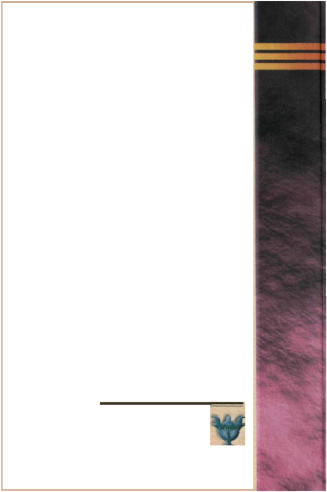

Издательство Института Психотерапии Москва
2001
Что делать, когда тот, кого вы любите, в депрессии. Помоги себе — помоги другому. Руководство. — Пер. с англ. О. Цветковой. — М.: Издательство Института Психотерапии, 2001. — 176 с.
Депрессия — одно из самых распространенных в наши дни заболеваний. Как вести себя близким людям страдающего человека, чтобы помочь ему преодолеть недуг? Митч и Сьюзен Голант написали книгу, которую назвали практическим руководством. В ней они ответили на множество вопросов: как распознать признаки депрессии; как отличить депрессию от меланхолии; как говорить с человеком в подавленном состоянии, чтобы вселить в него надежду на выздоровление и веру в то, что он не одинок; как самому уцелеть в этой нелегкой ситуации и не позволить депрессии близкого человека поглотить вас; как преодолеть стыд и страх, сопровождающие представление об этом заболевании; какие существуют методы лечения и как выбрать наиболее подходящий и т. д.
Кроме полезных практических советов, книга замечательна еще и своим трезвым взглядом, а также интонацией сочувствия и веры в человеческие возможности.
ISBN 5899390395
© Митч и Сьюзен Голант, 2001
© Издательство Института Психотерапии, 2001
Глава 1. Когда тот, кто вам дорог, в депрессии
Глава 2. Что такое депрессия?
Глава 3. Влияние депрессии вашего любимого на вас
Глава 4. Ваша роль «сильного союзника»
Глава 5. Утешение вашего любимого в подавленном состоянии
Глава 6. Обрести надежду в терапии и лечении
Глава 7. Конструктивные альтернативы
Глава 8. Что вы можете ожидать от медицинского общества
Глава 9. Когда депрессия может быть опасна
Глава 10. Обретение нового нормального состояния
Глоссарий
Посвящается моим родителям
М. Г. Г.
Здесь жди меня; и дух обогати
Надеждой доброй; в этой тьме глубокой
Тебя и дальше буду я блюсти.Данте, «Ад», Песнь Восьмая, 106–108
Если бы не вдохновение и поддержка, оказанные Сюзанной УикхэмБейрд из Вилларда, у нас не было бы возможности написать такую книгу. Мы глубоко признательны ей, а также нашему представителю Бобу Тэбиану, который всегда заботливо опекает наши интересы.
Мы выражаем свою благодарность многим людям. Во-первых, коллегам по работе, которые с энтузиазмом побуждали нас к работе над этим проектом, делясь с нами своими прозрениями и переживаниями. Это Алан Рабинович, Малькольм Шульц, Майкл Стейтс, Сайделл Грант, Стюарт Уолмэн и особенно Уильям Кобурн и Линда Марса. Я признателен своим коллегам по еженедельным конференциям — Черил Бенэн, Филлис Гелбер, Барбаре Гуггенхейм, Анни Пановски и Виолетте Стернберг за их профессиональную честность. Я также в долгу перед специалистами и персоналом Тренингового центра Общества хорошего здоровья — Карлой Коуэн, Лолой Фишер, Сангитой Леви, Рут Сэлк, Дженет Смит, Линн Вейнгартен и Карен Вурцелза за их поддержку и доброжелательность.
Мой наставник, учитель и друг Гарольд Г. Бенджамин, основатель и президент Национального общества хорошего здоровья, показал мне, что значит для людей сила печатного слова. Гарольд являет собой пример руководителя, требующего от себя не меньше, чем от других.
Я благодарен своей семье — дочерям Чери и Эйми, которые своим искренним отношением к жизни пробуждают в нас чувство великой радости и любви. Я во многом обязан своему брату Уильяму Голанту, а также родственникам со стороны жены — Мери, Артуру и Генриетте Клейнхэндлер, которые, когда нужно, всегда были рядом.
И, наконец, я очень благодарен Сьюзен, моей жене и соавтору. Мы с ней близки, словно две клетки, появившиеся при делении из одной — лучшие друзья, любовники, наперсники. В грустные времена ты утешительница, во времена конфликтные — защитница. Исключительно страстный писатель, мыслитель и учитель, ты помогаешь многим людям дать рождение делу всей их жизни. Среди этих людей, разумеется, и я.
В глубине своего сердца я верю, что, выпустив эту книгу, мы помогли друг другу залечить многочисленные раны. В жизни моих родителей мы видим особый смысл: мы надеемся, что их страдания преобразуются для других людей в источник утешения.
М. Г. Г.
К оглавлению ↑Когда тот, кто вам дорог, в депрессии...
Когда тот, кто вам дорог, в депрессии, у вас может возникнуть целый спектр подобных эмоций. Порой для вас это становится шоком. Возможно, вы захотите «оттолкнуть» от себя ситуацию в целом и станете отрицать реальность происходящего. Возможно, вы начнете злиться и разражаться тирадами: «Как это могло случиться? Почему это происходит с нами, с нашей семьей, с нашим другом?» Вы можете отступить или почувствовать безнадежность ситуации и сами оказаться в депрессии. Вы даже можете увещевать Бога или пытаться договориться с любимым человеком: «Ах, если бы ты только попытался... Если бы ты только встал утром, я бы уделил тебе больше внимания».
Ваш любимый человек может оказаться в депрессии просто потому, что потерял работу, или у него проблемы с деньгами, или он горюет по поводу недавней кончины кого-то из родных, или просто порвал с кем--то отношения. Между обычной меланхолией и клиническим случаем развившейся депрессии пролегает целый ряд непрерывных состояний. Моя семья оказалась на самом тяжелом участке этого спектра, и теперь я на примере своей ситуации постараюсь передать, насколько глубоко ощущается твоя забота о страдающем депрессией любимом человеке, твоя борьба за него, а также та неподдельная боль, которую он испытывает.
Когда мне было четырнадцать лет, мама впала в депрессию. Ее депрессия, усугубленная отъездом старшего брата в Англию для завершения учебы в Оксфордском университете, ощущалась как затмение, которое окутало сначала комнату, а затем и весь дом. Проявления депрессии случались и раньше — словно частичные солнечные затмения, выбивавшие нас на некоторое время из колеи. Но до того как над нами нависла эта тень, мы всегда были способны возвращаться в прежнее русло.
Но теперь все было иначе. Целыми днями, а потом и неделями мама не покидала своей комнаты. В каждом ее вздохе слышались болезненные стоны. Она все время ходила в черной ночной рубашке и вообще одевалась редко. Она даже к обеду почему--то не появлялась. Ее уединенность нас шокировала.
Я вспоминаю, как пытался ей помочь. Придя из школы, я входил в ее комнату, присаживался к ней на кровать и пытался развеселить ее историями о проделках своих школьных друзей. Я оставлял на ее тумбочке свои контрольные, которыми гордился, но она не реагировала. Иногда я ловил себя на том, что говорю с ней понарошку, полагая, что она якобы слушает... и оставался беспечным. И это все, что я мог делать, чтобы как-то сдерживать себя. На самом же деле я был испуган.
Порой мама разражалась тирадами. Обычно она начинала говорить спокойным тоном, и поначалу я был благодарен, что она, наконец, заговорила. Но вскоре, как только мама касалась в разговоре человека или события, якобы разрушившего ее жизнь, ее речь становилась грубой и резкой. Она угрожала покончить с собой. Иногда я был «причиной» ее проблем.
Эта нависшая тень отчаяния была непроницаема для любых протестов и доводов.
Мой отец искал, как ей помочь. Время от времени нас навещал семейный врач. Иногда мама положительно откликалась на эту заботу. Но порой после ухода врача она бранила нас, что мы ее смущаем и усугубляем ситуацию. Маме было стыдно, что врач счел ее «сумасшедшей», и в результате она отказалась от любого лечения, за исключением обезболивающих таблеток. Она принимала целую кучу лекарств, прописанных от множества физических недугов, ставших средоточием ее проблем. После нескольких месяцев этого круговорота молчания, болтовни, жалоб на свое здоровье и полного отвержения папа отступил, да и мои усилия не увенчались успехом.
Мама все время пребывала в тревоге и беспокойстве.
Много лет спустя, изучая в аспирантуре образовательную психологию, я решил попробовать себя в психотерапии и пройти практику в качестве консультанта на «горячей линии» лос-анджелесского Центра предотвращения самоубийств. Во время интервью один из директоров спросил: «Почему тебя так интересует предотвращение самоубийств?» Я запинался, покашливал и мямлил, пытаясь говорить о «помощи другим» и о том, что меня всегда «интересовала психология», и вскользь упомянул, что моя мама страдает депрессией.
В конце интервью директор сказал: «Самая главная причина, почему ты хочешь заняться этой практикой — состоит в том, что она может тебе помочь понять свою маму. Ее депрессия — весомый аргумент, чтобы заняться такой работой. И эта работа действительно сделает тебя хорошим специалистом. Это отличная практика!»
С этого удивительного вступления начался длинный путь к пониманию депрессии моей матери, и в итоге это помогло мне стать хорошим сыном, лучше чувствовать людей, нуждающихся в заботе, а также стать более чутким психологом. Я тогда не осознавал этого, но директор совершенно четко увидел во время интервью, что мой интерес к психологии мотивирован необходимостью найти способ помочь маме, семье и самому себе.
Теперь мною движет желание поделиться с вами своим опытом относительно того, как быть, если ваш любимый человек в депрессии. Из многолетней практики и рекомендаций, которые я дал сотням семей, поделившихся со мной своими печалями и радостями, я открыл для себя, что существуют способы помочь дорогому вам человеку, находящемуся в депрессии, так, чтобы этот процесс сблизил вас еще больше.
В отличие от хронических болезней, таких, как сердечные заболевания или артрит, депрессия несет на себе клеймо стыда, которое только усиливает ее. Это клеймо мешает семнадцати миллионам американцев, страдающих депрессией и крайне нуждающихся в лечении, найти те средства, которые действительно могли бы им помочь. Согласно последнему докладу, опубликованному в «Нью-Йорк Тайме», две трети тех, кому требуется лечение от депрессии, никогда не получают его.
Невылеченная депрессия обходится нации от тридцати до сорока четырех миллиардов долларов в год, затрачиваемых на медицинские расходы, невыходами на работу и утратой производительности.
Мифы и полуправдивые доводы относительно этого состояния могут для вас и вашего любимого только затруднить борьбу с этой и без того ужасно изнурительной болезнью. Давайте прямо сейчас рассмотрим некоторые из этих мифов и развеем их.
Такие утверждения, как «Если бы ему приложить побольше усилий...», или «Будь она благоразумной...», или «Почему бы ему не перестать!», могут лишь обострить и без того трудную ситуацию.
Высказывать такие банальности человеку, впавшему в депрессию, столь же бесполезно, как говорить пациенту с больными почками, что будь у него достаточно силы воли, он смог бы контролировать работу почек.
Убеждение относительно отсутствия упорства и силы воли, необходимых для того, чтобы справиться с проблемой, может еще больше развить в человеке негативные мысли о себе, которые у страдающего депрессией уже имеются. Такое убеждение только ухудшает положение, ибо направляет человека вниз по спирали самоедства и отчаяния.
Даже тем из нас, кто не страдает депрессией, знакомы самокритичные мысли. Они бывают у всех нас. Но мы знаем, что они приходят и уходят, и обычно можем с ними справиться. К сожалению, человек в депрессии на это не способен: по его мнению, контроль негативных мыслей не входит в диапазон возможного. Эти слова бесконечно повторяются как траурный рефрен на заезженной пластинке: «Я лодырь. Я тупица. Я неудачник. Я никчемный и безнадежный человек».
Зачастую человек в депрессии, словно в свободном падении, следует туда, куда его ведут эмоции. Те из нас, кто не страдает депрессией, знают, что разыгравшиеся эмоции в конце концов утихнут, но для человека в депрессии переживания взлетов и падений, поворотов и виражей своих чувств подобны тому, как если бы мы сели на проходящий поезд, толком не зная, где и когда нам выходить. К сожалению, такой человек не может с собой совладать.
Депрессия — это болезнь, имеющая биологические, социальные и психологические компоненты. Ее нужно лечить. Часто она переходит в хроническое состояние с обострениями и ремиссиями. И одной лишь силой воли здесь не обойтись.
Недавно я смотрел фильм «Сумасшествие короля Георга». Помню, как во время просмотра у меня возникали мысли: «Видимо, депрессия короля Георга объяснялась тем, что он потерял свои колонии. Доктор использует свою систему позитивного подкрепления, характерную для восемнадцатого века... и она работает».
Во время своих последних зачетов я был даже поражен, узнав об особом патологическом состоянии — порфирии, физиологическом заболевании нервной системы, которая, возможно, и спровоцировала сумасшествие короля. Мне было интересно, обусловлена ли проблема короля Георга только физиологической причиной или все же потеря колоний стала существенным стрессовым фактором, спровоцировавшим болезнь? Кто знает?
Однако урок, вынесенный из этого фильма, сыграл очень важную роль для всех нас. То, что выглядит как сумасшествие, может в действительности оказаться следствием некоего биологического нарушения. Депрессия — не всегда в голове. На самом деле она может возникнуть как симптом какого-либо на первый взгляд не связанного с ней физиологического отклонения.
Некоторые люди, например мой брат, убеждены, что депрессия — это вид сумасшествия, и это убеждение пробуждает чувство стыда. Это мнение восходит к делам по меньшей мере столетней давности и вызывает образы, и по сей день резонирующие в нас, — образы людей, страдающих эмоциональными расстройствами, которых общество избегает и упекает в нечеловеческие психушки.
Стыд — это симптом, часто сопутствующий депрессии. Однако депрессия — вовсе не то, чего следует стыдиться. Депрессия — это не моральная позиция, которую выбирают, а потом стыдят себя за этот выбор.
Однако чувство стыда, возникающее у человека в депрессии как симптом, может стать ценным материалом для понимания психологических корней болезни. Когда это чувство исследовано в процессе психотерапии, зачастую наступает некоторое облегчение. Но клеймить депрессию позором — значит делать еще хуже, все равно, что добавлять масла в огонь.
К сожалению, человек в депрессии также может порой думать, чувствовать и даже верить, что он сходит с ума. Когда к стыду добавляешь клеймо сумасшествия, ситуация начинает совсем сбивать тебя с толку. Ассоциация с сумасшествием пробуждает образы из «Полета над гнездом кукушки»: если уж ты попал в психбольницу, тебе не миновать ужасной электрошоковой терапии, проводимой вообще без анестезии, а также лоботомии. Возможно, эти страхи устарели и стали совсем безосновательны, но для человека в депрессии они вполне реальны.
Ваша роль человека, проявляющего заботу, заключается в том, чтобы быть сильным союзником, способным оказать поддержку и убедить своего любимого в том, что его самые худшие чувства не станут реальностью, а также быть рядом до конца лечения.
Мы всегда должны быть осторожны, применяя по отношению к людям, страдающим депрессией, какие--либо ярлыки, стереотипы и попытки классификации.
И снова неправильно! Человек может быть в депрессии и все же функционировать. Большинство людей, страдающих депрессией и получающих лечение (психотерапию совместно с медикаментозным лечением или без него), ведут продуктивную жизнь. Они выполняют семейные обязанности. Это чудо медикаментозного и психологического лечения. Люди, страдающие депрессией и получающие лечение, попрежнему работают, подобно профессиональному футболисту, продолжающему играть, превозмогая боль от травмы. Они просто преодолевают свое состояние, и для них каждый день — это маленькая победа.
Одна моя пациентка, Сара, которой было около тридцати лет, окончив элитарный университет, переехала с Восточного побережья в ЛосАнджелес. Первый год она была в восторге от своей работы системного программиста. Она добилась замечательных результатов в работе и в конце года получила премию.
Однако на следующий год Сара была сильно потрясена тем, что произошло. Ее начальник перешел на другую работу, и ее перевели в другой коллектив, работающий над другим проектом. Она вдруг стала лишней. Это повергло ее в депрессию. По мере того, как на работе на нее все больше и больше оказывали давление, ее депрессия усиливалась, но вместе с тем именно работа становилась для Сары последней надеждой: она была уверена, что, ходя каждый день на работу, она хоть как-то поддерживает контроль над своей жизнью.
Идея лечения — повысить способность дорогого вам человека функционировать в этом мире, несмотря на депрессию.
Психотерапия в лечении депрессии эффективна в 80 процентах случаев и приносит невиданную пользу. Она повышает продуктивность и улучшает качество жизни. Действительно, в статье, недавно опубликованной в «НьюЙорк Таймс» и рассказывающей о различных средствах от депрессии, приводятся аргументы в поддержку психотерапии. Доктор Дэвид Антонуччо, психолог из университета Невады, и его коллеги обнаружили в своих исследованиях, что, «несмотря на общепризнанную мудрость, данные говорят в пользу того факта, что от депрессии, пусть даже серьезной, нет сильнее лекарства, чем психотерапия».
Интересно, что в «Консьюмер Репорте» недавно было опубликовано аналогичное заключение. После того как тысячи подписчиков ответили на самый большой опрос по поводу использования влечении депрессии психотерапии и/или лекарств, исследователи из Союза потребителей сделали вывод, что «психотерапия без применения лекарств так же работает, как и психотерапия в сочетании с лекарствами, такими, как прозак или ксанакс, но многие люди отмечают побочные явления».
Тем не менее одной психотерапии не всегда бывает достаточно. Если близкий вам человек находится в очень тяжелой депрессии, то наряду с психотерапией ему могут потребоваться и лекарства.
Само привыкание уже влечет за собой симптомы отвыкания, а также идею о том, что раз уж «подсел» на таблетки, то это навсегда. Зависимость же означает, что для получения полного эффекта человеку требуется все больше и больше лекарств. За этим кроется страх передозировки. Ни одно из этих состояний не характерно для приема большинства современных лекарств, используемых при лечении депрессии.
Однако правда и то, что человеку, перенесшему приступы сильной депрессии, лекарство может понадобиться до конца жизни как средство, спасающее его жизнь и рассудок. Каковы бы ни были обстоятельства, прием лекарств должен всегда контролироваться в соответствии с тем, какая доза необходима, как часто его следует принимать и каково его успокаивающее действие. В главе 6 мы более глубоко затронем тему лекарств.
«Депрессия» — модный термин, которым часто обозначают самые разные проблемы и состояния: от обычной печали по поводу потери возлюбленного до саморазрушительного суицидального состояния. (В главе 2 я буду рассматривать различные степени депрессии, включая «клиническую депрессию».)
Но депрессия, разумеется, не какой-то отдельный недуг. Она может быть:
Депрессия также может проявляться во многих формах:
Важно помнить, что прежде чем дать дорогому вам человеку четкий план действий, нужно выяснить, какие психологические, социальные, биологические и генетические элементы лежат в основе его состояния и какое лечение необходимо.
Напротив, злоупотребление различными веществами и депрессия тесно связаны между собой. По словам Алана И. Лешнера, директора Национального института проблем наркотической зависимости, 25 процентов людей, страдающих сильной депрессией, также имеют явную проблему зависимости от алкоголя или наркотиков.
Между злоупотреблением различными химическими веществами и депрессией существует взаимозависимая связь. Многие алкоголики и наркоманы на самом деле пытаются заниматься самолечением своей депрессии, когда позволяют себе уколоться или выпить. Например, если у них маниакальнодепрессивный психоз, они могут употреблять алкоголь, чтобы смягчить свои состояния повышенной активности, и кокаин, чтобы вызвать их в периоды бездеятельности. Любимыми лекарствами моей мамы были снотворные таблетки и эмпиринкодеин №3, обезболивающий препарат, вызывающий привыкание, который, как ей казалось, притупляет ее душевную боль.
Однако, к сожалению, это лишь временное решение проблемы. Например, алкоголь сначала позволяет почувствовать облегчение человеку, страдающему депрессией. Он растормаживает — освобождает человека от его внутренних запретов, но также является и депрессантом. Пристрастие к таким веществам, как кокаин или кодеин, может создать еще более сложные проблемы.
Правильное применение антидепрессантов часто помогает проконтролировать и облегчить как злоупотребление химическими веществами, так и другие виды навязчивого поведения. Мой пациент Пол имел множество пристрастий — к порнографии, к еде, к марихуане и алкоголю. Как только его депрессия была обнаружена и вылечена, все пристрастия, которые были огромной «утечкой» для его продуктивной деятельности и семьи, стали лучше поддаваться контролю.
Я обнаружил, что когда дорогой вам человек оказывается в депрессии, то первая реакция — как правило, неверие. Мы не можем понять, что произошло. Мы ищем то, что могло спровоцировать данный эпизод. Мы расстраиваемся и сердимся. Мы шокированы.
Но для человека в депрессии это мрачное настроение словно огонь, непрестанно тлеющий в его душе. Событие, которое, на наш взгляд, спровоцировало такое состояние, — словно порыв ветра, раздувший из тлеющих углей пламя. Для моей мамы таким событием стал отъезд моего брата; для других это может быть потеря работы или любимого человека, неудачный бизнес, диагноз хронического заболевания, развод — любая потеря, которая кажется непоправимой.
Вместо того чтобы распознать в качестве элементов депрессии такие симптомы, как потеря производительности, плохие мысли, сонливость или бессонница, потеря аппетита, приступы вялости или повышенной активности, которые уже давно существовали в более приглушенной форме, мы часто склонны видеть саму причину депрессии в спровоцировавшем ее событии. Возможно, так происходит потому, что эти симптомы больше похожи на идиосинкразии, чем на признаки тлеющего недуга. Или, быть может, человек просто держит в себе всю глубину своих проблем.
Внезапный взрыв симптомов, включая и такие серьезные, как суицидальные действия, например, передозировка лекарств или порезы запястий, могут вызвать в нас чувство вины по поводу случившегося.
Многие родные и близкие страдающих депрессией убеждены, что они «должны были это предвидеть» или «слишком долго ждали», прежде чем обратиться за помощью. Чтобы решить эти проблемы, на данном этапе они могут проявлять большую активность. Человека, впавшего в депрессию, родные ведут к врачу, консультируются с психиатром, снова связываются с психотерапевтом, который помог при прошлом обострении. На решение проблемы расходуется огромное количество энергии — все равно, что прорвавшаяся труба, которую нужно срочно починить.
Конечно, очень важно искать помощь и мобилизовать свои ресурсы, но нужно учиться соизмерять свои шаги. Не следует ждать мгновенного разрешения проблемы. Помните, когда прорывается водопроводная труба, протечка может запачкать стены, испортить ковры, покоробить полы и даже разрушить фундамент, на котором построен дом. Здесь много работы. На этом этапе важно терпение и лучше всего сосредоточиться на ценности ваших усилий и небольших успехов.
В моей же семье, где недоставало нужных ресурсов, отец почувствовал безнадежность ситуации и отстранился. Я помню, как он сидел у мамы на кровати, положив свои руки ей на колени или держа ее за руку. Вечером я видел, как он одиноко сидит с бутылкой виски и устало глядит в пустоту, думая о том, как он завтра встанет и пойдет на работу, как встретит новый день. Он потерялся в своем одиночестве, не зная, что делать.
Сам чувствуя себя подавленным, отец постепенно начал отдаляться от матери. Он стал раньше уходить на работу и все позднее и позднее возвращаться домой, оставляя маму в еще большей изоляции... обрекая себя самого, да и меня тоже, на еще большее одиночество.
Моего отца каким-то образом словно засосало в водоворот маминой болезни. При наличии соответствующего руководства он смог бы найти способ помочь себе и маме. Книга «Что делать, если тот, кого вы любите, в депрессии» поможет вам вместе с близким человеком найти путь, ведущий из этой болезни к свету. Вы хотите поддерживать ваши отношения, хотите быть полезным. Данная книга повысит вашу способность достижения этих целей.
Одна из целей книги «Что делать, когда тот, кого вы любите, в депрессии» — помочь вам и вашему близкому человеку получить необходимую помощь. Проблема может заключаться в том, что человек в депрессии слишком бездейственен, чтобы обратиться за помощью самостоятельно. И все же для того, чтобы избавиться от депрессии, существует много средств, и большинство из них весьма эффективны.
Имейте это в виду. Если к вам периодически возвращаются головные боли, то иногда достаточно просто позволить себе вздремнуть. Но бывает, что сон и пара таблеток аспирина не оправдывают ваших ожиданий. Если они вам не помогли, вы, возможно, примете тайленол или адвил. Вы устраиваете себе выходной, но если и это не помогает, то идете к врачу или, возможно, проходите неврологическое обследование или даже полное клиническое обследование. Вы продлеваете свой отпуск. Вы даже меняете работу, если это нужно. Вы переезжаете в другой город. Иными словами, вы делаете все, что можете.
То же самое можно сказать и о попытках избавиться от депрессии. Вы не перестаете искать самое эффективное лечение. Лучше всего не привязываться к какому-то одному методу как к панацее. Нужно поддерживать человека, впавшего в депрессию, во всех его стараниях — поощрять даже самые незначительные шаги, которые он, возможно, предпринимает.
Именно это можно сказать о моей пациентке Саре, которая впала в депрессию, когда ее ситуация на работе ухудшилась. Ее муж Фрэнк был для нее самым активным «болельщиком» и помощником. Он содействовал скорейшему получению ответов на резюме, посланные в другие фирмы. Он даже помог ей документально подтвердить плохое обращение с ней на работе.
Гибкость, практичность и методы, предложенные в следующих главах, помогут вам придумать стратегию выживания и выздоровления. Они — ваш арсенал. Используйте их, если они работают, и отказывайтесь от них, если они утрачивают свою действенность. Приспосабливайте их к своей личности и ситуации. Кроме того, важно осознавать, что у вашей помощи есть свой предел. Человек, страдающий депрессией, чтобы начать выздоравливать, должен сам взять свою болезнь под контроль. Существует водораздел между тем, когда вы приносите пользу человеку, и тем, когда вы просто жалеете его, то есть не даете человеку, впавшему в депрессию, решать свои проблемы самостоятельно, оставляя тем самым их неразрешенными. Его ответственность за самообразование, активное участие в борьбе с болезнью и осознание глубины болезни критически важны для выздоровления. Это мы будем обсуждать далее, в главе 4 «Ваша роль как сильного союзника».
Однако есть вещи, которые вы можете делать и говорить, установки, которых вы можете придерживаться, границы и пределы, которые вы можете установить, и они более эффективны, чем те, которых придерживались мои родители. Даже если ваши действия поначалу, казалось бы, не доходят до любимого человека, от них все равно будет толк. Это самое полезное и правильное, что вы можете сделать.
Более того, есть способы утешить себя в этом процессе и позаботиться о себе.
Когда тот, кого вы любите, в депрессии, не стоит отчаиваться. Надежда есть.
К оглавлению ↑Человек, испытывающий печаль или пребывающий в меланхолии, может назвать свое состояние депрессией, но, по сути, это может быть не обязательно депрессия. Существует целый спектр душевных переживаний — от простой хандры до развившейся клинической депрессии.
Маргарет, пятидесятичетырехлетняя женщина, адвокат по профессии, однажды пришла ко мне в кабинет с жалобами на депрессию.
— Мне так грустно, — говорила она. — Чтобы я ни делала, я как будто отсутствую. У меня просто нет энергии.
Зная о том, что младшая дочь Маргарет только что окончила первый курс колледжа, я стал вникать в суть дела.
— А спите вы спокойно? — спросил я.
— Да что вы! Сплю хорошо, — ответила Маргарет, удивленная моим вопросом.
— Может быть, у вас стал хуже аппетит?
— Ах, если бы так! Кажется, я совсем не похудела, — сказала она.
Дальше я стал задавать вопросы о отношениях Маргарет с мужем, друзьями, коллегами, а также спросил, не было ли у нее навязчивых и тревожных мыслей о смерти.
— Нет! — почти с негодованием ответила Маргарет.
Я сел, вздохнув с облегчением. Причиной меланхолии Маргарет было ее опустевшее гнездо. Даже несмотря на то, что она говорила о своей депрессии, в клинических терминах ее состояние депрессией не являлось. По мере продолжения нашего разговора о том, что для нее значит отсутствие дочери, я почувствовал уверенность, что Маргарет выполнит все необходимые рекомендации и через неделюдругую выйдет из своей хандры.
Важно не путать печаль, вызванную горем или потерей, и депрессию. Печаль часто возникает как реакция на недавнее внешнее событие, такое, как травма, болезнь или потеря любимого человека. Она обусловлена ситуацией. Рано или поздно ее переживает подавляющее большинство людей; мы проходим через нее как через некую стадию.
Например, я вспоминаю взрыв космического корабля «Челленджер». Как и всякого представителя нации, эта трагедия глубоко взволновала меня. Особенно я был потрясен гибелью Кристы Маколифф, школьной учительницы и матери, которая была на борту корабля единственным гражданским астронавтом и у которой был девиз «Я учу, соприкасаясь с будущим». Целую неделю я испытывал печаль и иногда плакал, ставя себя на место ее семьи, так же как и на место других семей, понесших утрату.
Шли дни и недели, и я все больше и больше философски постигал то, насколько скоротечна наша жизнь: мы думаем, что можем контролировать все, но это «все» меняется в каждый момент. Я размышлял, действительно ли взрыв «Челленджера» — это провал или все же можно сказать, что, несмотря на трагический исход своей миссии, эти храбрые люди в чем-то преуспели. В конце концов, они могли контролировать свои усилия, но не исход полета. Я надеялся, что после взрыва корабля НАСА сможет найти причину трагедии и, таким образом, предотвратить возможные дальнейшие катастрофы. Так или иначе, я пытался найти, в чем ценность и высшая цель страданий астронавтов, а также боли, которую тогда испытывала вся нация.
Спустя несколько недель, по мере того, как моя жизнь наполнялась другими событиями, гибель «Челленджера» и его экипажа стала мною осознаваться не так остро, и вместе с этим утихала моя печаль.
Аналогичным образом печаль моей пациентки Маргарет была связана с отдельным событием — с отъездом ее дочери и с потерей своей роли матери. Но в конце концов Маргарет почувствовала, что ее новообретенная свобода позволяет отдавать больше энергии мужу и своей процветающей карьере. По мере того, как печаль рассеивалась, Маргарет стала радовать любая мысль о том, что она может сделать: теперь ей больше не надо было каждый день присматривать за детьми.
Цель этой главы — дать полезные советы о том, как помочь любимому человеку, который пребывает в меланхолии или депрессии. Я обрисую симптомы депрессии, чтобы вы смогли отличить их от обычной меланхолии или печали. Многие замечательные авторы писали о своей депрессии, а также о том, насколько эта болезнь разрушает человеческую душу, и мне хотелось бы поделиться с вами такими описаниями.
В этой главе я ознакомлю вас с элементами депрессии, чтобы вы могли лучше понять переживания любимого человека и стать его соратником в борьбе за выздоровление. Если же это не клиническая депрессия, а просто меланхолия, то вы поймете, почему такое состояние также не следует оставлять без внимания.
Печаль как у Маргарет — одна из обычных эмоций, которые мы ощущаем. Печаль, разочарование, потеря, горе и скорбь — равно как и радость, удовлетворение, чувство свершения и ликование — лишь некоторые из великого множества чувств, которые в тех или иных ситуациях считаются нормальными. Обычно меланхолия, как и большинство других чувств, со временем рассеивается.
Но бывают случаи, когда меланхолия может перейти в депрессию. В каких случаях это происходит, обычно зависит от склонности человека «пережевывать» свое состояние. Такое «пережевывание» сулит постоянное беспокойство, порождающее мысли о том, как тебе плохо.
История Конни — наглядный пример того, как меланхолия может перерасти в полную депрессию. Конни — тридцатилетняя учительница истории. За свою пятилетнюю практику преподавания она разработала новые методы ведения уроков, побуждающие школьников расширять свой кругозор за пределы учебников. Ученики, их родители и администрация школы всегда хвалили ее за умение преподавать и самоотдачу.
Когда же Конни пришла ко мне, она жаловалась на бессонницу и опасалась, что ее продуктивность стала ниже. Теперь она целыми часами размышляет над тем, как ей провести урок, но так и не может осуществить свой план, написанный на листке бумаги. Более того, на столе Конни всегда оставалась лежать целая кипа контрольных, которую она каждый раз планировала разделить на пачки по десять штук, чтобы добавить себе работы на выходные, но никак не могла собраться, чтобы сделать это.
Всегда преуспевавшей Конни такое резкое падение казалось непривычным. Вскоре она стала называть себя лентяйкой. «Что со мной произошло?! — удивленно восклицала она на сеансе психотерапии. — Почему я не могу закончить ни одно дело?»
Конни рассказывала о себе, и из ее слов становилось ясно, что за последние годы ей пришлось пережить несколько больших потерь. Она порвала длительные отношения со своим другом, и, кроме того, директор школы, который ее поддерживал, перешел работать в другую школу. И та, и другая потеря стали причиной меланхолии Конни и снижения ее производительности.
Но эти «пережевывания» — постоянные размышления над самыми сокровенными вопросами о своей компетенции, лени и внешнем благополучии — привели Кони к грани депрессии. Дэниел Гоулмэн, редактор отдела в «НьюЙорк Тайме», в своей книге «Душевный разум» (Emotional Intelligence) пишет: «Одним из определяющих факторов устойчивости и усугубления депрессивного состояния является то, насколько люди склонны думать о своем состоянии. Беспокойство по поводу моментов, повергающих нас в депрессию, делает депрессию более сильной и продолжительной».
Размышления Конни о работе, повидимому, отвлекли ее внимание от душевной боли, которую она когда-либо в жизни испытывала. Если бы она не прибегла к лечению, ее гнетущие мысли и беспокойство могли бы усилиться еще больше. Она бы целыми ночами напролет металась в агонии, размышляя о том, что подумают о ней ученики и их родители. Ее мучили бы мысли об увольнении. Ее продолжали бы беспокоить отсутствие аппетита и неспособность сосредоточиться. И если бы эти мысли повторялись постоянно и усиливались все больше и больше, из ее простого случая меланхолии могла бы развиться депрессия.
Кей Редфилд Джемисон, профессор психиатрии из университета Джона Хопкинса, страдающая маниакальнодепрессивным психозом, в своей книге «Беспокойный ум: биография настроений и безумия» (Anquiet Mind: A Memoir of Moods and Madness,) пишет: «Некоторые думают, что им знакомо ощущение депрессии, поскольку доводилось пережить развод, потерю работы или разрыв отношений. Но эти переживания несут в себе чувства. Депрессия же, наоборот, ровна, пуста и нестерпима».
Иногда печаль по поводу смерти любимого человека может сильно подорвать силы. Скорбящий действует и реагирует, словно в замедленной съемке. Но такое состояние для скорбящего вполне объяснимо и не является психическим расстройством. Если человек переживает свою утрату не слишком долго и мучительно, то такой период отстранения и печали лишь способствует тому, чтобы оправиться от удара. (Но если дни скорби становятся неделями, а затем и месяцами, то здесь уже появляется подозрение на депрессию). «Скорбь, — пишет Кей Джемисон, — к счастью, очень отличается от депрессии; она печальна, она ужасна, но не безнадежна».
С другой стороны, настоящая депрессия не обязательно связана с очевидными внешними событиями, такими, как смерть или потеря работы. Как мы увидим, она может быть обусловлена генетической наследственностью и химическим дисбалансом в мозге. Депрессия — это не то, что приходит и уходит. Это не просто плохое настроение, которое пройдет через неделюдругую.
Люди, страдающие депрессией, описывают это переживание как невыносимое для души ощущение безнадежности и отчаяния, словно у них отсутствует «я». Все, что они видят, чувствуют и переживают, окутано черной тучей. Деревья и цветы весной, которые для всех остальных являются символом надежды и любви, могут пробудить в страдающем депрессией человеке образы тления и распада. В самом деле, такой человек может почувствовать, что погряз в отвращении к себе и неукротимой боли, и постоянно думать о смерти и самоубийстве.
Джемисон пишет о том, как ты себя ощущаешь в депрессии:
«[Депрессия] кровоточит в отношениях с людьми подозрительностью, отсутствием доверия и самоуважения, неспособностью радоваться жизни, нормально двигаться и говорить, истощением, ночными и дневными кошмарами... Она навевает на вас переживания о том, каково быть старым, дряхлым и больным, каково умирать; что значит быть тугодумом, непривлекательным, плохо воспитанным, неловким, уродливым, не верить в возможности, которые дает жизнь, в наслаждение сексом, в изысканность музыки или в способность рассмешить себя и других».
Эти негативные мысли остаются с человеком изо дня в день, пронизывая всю его жизнь. Эти мысли зачастую держатся в секрете от семьи, друзей и коллег, но они, как споры, попав на благоприятную почву, прорастают, дай им только повод.
Депрессия не всегда выглядит одинаково: она может проявляться как некий спектр эмоций. У людей, пребывающих в депрессии, настроение может меняться от тревоги к гневу и отчуждению и затем все может повторяться снова. Ваш любимый человек, так же как моя мама, даже может переживать все эти эмоции в одном эпизоде.
Каждый человек уникален. Вы можете обнаружить, что ваш любимый человек будет чувствовать или выражать какую-либо эмоцию больше, чем кто-либо другой. Например, у моей мамы в первую очередь разыгрывался гнев. Затем обычно следовало отчуждение. Ее тревога проявлялась, когда ей нужно было присутствовать вместе с другими на каком-нибудь празднике или на дне рождения. В таких случаях она боялась вызвать в людях недовольство. Ее беспокоило, что она плохо выглядит и плохо одета.
Одна моя пациентка, Клэр, рассказывала, что утром у нее все было в порядке, и она понадеялась, что депрессия прошла. Однако к четырем часам она обнаруживала, что ее тревога растет все больше и больше. Ее размышления о возрастающей тревоге вызывали очередной депрессивный эпизод.
Еще одна моя пациентка, Карен, младший сын которой уехал учиться в колледж, также обратилась ко мне с жалобами на депрессию. Расспросив Карен, я узнал, что полгода назад умерла ее мать после продолжительной борьбы с раком легких, но такие гнетущие симптомы депрессии, как бессонница и потеря интереса к половой жизни, начали беспокоить Карен еще за год до смерти матери. Последней каплей стал отъезд сына на учебу.
Эта женщина действительно была в депрессии. Она с трудом находила силы, чтобы встать утром и встретить новый день. Ее переполняли мысли о смерти. Но она не делилась своими страданиями с мужем и сестрой, самыми близкими людьми, на которых она могла положиться. Просить о помощи было для нее чем-то чуждым. Как и многие другие люди, впавшие в депрессию, она переносила свои страдания молча.
Почему же люди держат свои симптомы в тайне? Как лауреат Пулитцеровской премии писатель Уильям Стайрон, они, возможно, не осознают, с чем имеют дело. В хронике своей депрессии 1990 года «Зримая тьма: Записки о сумасшествии» (Darkness Visible: A Memoir of Madness) Стайрон пишет:
«Безусловно, я замечал, что все окружающее в определенные моменты приобретает иной оттенок: сумерки казались более мрачными, утра были менее радостными, прогулки в лесу стали менее интересны, а в мои рабочие часы во второй половине дня наступал момент, когда мною овладевали паника и тревога... Мне должно было быть ясно, что я уже зажат в тисках дурного настроения, но в то время я был несведущ в таких состояниях».
Некоторые убеждены, что симптомы «завтра» пройдут, если прогуляться, вздремнуть, выпить виски или принять таблетку. Но завтра повторяется то же самое. Если друзья человека, впавшего в депрессию, замечают, что тот неважно выглядит, то он, бывает, отвечает: «Что вы, со мной все в порядке! Не беспокойтесь обо мне!» Хотя этот человек сам себе постоянно задает вопросы относительно своего состояния. Как пишет Кэй Джемисон: «Вы испуганы, вы боитесь, и сейчас вы — вовсе не вы, но скоро снова будете собой, однако знаете, что этого не произойдет».
В этом отрицании есть элемент самосохранения. Мы часто думаем, что достаточно сильны и способны решить любые проблемы, с которыми сталкиваемся. В противном случае это знак слабости, и поэтому мы стараемся не признавать, что нам с чемто не совладать. Что же касается человека, впавшего в депрессию, то его от негативных мыслей избавить не способно ничто.
«Мурашки ужаса, вызванного депрессией, переходят в качество физической боли, — пишет Стайрон. — Но эту боль невозможно идентифицировать сразу же, как, например, в случае перелома конечности. Точнее сказать, здесь отчаяние... начинает напоминать тот жуткий дискомфорт, который можно ощутить, когда оказываешься запертым в комнате, где ужасно жарко. И поскольку в этот «раскаленный котел» закрыт доступ свежему воздуху, поскольку из этой душегубки никак не убежать, то совершенно естественно, что жертва начинает непрестанно думать о забвении».
Понятно, что некоторые симптомы меланхолии пересекаются с симптомами депрессии, но эти два состояния — далеко не одно и то же. Если симптомы достаточно сильны, то спустя некоторое время скрыть их будет невозможно.
Депрессией называют расстройство настроения или аффективное расстройство. Понятие «аффективный» относится к чувствам и эмоциям. Это болезнь, которая непосредственно действует на всего человека. Она подрывает его настроение, его мысли, его тело, его поведение. Давайте рассмотрим это более подробно.
Как я говорил выше, человек, страдающий депрессией, склонен к плохому настроению. Он может утратить интерес к деятельности, которая прежде его радовала. В книге «Нация прозака: депрессия среди американской молодежи» (Prozac Nation: Yoing and Depressed America) Элизабет Вурцел говорит об этом состоянии как о «полнейшей подавленности, гнетущей скуке» и, описывая свое настроение, использует такие слова, как «вялость» и «тоскливость».
Человек в депрессии может казаться беспокойным, меланхоличным или вообще «убитым». Эти состояния иногда бывают связаны с реальными событиями, а иногда нет, и если они связаны с реальными событиями, как в случае моей пациентки Карен, то при депрессии они выходят за рамки нормы — становятся более устойчивыми и серьезными.
Во время депрессии преобладают устойчиво негативные, безнадежные мысли о настоящем и будущем. Они могут быть смешаны с раздумьями о смерти и самоубийстве. Человек в депрессии чувствует себя одиноким, неполноценным, безнадежным и бесполезным: он пессимистично настроен по отношению почти ко всему. Вот что говорит терзаемая такими мыслями Карен: «Оказывается, я даже не способна ни о чем думать, и мне становится жутко от своей бесполезности».
Кроме того, человек в депрессии может испытывать трудности с сосредоточением, вниманием, памятью и принятием решений. Поэтому у людей старшего возраста потеря ориентации, возникающая вследствие депрессии, может быть ошибочно принята за старческое слабоумие и помешательство. И как самое крайнее проявление, возможна непоследовательность и хаотичность мыслей. Вот как описывает это состояние ума Стайрон: «На более поздней стадии всем моим разумом завладела бы разобщенность мышления». У некоторых людей, впавших в глубокую депрессию, бывают даже галлюцинации и бред.
Чрезмерная тревога и ужас перед настоящими событиями также могут сопровождать депрессию: согласно исследованиям, более 60 процентов людей, страдающих депрессией, чувствуют сильную тревогу. Моя пациентка Паула описывала свою тревогу как полностью завладевшее ею чувство. Ее челюсти, рот и вообще все лицо были искажены и скованы до такой степени, что ее буквально трясло, когда она пыталась выпить глоток воды. «Я боюсь всего, — говорила она мне. — Это все равно, что ехать на поезде, которым никто не управляет. Я делаю все, чтобы замедлить ход, но не могу его остановить ни на одной станции».
У людей, страдающих депрессией, может нарушиться обычный аппетит и сон. Большинство теряет аппетит, но некоторые в результате своей болезни начинают есть еще больше, а бывает, то объедаются, то вообще ничего не едят. Пятнадцатилетний Энди, который после развода родителей и ухода отца сразу же принял на себя роль главы семьи, за лето поправился на тридцать фунтов.
Сон и усталость также являются основными проблемами. Люди, страдающие депрессией, могут рано просыпаться, иногда не могут заснуть вообще или спят намного больше, чем обычно. Даже если они спят, то сон их, как правило, беспокойный, без сновидений, им трудно заснуть или их мучают кошмары, наполненные образами смерти, разрушения и тьмы. Следовательно, сон мало облегчает их всепоглощающее чувство усталости и у них наступает истощение.
Кроме того, депрессию может сопровождать потеря интереса к сексу. Для некоторых людей, страдающихдепрессией, необходимость половой близости переходит в ненасытный голод, который приводит к постоянной тревоге, что их оставят или отвергнут. Отвращение к себе и обесценивание себя, особенно если оно касается чувства неполноценности по поводу своего тела, может стать средоточием депрессии.
Апатичность, неспособность закончить работу, а также трудности, возникающие при чтении и изучении, — все это симптомы депрессии. Каждый вздох может сопровождаться глубокими стонами. Мой пациент по имени Джонатан рассказывал мне на сеансе следующее: «Я слышал, как из моего тела исходил забавный звук, наподобие уханья совы. Но в действительности это были мои тяжелые стонущие вздохи».
Некоторые люди постоянно заливаются слезами или просто находятся на грани потери самообладания, плача по каждому малейшему поводу. Одни сутулятся и еле волочат ноги, другие, наоборот, возбуждены и нервозны. Некоторые, страдающие депрессией, способны функционировать, несмотря на свой недуг, тогда как другие не способны даже выполнять простые повседневные дела, например, одеться, приготовить еду или поесть, помыться или пойти на работу.
Ксожалению, эти симптомы взаимодействуют друг с другом и усиливают друг друга. Один симптом может приводить к другому, и в итоге человек начинается «постепенно скатываться вниз». Справляться с этим без лечения становится все труднее и труднее.
Среди разновидностей депрессии состоянием более серьезным, чем меланхолия, является дистимия — хроническая форма незначительной меланхолии, которая длится по меньшей мере два года, но не оказывает драматического воздействия на повседневное функционирование. На другом конце этого ряда — тяжелая депрессия, в период которой функционирование человека ослабляется. Эта ситуация может угрожать жизни: люди, зажатые в тисках тяжелой депрессии, могут активно проявлять суицидальные наклонности.
Согласно четвертому изданию «Диагностического и статистического справочника психических расстройств» (Diagnostic and Statistical Manual of Mental Disorders), (для краткости DSM), критерием диагноза серьезной депрессии является подавленное состояние больного, длящееся изо дня в день на протяжении почти двух недель, изменения в аппетите, сне и физической активности, а также мысли о самоубийстве.
Следующий перечень вопросов может помочь вам определить, страдает ли ваш любимый человек депрессией, и понять, какая медицинская и/или терапевтическая помощь необходима:
Если вы ответите «да» на первые два вопроса и на любые четыре других вопроса, особенно на последний, то велика вероятность, что ваш любимый человек в депрессии. Во второй части книги мы обратимся к тому, что делать в таком случае.
К сожалению, депрессию зачастую невозможно отнести ни к одному фактору, кроме как к взаимосвязи нескольких предрасполагающих условий, которые могут вылиться в этот недуг, вносящий в жизнь полную неразбериху. Определять причины этой болезни — все равно что задавать вопрос о яйце и курице.
Генетика может играть определенную роль. Если у кого-то из членов семьи уже наблюдались суицидальные наклонности или депрессия, то это увеличивает шансы заболеть. Недавно ученые установили генетические признаки, указывающие на предрасположенность к маниакальнодепрессивному психозу. Кроме того, исследования показали, что если один из однояйцовых близнецов страдает депрессией, то в семидесяти процентах случаев у второго близнеца также возникает депрессия.
Вот что рассказывала пятидесятипятилетняя Кейт: «Я думала, что это происходит только со мной, но когда вернулась домой в Детройт, чтобы присутствовать на свадьбе, обнаружила, что мои двоюродные братья и сестры говорили то о дяде, попавшем в больницу, то о чьем-то разводе, то о тете, совершившей самоубийство. После этой поездки я поняла, насколько осложненной была моя депрессия. Я всегда говорила, что семья наша сумасшедшая, но теперь я понастоящему узнала это!»
Вопрос «Что было раньше — курица или яйцо?» здесь относится к тому факту, что если кто-то из членов семьи страдает депрессией, то весьма вероятно, что само его соседство создает дома депрессивную обстановку. Сами понимаете, что если, например, ваши мать или отец в депрессии, то ситуация дома становится затруднительной, а подчас и невыносимой. Если тебе больше некуда пойти, то у тебя возникает ощущение западни. При таких обстоятельствах сорваться совсем несложно.
Чувства одиночества, отвергнутости или оставленности являются как причинами, так и признаками, которые могут предрасполагать человека к депрессии. Многие специалисты указывают на раннюю потерю родителей или на их неприятие по отношению к ребенку как на фактор, влияющий на развитие депрессии. Вот как отражает суть этого фактора Стайрон в книге «Зримая тьма»:
«И даже еще более значительным фактором явилась смерть моей мамы, когда мне было тринадцать лет: эта ранняя печаль — смерть или потеря одного из родителей, особенно матери, пережитая до полового созревания или во время его, — неоднократно описывалась в литературе о депрессии как травма, которая порой оставляет неизгладимый эмоциональный след».
Как объясняет Стайрон, на плечи ребенка, который еще не способен полностью пережить скорбь по поводу потери родителя, могут впоследствии «тяжким грузом лечь не только та жуткая печаль, но также гнев и вина, которые являются потенциальными семенами саморазрушения».
Это красноречивое описание, данное Стайроном, удачно отражает то, как теперь неврологи рассматривают воздействие на мозг ранних эмоционально пережитых потерь, таких, как смерть родителей, оставление ребенка или жестокое обращение с ним. Налицо взаимосвязь между этими ранними травмирующими событиями и реальными изменениями в нейрофизиологии мозга — в «электронных схемах» мозга. Поскольку стресс, вызванный такими травмами, изменил нейтральные проводящие пути, то последующие потери (даже самые незначительные), которые напоминают человеку его пережитое горе, могут вызвать настоящую депрессию. Питер Д. Крэмер, профессор психиатрии, выпускник университета Брауна, в своей потрясающей книге Listening to Prozac развивает теорию о том, что по мере усугубления болезни приступы могут возникать независимо от предшествующих им событий.
Потеря работы, конфликтные взаимоотношения, выход на пенсию, стихийные бедствия, проблемы с законом, а также смерть в семье должны рассматриваться как факторы, приводящие к депрессии. Кроме того, экзогенным стрессовым фактором может стать физическое состояние человека. Переизбыток определенных гормонов, таких, как кортизол, которые вырабатываются как реакция на стрессовые ситуации, может создать в мозге дисбаланс, приводящий к депрессии.
Как пишут в своей книге «Депрессия и ее лечение» Джон Г. Грейст и Джеймс У. Джефферсон, необходимо помнить, что «депрессия также может стать причиной испорченных отношений, проблем на работе, финансовых неудач — многих вещей, которые, как считают некоторые, сами приводят к депрессии».
Почему у одних людей такие стрессовые факторы мобилизуют душевные и физические силы, тогда как у других вызывают депрессию? Возможно, способность переносить стресс также предопределена генетически или, может быть, здесь все определяется тем, насколько серьезен стресс. Кеннет впал в меланхолию после того, как полностью сгорел его дом от разыгравшегося в подлеске пожара. Погоревав несколько недель, Кеннет начал заново по кусочкам собирать свою жизнь. Но землетрясение, которое случилось несколько месяцев спустя, заставило его закрыть свое кафе, усугубив тем самым его панические чувства и печаль. Шли месяцы, строительство нового дома казалось Кеннету все более и более трудным, что повергло его в полную депрессию. Этот дополнительный стресс стал для него последней каплей, переполнившей чашу.
Затяжная хроническая болезнь также может быть стрессовым фактором, ведущим к депрессии. Семнадцатого января 1996 года в «Нью-Йорк Тайме» была опубликована статья, где говорилось, что депрессия может сопутствовать таким заболеваниям, как паралич, инфаркт или рак, а также являться их результатом. Среди больных, госпитализированных с диагнозом паралич, депрессия обнаруживалась у 50 процентов; полгода спустя 90 процентов из этих людей продолжали оставаться в депрессии. Более того, депрессией страдают 30 процентов раковых больных; у 1520 процентов больных, перенесших инфаркт, в дальнейшем также развивается депрессия.
Пятидесятилетняя Лори, бухгалтер по профессии, впала в депрессию через несколько месяцев после того, как у нее обнаружили рак груди. Кроме того, что она была подавлена самим фактом болезни, ее пессимистическое настроение усугубила химиотерапия.
Как пишет Сильвия Г. Симпсон, профессор, работающая в Медицинских учреждениях Джона Хопкинса в Балтиморе, впавшие в депрессию больныесердечники весьма часто не возвращаются к своей работе или не ограничивают для себя факторы риска: например, через полгода после перенесения инфаркта они снова начинают курить.
И хотя следует ожидать того, что люди, перенесшие такие заболевания, будут расстроенными, встревоженными и потрясенными, но если эти чувства, а также ощущение безнадежности проникают повсюду и мешают нормальной деятельности, то следует обратить на них внимание и начать лечение. Если депрессия сопутствует угрожающим жизни заболеваниям, она может препятствовать выздоровлению.
Тот факт, что депрессия возникает в отдельных семьях, указывает, что определенные люди имеют генетическую предрасположенность к таким нарушениям. Далее, тот факт, что депрессия во многих случаях была успешно вылечена препаратами, влияющими на химические процессы в мозге, а также то, что многие люди впадают в депрессию без всяких видимых причин, говорит, что эта болезнь может быть связана с химическим дисбалансом в мозге. В самом деле здесь, как в вопросе о курице и яйце, не ясно, является ли такое нарушение баланса причиной пессимистического настроения и проявлений депрессии или же эти проявления оказывают на организм человека такое стрессовое воздействие, что нарушают его нормальную секрецию и работу медиаторов (химических передатчиков импульсов между клетками) внутри мозга.
Более того, симптомы физических болезней, таких, как болезнь Паркинсона, гипогликемия, синдром хронической усталости, диабет, болезни почек и других заболеваний, могут включать в себя депрессивные чувства.
У некоторых людей депрессия бывает вызвана приемом ряда препаратов, таких, как
Кроме того, депрессии способствуют алкоголь и другие вещества, если ими злоупотребляют. Например, люди, страдающие легкой формой депрессии, через двадцатьтридцать минут после принятия алкоголя могут почувствовать себя лучше. Однако депрессия впоследствии усиливается.
Женщины могут ощущать симптомы депрессии или циклические депрессивные состояния изза предменструального синдрома. Более того, рождение ребенка может вызвать так называемый «послеродовой блюз», когда уровень гормонов существенно падает. У большинства женщин плаксивость быстро проходит, но примерно у 10 процентов — и особенно у тех, у кого уже есть своя история депрессии, — «послеродовой блюз», если он продолжается несколько недель после родов, может обернуться клинической депрессией. К счастью, большинство женщин, перенесших роды, хорошо поддаются психотерапевтическому лечению и медикаментозному лечению антидепрессантами.
Нарушение баланса гормонов, выделяемых эндокринными железами (такими, как щитовидная железа, парашитовидная железа и надпочечные железы), также может вызывать симптомы депрессии. В этих случаях, если человек корректирует гормональный дисбаланс — например, если человек, у которого щитовидная железа вырабатывает недостаточно тироксина, станет принимать синтетический гормон, — то симптомы обычно исчезают.
Поскольку существует много физиологических причин возникновения депрессивных чувств, необходимо, чтобы ваш любимый человек сразу же по возникновении первых симптомов депрессии прошел тщательное медицинское обследование. Точный диагноз должен исключить любые другие физиологические причины и определить дальнейшее лечение.
Скрытая (маскированная) депрессия — это депрессия, которая протекает не по «правилам» и, соответственно, ее трудно распознать. В отличие от человека, страдающего классической депрессией, человек со скрытой депрессией может радоваться и чувствовать себя лучше, когда в его жизни происходит что-то хорошее. Он даже может наслаждаться сексом, пищей или другими радостями жизни. Он скорее будет переедать и спать слишком много, чем страдать отсутствием аппетита и бессонницей. У людей, страдающих скрытой депрессией, часто наблюдается обостренная реакция на отвержение.
Элизабет Вурцел, автор книги «Нация прозака», пишет:
«Люди, страдающие скрытой депрессией, больше похожи на ходячих раненых: это люди вроде меня, они вполне нормально функционируют, их жизнь протекает почти как обычно, за исключением того, что они все время находятся в депрессии и почти постоянно погружены в мысли о самоубийстве, даже если делают свои дела».
Вурцел подчеркивает, что такая депрессия может быть очень серьезной и даже может представлять угрозу для жизни, но внешне выглядеть как нормальное состояние. Если скрытую депрессию не лечить, то она может со временем прогрессировать. Опасность здесь в том, что человек, страдающий этой болезнью, может совершить самоубийство, разочаровавшись в своей хотя и плодотворной, но все же мрачной жизни.
У людей, страдающих маниакальнодепрессивным психозом, который также называют биполярным расстройством, упаднические депрессивные состояния, которые я описывал на этих страницах, чередуются с пиками активности. Поначалу маниакальные фазы могут быть слабо выраженными: на этой стадии человек, страдающий маниакальнодепрессивным психозом, может чувствовать себя сильным, полным энергии, обольстительным, энергичным, радостным, испытывать головокружительный восторг и эйфорию — короче говоря, чувствовать себя славным малым. Однако эти так называемые гипоманиакальные стадии могут сменяться чрезвычайно интенсивной деятельностью, изза которой человек, кажется, перестает контролировать свою жизнь. Друзья начинают жаловаться: «Умерь свой пыл! Мне не успеть за тобой». В маниакальный период люди, страдающие маниакальнодепрессивным психозом, могут:
За этими маниакальными эпизодами неизбежно следует глубокая депрессия, которая описывалась ранее. Если биполярную болезнь не лечить или не долечить, она может привести к более изнурительному состоянию, называемому маниакальнодепрессивным синдромом с быстрым чередованием фаз. Это состояние характеризуется частой сменой настроений, происходящей каждый день, а иногда и каждый час.
Депрессия может наступить в любой период жизни, хотя чем мы старше, тем она для нас более вероятна.
Возможно, мы не привыкли считать, что у детей также бывает депрессия, но в пользу этого говорит все больше и больше фактов. Наблюдения психического здоровья детей в начальной школе подтвердили, что один из пятидесяти учащихся страдает депрессией, которую нужно лечить.
У некоторых детей типичными симптомами депрессии могут быть:
Некоторые подростки, страдающие депрессией, могут отказываться играть со своими друзьями, все время выглядеть мрачными, медленно говорить и двигаться, а также уходить от общения.
Исследования показали, что депрессия может уходить своими корнями в детство. Одно из таких исследований, в котором изучались подростки, страдавшие тяжелой депрессией с юных лет, показало, что им были присущи те же особенности поведения, что и детям младшего возраста. Страдавшие депрессией мальчики были импульсивными, неорганизованными и агрессивными, адевочки боязливыми, пугливыми, чрезмерно озабоченными тем, насколько их поведение приемлемо, и постоянно занимались самокопанием. Дети, которых все сторонятся изза их враждебности или пугливости, и дети с низкой самооценкой, неподобающе строгие в своей самокритике, также сильно рискуют впасть в депрессию.
Подбор лечения для ребенка, поверженного депрессией в раннем возрасте, может предотвратить более серьезные проявления, способные возникнуть, когда он позднее столкнется с подростковыми проблемами.
В течение нескольких лет я вел в Калифорнийском университете в ЛосАнджелесе курс для специалистов под названием
«Злой подросток: ягненок в волчьей шкуре», который касался непонимания и неправильного толкования поведения подростков. Проводя исследования в процессе подготовки этого курса, я обнаружил, что хотя проявления гнева для юношеского возраста, казалось бы, характерны, постоянный гнев — это крик о помощи и может являться признаком депрессии.
Депрессия в подростковом возрасте может считаться «нормальным» и даже вполне предсказуемым поведением. Такие утверждения, как «но ты просто не понимаешь», — обычные жалобы подростков, обращенные к родителям. Но когда такие жалобы и поведение переходят в крайности и выливаются в разрушительные действия, когда подростки пробивают кулаками стены, громят витрины с кассетами и часто становятся виновниками автомобильных аварий, когда они где-то бродят допоздна с друзьями и кто-то в два часа ночи звонит вам и сообщает, что ваша дочь пьяна, то эти моменты уже могут являться признаками депрессии.
Подростки, страдающие депрессией, могут выражать сильное желание уйти из дому: им может казаться, что их никто не понимает, они выглядят беспокойными, недовольными и агрессивными. Некоторые подростки становятся угрюмыми и отказываются участвовать в семейных делах. Они как отшельники сидят в своих комнатах и слушают музыку. Некоторые испытывают трудности в школе, утрачивают интерес к предметам, которые прежде им нравились, прогуливают уроки и не выполняют домашние задания.
Мэри обратилась ко мне по поводу своей дочериподростка, страдающей депрессией. В стихах, сочиненных Энджи, — а Мэри гордилась ее талантом — теперь появилось что-то мрачное и зловещее. «Она пишет, используя такие страшные образы, — жаловалась ее мать. — Я обеспокоена тем, что творится в ее уме».
Другие подростки демонстрируют поистине антисоциальное поведение: они употребляют наркотики и алкоголь, воруют, впутываются в уличные шайки и совершают всякие недозволительные поступки.
Некоторые депрессивные подростки перестают следить за своей внешностью (и порой даже щеголяют своей неопрятностью) , тогда как другие слишком щепетильны к тому, чтобы их не отвергли в любовных отношениях.
Поскольку столь много типов поведения, выраженных в более мягкой форме, могут рассматриваться как признаки типичного подросткового страха, депрессию легко не заметить, если, разумеется, подросток не совершит какой-нибудь вопиющий поступок, например, попытку самоубийства. Следовательно, важно не оставлять без внимания эти симптомы у подростков. Исследования показали, что депрессия и маниакальнодепрессивные заболевания часто впервые проявляются в юности и в молодости.
Депрессия у людей старшего возраста может быть отмечена путаницей, дезориентацией, потерей памяти, трудностями в сосредоточении, невнимательностью и рассеянностью. Некоторые люди становятся апатичными, их больше не радует то, что прежде приносило им удовольствие.
К сожалению, за теми же симптомами скрывается старческое слабоумие (деменция, или болезнь Альцгеймера), и поэтому страдающим депрессией пожилым людям часто ставят неправильный диагноз. Гарри, шестидесятидвухлетний пенсионер, никак не мог привыкнуть к своему новому статусу неработающего человека. Он выглядел смущенным и замкнутым и не мог достаточно сосредоточиться даже на том, чтобы прочесть газету. Его жена и сын считали, что в депрессию его повергло «выпадение» из своей карьеры. Через несколько месяцев он начал терять вещи и обвинять жену в том, что она их прячет. После нескольких бесед с неврологом врач поставил диагноз болезнь Альцгеймера. Однако подавленное настроение Гарри было побочным продуктом его ситуации.
Согласно некоторым специалистам, чтобы провести различие между болезнью Альцгеймера и депрессией, достаточно задать вопрос, предполагающий однозначный ответ, например,
«Когда у вас день рождения?» или «Какой ваш адрес?». Люди, страдающие депрессией, возможно, попытаются ответить или будут запинаться и оправдываться, что, дескать, забыли или не знают, как ответить, но страдающие болезнью Альцгеймера всегда дадут не соответствующий вопросу ответ, например, на вопрос о дне рождения они назовут свой адрес.
Кроме того, к таким психиатрическим проблемам, как депрессия, могут привести повреждения мозга и паралич. Чтобы четко выяснить истинное происхождение такого поведения и настроения человека, снова необходимы тщательный анализ и точный диагноз.
Если, прочитав эту главу, вы придете к убеждению, что ваш любимый человек в депрессии, мужайтесь. Это признание — первый важный шаг в оказании помощи. Информация, факты и реальные истории из жизни — лишь начало отслеживания болезни. Как будет сказано в следующих главах, от того, как вы преподнесете эту информацию дорогому вам человеку, зависит то, какую помощь он получит.
К оглавлению ↑В тот мрачный период, связанный с болезнью моей мамы, я сам как будто исчез для всех. Помню, как меня не замечали, словно я стал невидимкой. Никто не спрашивал: «Что случилось с Митчем? Почему он такой сердитый? Почему у него в школе дела идут плохо?» Никто не спрашивал, за исключением мистера Скотта, моего учителя физики, но его внимание дорого мне обошлось.
Однажды, когда я был в двенадцатом классе, мистер Скотт прервал свою лекцию о скорости и массе, чтобы посвятить целый час дискуссии о честности, истине и человеческих ценностях. Мистер Скотт провел несколько лет в Африке, преподавая в Корпусе мира, и в тот день он заявил, что за все время своей преподавательской работы ему никогда не приходилось сталкиваться с такой вопиющей нечестностью, какую он обнаружил у одного из учеников.
В конце урока, прежде чем нас отпустить, он встал и, к моему ужасу, вызвал меня к себе в кабинет. Всем было ясно, что именно я тот человек, о котором он так гневно высказывался. Я был подавлен.
Чем же я обидел мистера Скотта? Оказывается, он обнаружил мои шпаргалки, случайно забытые в листках с экзаменационными ответами. Я, разумеется, и не предполагал, что моя «болезнь» возникла изза маминых проблем. Откуда мистер Скотт мог знать, что я не был способен сосредоточиться ни на одном задании, не говоря уже о том, что непонятый материал из тригонометрии применял к заданиям по физике. Я в отчаянии попросил одного из друзей дать мне просмотреть ответы на вопросы, лелея надежду, что мистер Скотт не станет обременять себя проведением нового экзамена лишь для меня одного. Тогда я совершенно не имел понятия, как еще можно себе помочь.
Когда учитель засек меня со свидетельствами моей лжи, меня бросило в дрожь. Такого прежде никогда не было. Вплоть до этого момента ко мне было полное доверие, хотя в последнее время я перешел в разряд неуспевающих.
Мистер Скотт знал меня с девятого класса как отличника по физике. Между попыткой дать мне как можно лучше почувствовать свою вину и вынесением окончательного приговора он как бы невзначай пробормотал, словно ему в голову пришла запоздалая мысль: «Митч, что произошло между тем, что было тогда и тем, что стало теперь!» Потом он уставился на меня и ждал, что я ему отвечу.
Я заплакал, и чем больше я, старшеклассник, член школьной футбольной команды, плакал, тем сильнее дрожали мои губы и становились красными от слез глаза. Я старался не принимать близко к сердцу то, что сказал мне в ответ учитель, но его слова все равно просочились в мои мысли. Что произошло между тогда и теперь! Что произошло... Даже мне самому казалось, что моя домашняя ситуация никак не связана с моим неподобающим поведением. Мне никогда не приходило в голову, что эти две вещи могут быть связаны или мое отчаяние было вызвано состоянием мамы.
Я был смущен и взволнован до глубины души. Будучи не в состоянии сказать в ответ что-то связное, я смог лишь прошептать: «Извините, этого больше не повторится».
Но в этой сумятице чувств мистер Скотт дал мне еще один шанс. Я убежден, что он тогда испытывал ко мне жалость. И хотя меня, можно сказать, сняли с крючка, я продолжал чувствовать себя опозоренным, даже когда все об этом уже забыли.
По иронии судьбы мистер Скотт потом надолго стал моим любимым учителем, ведь именно он уделил мне внимание, серьезно отнесся к тому, что со мной произошло, и откровенно поговорил со мной. Тогда для меня не имело значения, что наши отношения сложились благодаря моей лжи, то есть ценой моих душевных страданий.
Вспоминая те годы, я осознаю, что тогда пожертвовал своей честностью, так как просто пытался выжить. Теперь я все время стараюсь быть честным, чтобы не допустить возвращения того, что тогда было. Потеря честности калечит душу. Быть нечестным — все равно что дрейфовать в море без компаса или карты, привязывающей тебя к берегу.
Вспоминая то время, я отчетливо понимаю, что мне тогда требовалась безопасная гавань — место, где я мог бы просто плавать, чувствуя себя уютно и непринужденно. Место, где меня понимали бы без слов. Но я не нашел такого места.
Но вместо этого, выслушивая каждый вечер мамины тирады, перемешанные с ее страшной печалью, я постигал лишь то, насколько человеческая душа способна впитывать в себя боль другого человека, и от этого мое сердце разрывалось.
Став старше, я понял, что мое столкновение с мистером Скоттом послужило своего рода точкой отсчета. Вплоть до того момента я был совершенно слеп, чтобы увидеть те глубокие перемены, которые происходили во мне изза маминой болезни, а именно невозможность сохранять нормальную работоспособность, чувства вины и стыда вкупе с неосознаваемой необходимостью хранить все в тайне, готовность пойти на компромисс с честностью, чтобы только сдать экзамен, мое одиночество, мое отчаяние, мой гнев. Позднее мой «психологический» ум задавал мне один и тот же вопрос: не было ли то, что я оставил шпаргалки в листках с экзаменом, бессознательным криком о помощи. Возможно, так оно и было.
Вы также можете оказаться в аналогичном состоянии. Депрессия ужасно истощает силы человека, страдающего этой болезнью, и, кроме того, она может сильно действовать на вас. В наше время это стало особенно актуально в связи с огромными переменами в системе здравоохранения, ограничивающими и урезывающими средства на лечение и госпитализацию и возлагающими тем самым на родственников больных еще большую заботу и ответственность.
Этим тяготам, которые ложатся на плечи родственников и друзей больных, было посвящено много научных исследований. И во всех подтверждался один и тот же факт: депрессия дорогого вам человека может отражаться на вашей работе, на вашем материальном положении, на ваших эмоциях, на отношениях с любимым человеком, а также на вашей способности контролировать свою жизнь. Она может вызвать в вас чувство стыда, а также сделать вас еще более беспокойным.
Авторы одного из таких исследований — Мириам Джекоб и ее коллеги с медицинского факультета Питтсбургского университета приводят рассказ мужа тридцатисемилетней женщины, страдавшей возвратной депрессией:
«У меня было постоянное ощущение, будто я хожу по яичной скорлупе: как бы мягко ты на нее не ступал, все равно раздавишь... Я часто думал: «Я не узнаю этого человека». Когда ты только отдаешь и не получаешь взамен ни поддержки, ни утешения, ты приходишь в уныние... В конце концов я почувствовал себя потерянным неудачником».
Реакции этого человека на симптомы его жены мне весьма знакомы. Эта усталость от отчуждения и сочувствия — достижение границ способности понимать происходящее — может представлять опасность. Если вам слишком тяжело общаться с любимым человеком, впавшим в депрессию, и если вы сами от этого сильно страдаете, это может плохо отразиться на поддержке и признании, которые вы ему оказываете. Чем больше вы будете осознавать свои невыраженные чувства и интересы, тем больше сможете помочь как себе, так и любимому человеку.
Следующие вопросы, подобранные из множества исследовательских анкет, разработанных для тех, кто заботится, предназначены для того, чтобы помочь вам осознать, как действует на вас депрессия любимого человека. Это понимание — первый шаг в вашем поиске помощи — как любимому человеку, так и самому себе.
Если, просмотрев эти вопросы, вы находите, что депрессия вашего любимого человека чрезвычайно сильно влияет на вашу жизнь, то будьте уверены, что с аналогичными проблемами сталкивается большинство людей, которые оказались в такой же ситуации, как ваша. Нет ничего необычного и неожиданного в том, что вы испытываете беспокойство и трудности, когда дорогой вам человек в депрессии. Во второй части книги вы найдете много предложений, которые помогут вам справиться с влиянием депрессии на вашу жизнь.
А пока, удерживая в уме свои ответы на эти предварительные вопросы, давайте ближе рассмотрим ряд тех острых проблем, которые могут возникнуть.
Самое ощутимое и конкретное влияние депрессии вашего любимого человека — особенно если вы супруг или родитель — состоит в том, как депрессия отражается на материальном положении. Стоимость пребывания в больнице, терапии и лекарств может быть огромной, особенно если у вашего любимого человека отсутствует страховка или неполная страховка.
Если человек, страдающий депрессией, кормилец семьи и теперь больше не может работать постоянно или если он находится на иждивении и нуждается в постоянном присмотре (или и то, и другое), то вам, скорее всего, придется сократить расходы.
Некоторые люди, страдающие депрессией, особенно если это маниакальнодепрессивный психоз, сорят деньгами и в период маниакальной фазы могут потратить все сбережения и оставить семью с огромными долгами.
Одна подруга нашей семьи, сестре которой в двадцатилетнем возрасте был поставлен диагноз маниакальнодепрессивный психоз, лет двадцать пять назад рассказывала мне, как болезнь сестры отразилась на финансовой стабильности родителей. «Родители, пытаясь помочь дочери, истощили все свои сбережения, — говорила Мими. — Сначала они поместили Лизу в шикарную частную больницу, где лежали скучающие алкоголики — сыновья и дочери коннектикутских землевладельцевбогачей. Врачи давали сестре соли лития, которые только затуманивали ей голову... Потратив восемь тысяч долларов, родители через четыре недели забрали ее домой. Сначала Лизе вроде бы стало лучше, но потом у нее появилась противоположная реакция на соль лития и она больше не могла принимать это лекарство...
Родители постоянно искали то очередного психиатра, то очередное лекарство, то еще что-нибудь очередное, что могло бы облегчить страдания моей сестры... Это был цикл, который повторялся из года в год — «модные» рекомендации, новые виды терапии, новые лекарства... В то время, когда большинство людей уходит на пенсию, на заслуженный отдых после трудовой жизни, отец продолжал работать, чтобы оплачивать расходы на лечение Лизы».
К сожалению, история, рассказанная Мими, весьма типична. В восьмой главе я буду обсуждать стратегии, которые помогут вам лавировать в системе здравоохранения и уменьшить некоторые из этих тягот. Сейчас же важно не забывать тот факт, что финансовое давление может глубоко отразиться как на вас, так и на вашем любимом человеке.
Очень многие наши эмоции исследователи объясняют тем, что у нас есть близкий человек, который страдает депрессией. К этим эмоциям относятся:
Если тот, кого вы любите, в депрессии, вы можете жить с хроническим чувством неопределенности, поскольку толком не знаете, когда у вашего любимого человека минует один приступ депрессии и когда его настигнет новый. У вас может возникнуть чувство глубокой потери — даже печаль и гнев — оттого, что жизнь, быть может, навсегда отклонилась от привычного русла.
Исследования Джорджины Икс, преподающей курс ухода за психическими больными на курсах для медсестер при Университете Восточной Каролины в Гринвилле, указывают на то, что люди, у которых есть взрослые дети, страдающие психическими заболеваниями, живут в «хронической печали», переплетенной с гневом и огорчением.
«Важно отметить, — пишет Икс в статье, опубликованной в
«Archives of Psyshiatric Nursing» («Материалы по уходу за душевнобольными»), — что у родителей душевнобольных взрослых детей чувство гнева переплетается с переживаниями хронической печали... Бесконечная забота, связанная с тем, что ты родитель душевнобольного ребенка, является самым распространенным механизмом, приводящим в действие эту хроническую печаль... Родители рассказывали о постоянном чувстве ответственности за своего ребенка, которое порой переходит все границы».
Важно выражать свои чувства, какими бы они ни были. Исследования показали, что если эмоции не выражать, а подавлять и/или сдерживать, то это скорее не поможет, а навредит как вам, так и вашему любимому человеку. Сдерживание эмоций может привести к огромному риску получить сердечнососудистые заболевания, рак, повлечь за собой ослабление иммунитета, желудочнокишечные расстройства и головные боли, связанные со стрессами.
Напротив, если вы будете письменно выражать пережитые вами травмы и ваши реакции на ситуацию дорогого вам человека или говорить о них, то это улучшит ваше физическое и психическое здоровье. В главе 4 вы найдете некоторые приемлемые способы справляться с эмоциональным влиянием депрессии любимого человека на вас.
Депрессия может во многом сделать ваши отношения с любимым человеком натянутыми. Эта болезнь сама по себе затрудняет общение.
Исследуя возвратную депрессию и ее влияние на семейные нагрузки и установки, Мириам Джекоб и ее коллеги обнаружили, что родственникам людей, страдающих депрессией, которые живут совместно с больными, приходится тяжелее, чем тем, которые живут отдельно. Каков бы ни был уклад жизни, любому из членов семьи тяжко выслушивать, как их любимый человек выражает чувства своей никчемности, неполноценности и низкой самооценки. Апатия страдающего депрессией и отсутствие интереса к обычной деятельности также расстраивает членов семьи, равно как и его постоянные раздумья, обеспокоенность и дурное настроение.
Если в депрессии оказался ваш супруг или другой не менее значимый для вас человек, то его болезнь может помешать вашим отношениям. Ваше взаимодействие может характеризоваться новой нежелательной зависимостью, расстройством общения, напряжением и чувством обиды.
Стив и Андреа, пара, которую я консультировал, погрязли в своих беспокоящих отрицательных эмоциях. Андреа некоторое время страдала депрессией. Она ужасно боялась быть отвергнутой, и малейшее пренебрежение к себе повергало ее в бешенство. Стива же стало злить такое переменчивое настроение Андреа. Он понимал, что она кусает за руку, которая поддерживает ее. Но их проблемы этим не ограничились.
Когда Андреа вернулась с работы домой с жалобами на своего деспотичного босса, Стив, пытаясь утешить жену, поделился с ней своими трудностями в работе инспектора.
— Ты всегда переводишь разговор на свои проблемы! — кричала Андреа. — Ведь тебе никакого дела нет до того, что происходит с женой.
И тогда Стив остро почувствовал, что его попытки помочь провалились и даже были отвергнуты. Ему казалось, что он предлагает поддержку единственным известным ему способом. И он в гневе отпарировал:
— Что значит, мне нет дела до того, что с тобой происходит? Почему я должен все время тебя выслушивать? Сам не пойму, что тебе нужно.
Так продолжалось до бесконечности.
Изза таких вот взаимных упреков оба супруга стали злыми, подавленными, одинокими, непонятыми и отвергнутыми. Они винили друг друга в своем несчастье. Спустя некоторое время стало непонятно, у кого из них проблема и какова причина этой проблемы. Нам пришлось немало потрудиться, чтобы установить границы и как-то утихомирить эмоции этой супружеской пары.
Депрессия не только подрывает ваши отношения, но и мешает вашему супругу выполнять в семье ту роль, какую вы от него ждете: она мешает ему ходить на работу, заботиться о детях, заниматься домашними делами, готовить еду, разумно расходовать семейные средства и т. д. Интимные и сексуальные отношения могут либо сойти на нет, либо, наоборот, вы можете стать зависимым от них и испытывать страшную необходимость в интимной близости. Семейные обязанности, которые вы раньше распределяли между собой, могут неожиданно взвалиться на ваши плечи. Возможна потеря дружеской поддержки и разрыв в общении. Эти и другие нарушения обычного уклада жизни могут вызвать чувство обиды и напряжение.
Теперь представьте себе, что подобные трения могут продлить период депрессии или поспособствовать новому обострению.
Как я отмечал выше, когда ребенок страдает депрессией, отношения «родитель—ребенок» могут быть отмечены печалью и гневом. Душевные болезни часто впервые дают о себе знать в юности, когда родителям с детьми пора расставаться, и депрессия в этом возрасте может воспрепятствовать нормальному развитию ребенка. Хотите вы этого или нет, страдающий депрессией подросток оказывается в более зависимом положении, которое может усугубить напряженные отношения в семье.
Как в случае с родителями нашей подруги Мими, забота о страдающем депрессией ребенке и контроль над ним порой беспокоят родителей до конца жизни. Им может казаться, что их ребенок никогда не выздоровеет и что за ним нужно будет постоянно наблюдать. Они все время ждут, когда лечение подействует. Исследования показали, что родителей детей, страдающих депрессией, больше всего тревожат два момента:
Родители часто рассматривают воспитание ребенка как проект на всю жизнь, в который они включаются с огромной надеждой, независимо от того, сколько их ребенку лет и каков его статус. Душевная болезнь или хроническая депрессия может создать у родителей ощущение «провала проекта». Их беспокоит, сможет ли их дитя преуспеть в жизни, окончить школу, найти работу и стать независимым, обзавестись своим домом и своей семьей. Они пытаются найти знаки, которые подтверждали бы, что с их ребенком все в порядке. Это иногда выглядит как отрицание действительности, но такое отрицание зачастую вырастает из желания и надежды, что человек, которого они помнят, снова вернется.
Родители страдающих депрессией детей бывают обеспокоены тем, какое будущее уготовано их детям или, как с печалью в голосе спрашивал один из моих пациентов, «Есть ли будущее у нашего будущего?»
Если в депрессии родной брат или родная сестра, то вы бываете обеспокоены, что эта болезнь настигнет также и вас или, как это ни парадоксально, вы можете чувствовать себя виноватым, что с вами этого не произошло. Дон был обеспокоен и обижен тем обстоятельством, что его родители состарились и уже больше не могли заботиться о его сестре, страдающей биполярной болезнью, и это бремя легло на его плечи. Другие ощущают на себе всю тяжесть болезни брата или сестры, когда родители умирают.
Вас может расстроить то, что внимание и деньги семьи по большей части направляются на лечение больного брата или больной сестры, и вас, как и других членов семьи, возможно, огорчат поступки и установки дорогого вам человека. Не исключено, что у вас возникнет свой набор физических симптомов, например, головные боли или расстройство желудка, или вы решите, что вам нельзя жаловаться и обременять и без того обремененных родителей.
Дети, матери и/или отцы которых в депрессии, могут иметь серьезные проблемы со здоровьем и поведением. Согласно исследованию, проведенному Мирной М. Уэйссман, Карен Джон и их исследовательской группой на факультетах психиатрии и эпидемиологии медицинского факультета Йельского университета, такие подростки сами рискуют впасть в депрессию, стать беспокойными и получить другие расстройства, включая неспособность к обучению, проблемы с поведением, а также начать действовать, подчиняясь бессознательному желанию стать жертвой несчастного случая: зачастую они сами нуждаются в госпитализации. Дети страдающих депрессией родителей совершают значительно больше попыток самоубийства, чем дети, родители которых депрессией не страдают.
Читая это исследование, я вдруг остановился на середине фразы. Я вспомнил, что во время обучения в старших классах средней школы — как раз в тот период, когда учитель физики разоблачил мою ложь, — а также в первый год обучения в колледже я сам четыре раза побывал в дорожнотранспортных происшествиях. Теперь я догадываюсь, что причиной этих происшествий отчасти послужило то, что я был отвлечен маминой болезнью. Но тогда я винил себя самого.
Другие исследователи подтвердили, что неумение сдерживать эмоции и раздражительность матерей, страдающих депрессией, могут привести к тому, что их дети станут болезненными и неуверенными в себе. Для этих подростков существует огромный риск пониженной самооценки. У них может не хватать энергии для интеллектуальной, физической и общественной деятельности, которая способствовала бы их развитию. Или, как пишет Питер Д. Крэмер в своей книге «Listening to Prozac», ребенок, у которого мать страдает депрессией, очень сильно настраивается на ее душевное состояние и тщательно наблюдает все нюансы и перемены. «Во взрослой жизни, — отмечает он, — некоторые (из этих взрослых детей) сохраняют непреодолимую потребность всем угождать, и считается, что они любой ценой идут на такой трюк, просто чтобы вести себя так, как пожелают их друзья (или терапевты)».
Кроме того, дети могут чувствовать вину, что они так или иначе ответственны за болезнь своих страдающих депрессией родителей. Иногда поведение впавшего в депрессию родителя может усилить это чувство. Одна из моих пациенток, Ким, описывала, как отец разражался бранью на нее, когда пребывал в мрачном настроении. «Он взрывался и обвинял меня за все, что было не так, — говорила Ким. — Доказательством моей вины для него служили то грязная кухня, то беспорядок в моей комнате. Я помню, как отчаянно металась из угла в угол, приводя вещи в порядок, чтобы успокоить его и смягчить свою вину. Но это не помогало».
Разумеется, взрослые дети страдающих депрессией родителей также подвержены этой болезни. Всякий раз, когда моя мама переживала очередной депрессивный эпизод — а они у нее повторялись довольно часто, — я обнаруживал, что отвлекаюсь от собственной жизни. Мысли, которые у меня были в подростковом возрасте, вторгались во взрослую жизнь, но теперь у меня стало гораздо больше обязанностей: семья, работа, продолжение учебы. Мне нужно было определить границы своей ответственности за заботу о маме. Для меня это было вопросом выживания. Как взрослый сын, у которого мать в депрессии, ты должен решать вопросы границ и автономии. Насколько ты можешь погружаться в болезнь своих родителей? Насколько ты можешь
контролировать их жизнь?
Клаудиа потратила много месяцев на борьбу с депрессией своей престарелой матери, которая была вызвана внезапной смертью мужа. Ее мать, Марта, перепробовала почти все лекарства и терапии, но ее случай относился к числу тех редких, которые не поддаются лечению, и ни одно средство не помогало. Почти через год лечения последнее, что осталось сделать Клаудиа, это бросить работу и перевезти Марту в свой дом, чтобы заботиться о ней. Клаудиа долгие месяцы посвятила заботе о своей маме, но результаты были минимальными.
Клаудиа больше не могла так продолжать. В конце концов, переговорив с психиатром мамы, она решила, что единственный путь — это госпитализация. После курса электросудорожной терапии (см. главу 6) Марта вышла из своего уныния и снова стала радоваться жизни. Клаудиа, поняв, что дошла до своего предела, помогла спасти матери жизнь.
Когда заботишься о человеке, который пребывает в депрессии, также полезно общаться с друзьями и другими членами семьи, чтобы распределять обязанности.
Если ваш друг в меланхолии или в серьезной депрессии, вы иногда чувствуете свою бесполезность, словно находитесь где-то снаружи. Вы хотите войти, но боитесь быть навязчивым. Или бывает такое, что ваш друг доверил вам тайну о своей депрессии, но скрывает ее от своей семьи.
Хранить такую тайну обременительно, особенно если вы боитесь, что ваш друг может совершить самоубийство. В этом случае было бы мудрее предупредить членов его семьи и остальных друзей. Привлеките как можно больше людей.
Сталкиваясь с хронической болезнью, большинство людей и их семьи начинают чувствовать, что их жизнь вышла изпод контроля. Розалин Картер, бывшая первая леди, в своей книге «Помогая себе, помогаешь другим» отмечала: «Ты можешь ощутить, что уклад твоей жизни теперь продиктован вспышками болезни человека, который получает от тебя помощь. Это поистине пугает».
Такая же ситуация складывается, когда дорогой вам человек впадает в депрессию. Вам становится трудно что-либо планировать на следующий день, на следующий месяц, на следующий год. Слишком много всего в любой момент может зависеть от состояния вашего любимого человека.
Как показали исследования, интересен тот факт, что чем сильнее ваше чувство контроля, тем меньше обременяет вас болезнь любимого человека. В главе 4 вы найдете предложения относительно того, как в такой трудный период почувствовать себя более ответственными за свою жизнь.
К сожалению, до сих пор существует это клеймо позора (стигма) — крайне негативное отношение к таким душевным болезням, как депрессия и маниакальнодепрессивный психоз. Согласно недавнему опросу, проведенному Национальной ассоциацией помощи душевнобольным (НАПД), было обнаружено следующее:
К сожалению, исследования показали, что чем больше люди, ухаживающие за больными, считают душевную болезнь чем-то позорным, тем более обремененными они себя чувствуют. Это клеймо позора может вам досаждать еще сильнее, когда другие, под маской желания помочь страдающему депрессией человеку, обвиняют тебя в его проблемах. Одна пациентка описывала наблюдаемую на одной вечеринке сцену, которая показалась ей просто ужасной. Когда Дженис вошла в кухню, чтобы присоединиться к разговору, все присутствующие там люди вдруг примолкли. Позднее она узнала, что компания обсуждала ее проблемы — не те проблемы, с которыми она боролась, общаясь со своим мужем, страдающим депрессией, а то, что она не делала. Более того, они говорили, что именно по ее вине Хэла охватывают приступы дурного настроения.
«Мне трудно было поверить, что это мои друзья, — с досадой жаловалась она. — Как они могли так судить и быть столь бесчувственными? Неужели они не знают о том, что его посещает врач, что я консультировалась с другими специалистами, что звонила в неотложную помощь? Неужели они не видят, что я работаю по вечерам и в выходные, чтобы восполнять наши расходы и оплачивать огромные счета на лечение?»
Еще один момент — это дискомфорт, который иногда ощущаешь, когда другие тебя расспрашивают о твоем любимом человеке, страдающем депрессией. Они могут вести себя так, словно его не существует, или обескураживать вас разговорами о его болезни и о том, как она отражается на вас. Они могут подшучивать или бесчувственно высказывать замечания по поводу «сумасшествия» вашего любимого человека.
Эти реакции, взятые вместе, заставляют вас чувствовать себя виноватыми, опозоренными и еще более изолированными.
Возможно, мое нежелание обсуждать с учителем физики, почему у меня плохо идут дела в школе, основывалось на этих невысказанных соображениях по поводу клейма позора и секретности. Может быть, меня слишком смущали разговоры о состоянии моей матери.
Оказавшись в такой ситуации, вы можете почувствовать себя очень одинокими. Если, как в случае Дженис, друзья или другие члены семьи критикуют то, как вы заботитесь о своем любимом человеке, если они не желают оказать реальную помощь, но лишь голословно предлагают свои услуги, если кажется, что они только вредят в данной ситуации, если они отстраняются от вас или от дорогого вам человека, если навязывают вам свои нежелательные и неправильные советы, вы можете почувствовать себя оставленным наедине со своими проблемами.
Друзья, не знающие, что делать или как себя вести, иногда чувствуют себя неловко и отстраняются от человека, впавшего в депрессию, а также и от вас, если вы живете с ним в одной семье. Вы можете начать бояться оставлять дорогого вам человека дома одного, ибо не знаете, что он сделает за время вашего отсутствия. Так вы отрезаете себя от социума. Кроме того, вы можете быть убеждены, что никто полностью не понимает происходящего.
Если человек, впавший в депрессию, — ваш супруг или некто, чье общество радовало вас, то вы можете скучать по его компании, поскольку он стал сильно нуждаться в уединении.
В своей книге «Помогая себе, помогаешь другим» Розалин Картер отмечает: «Когда люди, заботящиеся о больных, думают, что они одиноки, что теперь они «на втором месте», с ними никто не поговорит и никто им не поможет, они зачастую ощущают себя в западне — буквально в темнице собственного дома. Эти чувства могут повлечь за собой сильную озлобленность и депрессию, которая в дальнейшем отодвинет от тебя друзей и остальных домочадцев».
Нежелательное одиночество создает огромный стресс в нашей жизни. В главе 4 я дам вам несколько предложений о том, что делать с тяжкими последствиями депрессии.
Когда вы задумываетесь над тем, как отражается депрессия дорогого вам человека на ваших финансах, эмоциях, отношениях, ощущении контроля, ощущении на себе клейма позора и на вашей изоляции, вполне естественно, что ваша тревога возрастает. Добавьте к этому непредсказуемость течения болезни и вы увидите, почему депрессия создает в вас огромное психическое напряжение.
Как я объяснял ранее в этой главе, тяготы и страдания, которые вы испытываете при общении с дорогим вам человекам, страдающим депрессией, могут отразиться на оказываемой вами поддержке и на том, как вы воспринимаете этого человека. Вот почему важно любыми путями стараться ослабить влияние депрессии вашего любимого человека на вас.
Вы должны знать, что существуют факторы, способные смягчить ваши страдания. К таким факторам относятся:
Давайте теперь будем продвигаться по шагам, которые вы можете осуществлять, чтобы помочь себе справляться с болезнью дорогого вам человека.
В течение многих лет я курировал психотерапевтические группы, созданные для раковых больных и их семей при Обществе хорошего здоровья в Санта-Монике, Калифорния, — организации, на собрания которой ходили Гилда Рэднер и ее муж Джин Уилдер, когда Рэднер боролась с раком яичника.
Беседы в семейных группах часто были сосредоточены вокруг того, как члены семьи могут помочь своим родственникам, страдающим раком, бороться за выздоровление так, чтобы при этом не перегружать себя заботой о них. Я помню, как Сильвия, женщина около пятидесяти пяти лет, муж которой был болен раком, рассказывала, как она пришла к тому, чтобы стать так называемым «сильным союзником».
«Я взяла себе за правило раз в неделю где-нибудь обедать с друзьями, — рассказывала Сильвия, — а также каждую пятницу обязательно навещать внучку. Кроме того, я стараюсь как можно чаще заезжать к сыну в аспирантуру. Возвращаясь домой после этих прогулок, я чувствую себя отдохнувшей и обновленной, и только тогда могу служить для Билла источником утешения и поддержки. Я счастлива просто быть рядом с ним, если ему нужно именно это».
Разумеется, участие Сильвии в группе поддержки при Обществе хорошего здоровья — общение с другими людьми, оказавшимися в таком же положении, — также стало для нее источником силы и обновления.
Я убежден, что вы можете использовать методы Сильвии, если оказались в роли помощника и друга человека, страдающего депрессией. Если вы не будете достаточно заботиться о себе, ваша помощь человеку, страдающему депрессией, перестанет быть эффективной. Я обнаружил, что люди, которые ради своих больных близких пренебрегают собственными нуждами и заботой о себе, могут в конце концов устать от этого сострадания и разувериться в своих силах.
Разочарование в своих силах происходит, когда вы чувствуете, что ваши выносливость и способность что-то делать дошли до предела. В своей книге «Помогая себе, помогаешь другим» Розалин Картер объясняет, что разочарование в своих силах происходит из сочетания ваших эмоциональных дилемм (включая чувство беспомощности, вины и недостаточного признания ваших усилий), семейных разногласий и изоляции. «Добавьте сюда настойчивость и напряжение, обусловленные тем, что от вас требуется слишком много сил, ресурсов, времени и энергии, — пишет она, — и вы увидите, почему многие люди, заботящиеся о больных, испытывают это чувство крайнего истощения».
К сожалению, разочарование в своих силах — общая проблема для тех, кто ухаживает за больными, независимо от того, какой болезнью страдает ваш любимый человек — физической или душевной. В результате одного исследования, недавно проведенного Институтом Розалин Картер на югозападе Джорджии, было выявлено, что среди опрошенных ста семидесяти пяти человек, ухаживающих за больными родственниками, около половины считали, что они, скорее всего, разочаровались в своих силах, и восемьдесят пять процентов жаловались, что в конце дня они чувствуют себя «совершенно измотанными».
Как утверждает доктор Герберт Дж. Фрейденбергер, клинический психолог и специалист по проблеме «разочарования в своих силах», вы можете узнать, что разуверились в себе, если у вас возникают следующие симптомы:
Разочарование в своих силах также содержит в себе эмоциональные компоненты. Вы можете почувствовать себя:
Все эти реакции можно ожидать, когда вы обнаруживаете, что у вас больше нет сил, чтобы справляться с ситуацией.
Ваше разочарование в своих силах может быть опасно как для вас, так и для вашего любимого человека. Некоторые люди, ощущающие на себе слишком тяжкое бремя заботы о человеке, который страдает депрессией, могут, как мой отец, искать убежище в работе или хобби, оставив страдающего депрессией человека в еще большем одиночестве. Иногда они даже в буквальном смысле сбегают. Другие, чтобы успокоить свою боль, прибегают к алкоголю и наркотикам или отстраняются от друзей, полагая, что никто понастоящему не способен понять их проблемы.
Очевидно, что прежде чем вы сможете стать полезными для вашего любимого человека, вам нужно научиться справляться со своей стрессовой ситуацией, чтобы не допустить разочарования в своих силах. Давайте рассмотрим несколько действий, которые вы можете совершить, чтобы стать сильным союзником. Они увеличат вашу способность помогать дорогому человеку.
Есть множество стратегий, которые вы можете применить, чтобы восстановить энергию. Вот ряд предложений, которые помогут вам избежать разочарования в своих силах и стать более доступным для вашего любимого человека, страдающего депрессией.
1. Получите поддержку для самого себя. Исследования подтвердили, что разговор с людьми, которые разделяют ваши пробле
мы, уменьшает стресс и облегчает ваше чувство изоляции. Как хорошо бывает посмеяться и поплакать вместе с теми, кто уже побывал на вашем месте! Более того, те, кому довелось пройти тот же путь до вас, могут дать вам полезные советы и вселить надежду на будущее. Участие в группах поддержки равных тебе способно стереть ту печать позора, которой клеймят депрессию.
Я наблюдаю это в Обществе хорошего здоровья каждый день, и недавно, прочитав рубрику доктора Джойса Бразерса, я еще раз оценил пользу этой группы. Одна женщина писала доктору Бразерсу, что ее муж попал в серьезное дорожнотранспортное происшествие, в котором человек, ехавший в другой машине, погиб. И хотя другие пассажиры согласились, что это произошло не по вине ее мужа, он постоянно обвинял себя в этом и, впав в сильную депрессию, отказывался обсуждать эту аварию.
Прибегнув к психотерапии, этот человек стал «вентилировать» свои чувства и решил присоединиться к группе поддержки. «Результаты были поразительные, — писала его жена. — Какое утешение, когда, наконец, слышишь из уст человека слова, которые так давно ждал. Какое утешение знать, что ты не одинок».
Национальная ассоциация помощи душевнобольным (НАПД) предлагает группы для семей, где имеются душевнобольные. Если ваш любимый человек попадает с депрессией в больницу, то эта организация часто предлагает членам его семьи участие в психотерапевтических группах. К участию в такой группе следует отнестись серьезно, даже если вы решили походить туда всего месяц, чтобы просто посмотреть, сможете ли вы благодаря поддержке группы «вытеснить» из себя всю вашу тревогу, если поделитесь с группой своими проблемами.
2. Занимайтесь самообразованием. Информация — это полномочие. Если вы понимаете, как протекает болезнь, что возможны рецидивы, какое лечение рекомендовано, какие побочные явления могут вызывать лекарства, а также другие особенности данной болезни, то это поможет вам предвидеть и планировать будущее. Кроме того, это уменьшит ваше чувство беспомощности и заранее подготовит вас к возможным обострениям.
В первой главе этой книги я дал краткое описание депрессии и ее влияния на человека и на его семью. Дополнительную специальную информацию вы можете получить у специалиста, который лечит вашего любимого человека, а также из других книг и в других организациях (см. приложения 1 и 2).
Не забывайте, что вы должны заниматься самообразованием лишь настолько, чтобы ваши знания позволили вам чувствовать себя спокойно. Достаточно быть информированным и вовсе не обязательно становиться энциклопедистом. Иногда чрезмерное увлечение сбором информации может слишком поглотить вас и вызвать дополнительное беспокойство. Иногда оно даже отвлекает вас от того, чтобы как-то еще поддержать себя.
3. Ведите дневник. Доктор Фрейденбергер предлагает вам вести «дневник разочарований», где вы бы могли документировать каждодневные события, которые вызывают у вас стресс. Через несколько недель вы научитесь распознавать самые «взрывоопасные» моменты и делать для себя некоторые выводы о них. Затем вы сможете прийти к какому-то решению. Ведение такого дневника, например, поможет вам понять, что если вы особенно угнетены постоянными пессимистическими установками вашего любимого человека, вам нужно найти время, чтобы прогуляться или почитать какой-нибудь захватывающий роман.
Кроме того, дневник — полезное место, где можно вести диалог с самим собой. Вы можете дать себе положительное подкрепление, чтобы в трудной ситуации суметь сделать все возможное. Вы можете дать выход всему своему гневу и огорчению, не повредив отношениям с любимым человеком и с другими членами семьи. К вам могут прийти творческие решения проблем, казавшихся раньше неразрешимыми.
Кэрол вела такой дневник. Она принесла его на один из сеансов. Одна из записей начиналась с перечня всех дел, которые она должна была сделать: пойти на работу, забрать детей, заново заказать лекарства для Джоша, приготовить его любимый обед и т. д.
«Составление такого списка мне действительно помогло, — говорила она. — Я понимаю, какой я источник утешения для Джоша. Кто бы мог подумать, что я так много всего сделаю! Как здорово, когда вычеркиваешь из списка те дела, которые уже закончены. В этот момент каждое домашнее дело переставало камнем давить на мои плечи и становилось заслуженной наградой». Кроме того, ведение дневника может уменьшать стресс и быть
полезным для здоровья. Исследования, проведенные среди студентов колледжа, показали, что те студенты, которые пишут о своих чувствах в дневнике, гораздо реже посещают студенческий центр здоровья, чем их сокурсники, не ведущие такого дневника. Сам факт записи своих эмоций уже помогал студентам быть здоровее.
4. Поддерживайте дружбу. Стратегия Сильвии, заключающаяся в том, чтобы, несмотря на болезнь мужа, раз в неделю обедать с друзьями, весьма поучительна. Даже если вы кажетесь себе жалким, важно не изолировать себя от тех, кто может оказать вам поддержку или хотя бы просто отвлечь вас от мрачных мыслей. Ведь исследования показали, что те, у кого есть друзья, живут дольше, чем те, у кого их нет!
5. Сохраняйте привычный распорядок дня. Когда ваш любимый человек впадает в депрессию, вы зачастую теряете над собой контроль. Течение болезни, переменчивое настроение, непредсказуемость всей ситуации могут нарушить ваше чувство стабильности. Разумеется, никто из нас не способен контролировать все в целом, но сохранение и поддержание разумного контроля над своим режимом может дать вам спокойствие и уверенность в себе.
Например, Сильвия решила каждый день ужинать в шесть вечера, ходить в церковь по воскресеньям и каждый четверг по вечерам смотреть по телевизору любимые передачи. Все это простые способы сохранить чувство контроля. Постоянный распорядок дня создает определенную структуру и чувство безопасности.
6. Не отказывайтесь от своих увлечений. По той же причине не бросайте хобби и другие занятия, которые всегда доставляли вам удовольствие. Чтобы быть доступным для любимого человека, вам нужно давать пищу своей душе. Если вы будете продолжать заниматься приятными для себя делами, то у вас появится больше энергии, которую вы сможете привнести в ваши отношения. Всем нам необходимо время, которое мы могли бы посвятить себе, чтобы восполнить внутренние ресурсы. Не лишайте себя этого важного источника питания!
7. Помните, что жизнь продолжается. Даже несмотря на то, что ваш любимый человек страдает, мудро помнить, что вы — отдельный человек и имеете право жить собственной жизнью. Посещайте занятия, которые способствуют вашему росту, найдите себе хобби, ходите в кино, заводите новых друзей. Не забывайте о своей жизни. Ведь она имеет ценность и вне депрессии дорогого вам человека.
8. Учитесь «отпускать» себя. Очень часто люди, ухаживающие за больными, на вопрос о том, как у них дела, автоматически отвечают: «Все в порядке. Не беспокойтесь обо мне». Но это может противоречить действительности. Ведь вам также необходимы забота и соучастие, так как вас на все может не хватать.
«Отпускание» — это состояние ума, которое делает вас восприимчивым к выражению любви и соучастия со стороны других людей. Оно подразумевает открытость самым незначительным радостям жизни — пению птиц, теплу солнечных лучей, аромату роз.
Иногда полезно быть пассивным и просто воспринимать то, что происходит вокруг вас. Позвольте себе почувствовать, как в вас «вливаются» жесты других людей — открытка, доброе слово, оставленное на автоответчике, похлопывание по плечу. Слушание любимой музыки, посещение богослужений или просмотр любимых фильмов также могут помочь вам «перезарядить батарейки».
Умение «отпускать» — важный шаг к тому, чтобы избежать чрезмерной ответственности, и эту тему я буду обсуждать в дальнейшем.
9. Обретите некоторую перспективу. Помню, когда я был еще мальчишкой, одним из моих любимых занятий было сидеть на скамейке на автобусной остановке около нашего дома в ЛосАнджелесе в вечерние часы пик и смотреть, какие разные люди возвращаются с работы домой.
Я любил сочинять воображаемые истории о жизни каждого из них. Что они едят на обед? Любят ли их? Есть ли у них собака? Так много людей, так много историй...
Сам не знаю, как такое получилось, но это спонтанное занятие помогло мне осознать, что у каждого своя жизнь, которая порой преисполнена трудностей и страданий. Моя жизнь — не единственная. И это странным образом меня утешало.
Тэмми недавно описывала, как она по той же самой причине ходила гулять по аллее. Она садилась на скамейку и наблюдала за всем — слушала отрывки разговоров, наблюдала поведение других людей — просто для того, чтобы еще раз напомнить себе: несмотря на все трудности, жизнь продолжается.
Другие находят, что для них чрезвычайно полезны «вылазки» на природу. Океанские просторы, величие горных вершин, широта холмистых равнин помогают поместить ваши проблемы в некоторую перспективу.
10. Старайтесь давать себе передышку. Исследования доктора Фрейденбергера показали, что определенные положительные черты личности, такие, как обязательность, преданность, стремление к совершенству, щедрость и готовность много работать, могут способствовать разочарованию в своих силах. Чтобы быть сильным союзником, важно научиться освобождаться, поняв, что вам не под силу сделать все. Пусть другие позаботятся вместо вас.
Питер заботился о своей молодой жене, которой недавно поставили диагноз биполярная болезнь. Поскольку медикаментозное лечение Элейн еще не было отлажено, Питер боялся оставлять ее одну. Но ввиду ряда обстоятельств начальник попросил Питера съездить в важную командировку.
Питер обратился за помощью к своей матери Рут, и она добровольно согласилась заменить его на время отсутствия. Она помогала Элейн планировать дела в ее депрессивный период и старалась, чтобы невестка не оставалась подолгу дома наедине со своими тревогами.
Благодаря тому, что Рут щедро предложила помощь, Питер не только выполнил задачу своей поездки, но и понастоящему отдохнул от обязанностей по уходу за женой.
В зависимости от того, насколько серьезна болезнь, вы можете чувствовать себя в полной готовности все двадцать четыре часа в сутки. Это изнурительно, да и вообще невозможно. Постарайтесь собрать помощников в ваших заботах, команду, куда входили бы вы сами, другие члены семьи, друзья и специалисты, которые помогали бы вам справляться с болезнью дорогого вам человека.
Розалин Картер описывала один случай, когда национальная организация — Сеть доверия добровольных попечителей — помогала одному почтальону после выписки из больницы его жены, страдавшей депрессией и госпитализированной после попытки самоубийства за неделю до Рождества. «Уиллу говорили, что ему нельзя оставлять ее одну, — писала миссис Картер. — Такие праздники особенно опасны для людей, страдающих серьезной депрессией». Сеть доверия добровольных попечителей организовала команду опытных добровольцев, чтобы сидеть с женой Уилла в те часы, когда он в самое загруженное для почты время не мог оставить работу.
Поэтому, чтобы не разувериться в своих силах, вы должны обратиться к другим людям.
11. Помните о своем состоянии здоровья. От вас будет мало толку, если вы сами истощены и вымотаны, поэтому всегда старайтесь хорошо питаться и достаточно спать. То же самое относится к физическим недомоганиям, которые могут вас беспокоить. Не оставляйте без внимания состояние своего здоровья и, если вас что-то беспокоит, обращайтесь за помощью к врачам. Избегайте алкоголя, наркотиков и курения, так как они подрывают ваше здоровье.
Физические упражнения — отличный способ поддержать здоровье и уменьшить стресс. Если вам некогда каждый день ходить в спортивный зал, то вашу энергию могут чудесным образом восстановить занятия аэробикой под видеокассету, небольшая прогулка или прополка грядок в саду.
12. Используйте разные способы расслабления. Биологическая обратная связь, медитация, прослушивание музыки и даже мытье машины могут облегчить стресс и позволить вам естественным образом расслабиться.
В большинстве упражнений по релаксации основным моментом является осознавание дыхания. Сосредоточиваясь на дыхании, вы приводите в действие связь «телоразум». Не думайте о том, правильно вы это делаете ил и нет. Ведь дыхание — естественный и самый важный процесс в нашей жизни и протекает независимо от того, осознаем мы его или нет.
Далее я привожу короткое упражнение по осознаванию дыхания, помогающее вам расслабиться минут на пять. От вас требуется просто обратить внимание на свое дыхание и сосредоточиться на нем. Можете сделать аудиозапись этого упражнения и пользоваться ею, когда нужно.
Найдите удобное для себя положение (сидя или лежа). Сделайте три глубоких вдоха и выдоха. Теперь найдите точку, в которой ваше дыхание входит в тело. Это ваш рот? Ваш нос? Обратите внимание, каким вы ощущаете свое дыхание — теплым или прохладным, тяжелым или легким, мягким или жестким? Продолжайте вдыхать и выдыхать, осознавая точку входа.
Если вы обнаружите, что ваш ум блуждает, не беспокойтесь. Плыть по течению — это естественная реакция ума. Реакция расслабления происходит тогда, когда вы решаете вернуться к точке, в которой дыхание входит в ваше тело.
Теперь обратите внимание на любое напряжение в своем теле. Мысленно «просканируйте» себя, начиная с груди и движений легких, чередуя вдох и выдох. Затем почувствуйте шею, плечи, голову, руки, туловище, спину, бедра и ноги. Если где-либо в своем теле вы осознаете некоторое напряжение, вдохните в него. И если ваш ум снова блуждает, то просто приведите его обратно в ваше тело.
Выполняя упражнения, подобные этому, вы обнаружите, что стали более расслабленными, благодаря чему у вас появилось больше энергии, позволяющей справляться с превратностями депрессии любимого человека. В приложении 1 вы найдете дополнительную литературу, описывающую и другие способы медитации.
13. Учитесь справляться со своими разочарованиями. Вы можете обнаружить, что вас выводят из равновесия самые мелкие провокации, и захотите узнать, почему вы так «заводитесь». Ваша вспыльчивость может быть знаком неверия в свои силы, появившегося изза того, что вы взяли на себя слишком большую ответственность (см. следующий раздел). Однако, к сожалению, такие негативные реакции на каждый рецидив быстро приведут вас к различным расстройствам и тому самому разочарованию в своих силах, которого вы так хотите избежать.
Если перечисленные мною предложения в вашем случае не срабатывают, то это знак того, что вам, возможно, нужна более активная эмоциональная поддержка — например, группа поддержки или личный психотерапевт. В конце концов, депрессия может быть серьезной болезнью, и чтобы с ней справиться, вам, возможно, потребуется помощь.
14. Забота о себе и установление пределов. Как я уже объяснял ранее, вы не можете делать абсолютно все. Часто люди, ухаживающие за больными, считают, что «если я сделаю что-то еще, то ситуация улучшится». В самом деле, когда тот, кого вы любите, в депрессии, то всегда находится «что-то еще», что нужно сделать, и ваши обязанности оказываются бесконечными. Постарайтесь понять, не чувствуете ли вы себя разбитыми — то есть не возникли ли у вас признаки разочарования в собственных силах, перечисленные на странице 65, — и оставайтесь тверды в своем решении относительно того, что вы можете, а что нет.
Грейс удалось весьма тактично и мягко установить эти пределы в заботе о своей подруге Джуди, впавшей в сильную меланхолию после того, как от нее ушел ее друг. Джуди могла звонить по ночам и часами говорить о своей потере. Грейс была счастлива, что помогает лучшей подруге, но бесконечные телефонные разговоры ее утомили. В конце концов она сказала Джуди: «Я люблю разговаривать с тобой, но мне нужно расслабиться после работы, иначе мне не заснуть. Когда я общаюсь с тобой по телефону после десяти вечера, я очень устаю. Давай будем стараться говорить до десяти».
Подход Грейс сработал, так как она объяснила, почему ей нужно прекращать телефонные разговоры в определенный час. Она описала, как состояние Джуди влияет на нее, и Джуди смогла это выслушать. В результате Джуди приняла во внимание просьбу Грейс, поскольку в ней не содержалось никакой критики в адрес Джуди, а говорилось лишь о нуждах самой Грейс.
Когда вы научитесь устанавливать пределы, вам станет легче устраивать себе передышки, заботиться о своем здоровье, поддерживать привычный уклад жизни, а также все «отпускать» и, следовательно, ваш риск разочарования в собственных силах уменьшится.
Когда ваш любимый человек в депрессии, вы можете метаться в растерянности, не зная, до какой степени вам нужно участвовать в его ситуации. Что же было бы разумнее всего ожидать от себя как сильного союзника? Что вам следует ожидать от любимого человека? Когда вам лучше всего включиться в ситуацию дорогого вам человека и когда вы должны позволить ему самому заботиться о себе?
То, что помогает вам сейчас, может оказаться не эффективным для другой семьи, для другого члена семьи или даже для вас, если изменятся обстоятельства. Тем не менее в определении вашей роли есть ряд опасностей, которые вы должны мудро избегать.
Взять на себя чрезмерную ответственность или слишком углубиться в депрессию любимого человека порой бывает легко. Вы можете колебаться, можно ли оставить без наблюдения хотя бы одно решение или движение дорогого вам человека. Вы можете прислушиваться к каждому слову, чтобы не прозевать, если вдруг депрессия вернулась или усилилась. И как самое крайнее проявление такой чрезмерной ответственности, из вашей памяти начинают всплывать образы, заставляющие обращаться с любимым человеком как с ребенком, неспособным без вас сделать ни шагу.
Самый трудный момент состоит в том, что ваша чрезмерная погруженность в ситуацию бывает вызвана глубоким желанием повысить качество своей заботы, а также разочарованиями. Беспокойство и чувство беспомощности могут вызвать у вас желание усилить контроль.
Но, к сожалению, стараясь как можно больше контролировать любимого человека, вы его обманываете. Как это ни парадоксально, но ваша чрезмерная ответственность может еще дольше оставить дорогого вам человека в том состоянии, из которого вы хотите его вывести, — в депрессии. Своим «захватом власти» вы можете достичь лишь противоположного тому, что намеревались сделать.
Если вы обнаруживаете, что такое происходит, значит, настало время вам обоим проработать отношения, обратившись к вашему семейному консультанту, психологу или психиатру. Принятие слишком большой ответственности может быть непродуктивным — и даже опасным — моментом в отношениях, поэтому лучше всего сразу же обратить на это внимание. В главе 5 вы найдете несколько других полезных предложений относительно того, как разгрузить себя.
Слишком большая ответственность может быть также связана с тем, что вы на бессознательном уровне обвиняете себя в депрессии любимого человека.
В конце жизни мой отец часто укорял себя за ошибки, допущенные им в отношении депрессии мамы. «Ах, если бы мы не уехали из Чикаго, — часто сетовал он, — я бы не продал свою химчистку и мама была бы при деле и оставалась счастливой». Иногда он добавлял: «Помнишь, когда мы приехали, то хотели положить ее в больницу, но в последний момент я передумал. Я тогда думал: кто я такой, чтобы распоряжаться жизнью другого человека, делать за него выбор? Теперь я знаю, что был не прав».
Отчаянно пытаясь объяснить необъяснимое, мой отец горько сожалел и пересматривал свои действия. Эти «я не должен был» и «если бы только» подрывали его силы.
Раньше я пытался убедить отца, что в этой трудной ситуации он сделал все, что мог. Но позднее я понял, что его постоянное самообвинение исходило из отчаянной необходимости сохранить некоторое подобие контроля в этой невыгодной ситуации. Казалось, что он всегда говорил одно и то же: «Если бы я был хорошим мужем, этого бы не случилось».
Слишком большая ответственность, которую возложил на себя мой отец, может в конце концов обернуться против вас и привести к тем же чувствам, с которыми столкнулся ваш впавший в депрессию любимый человек. Такая близость вас и дорогого вам человека по иронии судьбы может создать сценарий «несчастной любви». Я надеюсь, что в своих стремлениях стать сильным союзником вы придерживаетесь иных принципов.
Все мы принимаем решения, которые со стороны могут показаться неправильными. Но в тот момент вы могли поступить только так.
Мы ограничены в способностях контролировать всю боль и все страдания, к которым может привести какое-то наше решение, независимо от того, правильное оно или нет. Мы можем отвечать за наши усилия сделать в данный момент все возможное, но не можем контролировать исход — то есть то, что произойдет в результате этих усилий и действий, — хотя нам хотелось бы верить в противоположное.
Мне часто звонили, чтобы поинтересоваться, почему моя мама отсутствовала на празднике, дне рождения, свадьбе и других семейных торжествах. Обычно я говорил, что она «слегла» то с расстройством желудка, то с головной болью или простудой и тем самым действовал как облегчитель.
Термин «облегчитель» был широко распространен движением, развернувшимся вокруг лечения алкоголизма и наркомании. Он относится к поведению, которое позволяет человеку жить со своей проблемой и не зацикливаться на ней. В моем случае он означал, что защищаю маму от возможного неодобрения со стороны других, прибегая к обману и лжи во спасение или отговоркам, чтобы скрыть или отрицать правду. Например, объясняя, почему моя мама не могла присутствовать на семейных вечеринках, я говорил, что она простудилась, что уже с утра чувствовала себя плохо, и вел себя тем самым как «облегчитель», защищая маму от необходимости говорить правду о ее болезни, на которой стоит «клеймо позора».
Еще одна сторона такого «облегчительства» — то, что оно бессознательно помогает нам не подпускать к себе эмоциональное напряжение, созданное болезнью любимого человека. Моим сознательным побуждением было защитить маму. Однако по иронии судьбы это побуждение часто служило тому, чтобы защитить меня самого от боли собственного разочарования или от правды
о том, насколько наша ситуация трудна и мучительна.
Теперь я знаю, что лучше всего было бы найти способ выразить правду так, чтобы не причинить боль маме и не смутить ее. Но я был в растерянности. Я не мог раскрыть маме правду об ее душевном состоянии без поддержки отца и в то же время рисковал оттолкнуть от нее отца, раскрыв ему нашу семейную тайну. Эти проблемы превратились в замкнутый круг. «Клеймо позора» заставляет держать все в секрете, что ведет к отрицанию и «облегчительству» или служит тому, чтобы мы сохраняли иллюзию, будто все хорошо.
Оказавшись в похожей ситуации, вы должны постоянно повторять для себя такие утверждения, как, например, «Джек чувствует себя неважно, но это в основном изза депрессии». Иначе, как в моем случае, вы всякий раз будете находить какой-нибудь предлог. Самое важное, чтобы вы и ваш любимый человек обсудили друг с другом, как говорить об истинной природе депрессии, не нарушая при этом отношения.
Что делать, если дорогой вам человек просит вас скрыть правду или солгать? «Ни в коем случае не говори никому, что со мной случилось», — может просить он вас. В этом случае ваша реакция должна быть следующей: «Я не могу лгать ради тебя. Это для меня невыносимо. Мы должны найти другой способ, как поступить». Здесь в выборе разумного решения вам могут помочь психотерапевт или священник.
Опасность позиции «облегчителя» состоит в том, что вы можете не распознать истинную природу депрессии любимого человека, предпочитая отрицать ее и закрывать глаза на необходимость в психологической помощи.
Существует водораздел между нежеланием смущать дорогого вам человека и отрицанием проблемы, которая притягивает внимание.
Деннис, отец одного из моих пациентов, отрицал то, насколько серьезна депрессия его сына. «Брайан немного подавлен», — говорил мне Деннис в начале лечения его двадцатишестилетнего сына. Деннису хотелось верить, что с Брайаном все в порядке, хотя он продолжал оплачивать квартиру своего взрослого сына и ежемесячно давал ему деньги на жизнь.
Как-то раз Деннис вместе с Брайаном посетили встречу группы, занимающейся по программе «Двенадцать шагов». Потом они пообедали в ресторане, хорошо провели время, и Деннис предложил зайти к Брайану домой на чашку кофе. Было это несколько месяцев назад.
— Да зачем, папа? — протестовал Брайан.
— Нет уж, давай зайдем хоть на двадцать минут, — настаивал Деннис, — к тому же мне надо в туалет.
Когда Деннис зашел с сыном в его квартиру, он пришел в ужас. В квартире царил полнейший хаос. Везде были разбросаны грязные тарелки и тряпки. Пепельницы были полны окурков. В ванной так воняло, что туда было невозможно войти. Когда включили свет на кухне, то увидели, как по полу ринулись врассыпную полчища тараканов.
Именно в этот момент Деннис лицом к лицу встретился с правдой о том, что его сын не просто «немного подавлен», но нуждается в гораздо большей помощи. Он делал вид, что состояние Брайана не требует медикаментозного лечения и что молодой человек может жить самостоятельно. Он хотел верить, что все хорошо, но теперь подтвердилось совершенно противоположное.
Это печальное событие помогло Деннису преодолеть свое отрицание. Теперь он видел, что должен принимать более активное участие в заботе о Брайане. И более того, он больше не собирался ему докучать.
Сильный союзник — это человек, который набирается опыта из всего круговорота эмоций и переживаний, возникающих тогда, когда любимый человек впадает вдепрессию. Зачастую быть сильным союзником — значит, несмотря на всю неопределенность ситуации, уметь радоваться жизни. Иногда это означает разделять свои опасения и усилия с тем, кому вы доверяете. Кроме того, это может значить «отпустить вожжи» и довериться способности дорогого вам человека справляться с болезнью самостоятельно.
Короче говоря, сильный союзник делает все возможное, чтобы учиться на своих ошибках, и радуется небольшим подаркам, которые дарует жизнь. С этим глубоким осознанием, проявляющимся вместе с проблесками надежды, мы можем быть рядом с любимым человеком, который страдает депрессией, а также стараться четко различать все моменты, связанные с его болезнью.
В последней сцене кинофильма «Driving Miss Daisy» («Неистовая мисс Дэйзи») Джессика Тэнди, играющая главную роль, сидит за столом в доме престарелых. Она изнурена и иссушена старостью. Ее верный и преданный слуга Хоук, которого играет Морган Фримэн, приходит навестить ее, как всегда, через неделю. Он и сам отнюдь не молод. Терпение, с которым он сидит и выслушивает ее бессвязные речи, передает ощущение, что этих двух людей многое объединяет. В самом деле, Хоук может отслеживать ход мыслей мисс Дэйзи, даже когда они постоянно блуждают в непонятных направлениях.
В одном из эпизодов этой встречи Хоук уговаривает мисс Дэйзи отведать ее любимого тыквенного пирога. Мисс Дэйзи не отвечает, она просто сидит на своем месте.
В этот момент безмолвия создается ощущение, что кино останавливается. Мы затаиваем дыхание, ожидая, что будет дальше. Затем Фримэн незаметно и осторожно приближается к мисс Дэйзи, берет ее вилку, отламывает кусочек и нежно дает ей съесть.
В этот момент зритель узнает, что самые худшие опасения мисс Дэйзи, включая те, которые она изза ухудшения своего состояния даже не может вообразить себе, но которые осознает аудитория, никогда не подтвердятся. Хоук останется с ней до конца ее дней.
Когда я смотрю эту сцену — а я видел ее несколько раз, — то всякий раз плачу, осознавая, что этот момент вселяет как надежду, так и ужас. Все мы уповаем на то, чтобы в такой момент с нами обязательно кто-то был рядом, и нам страшно, что останемся одни, наедине со своей немощью.
Страх быть брошенным вообще свойственен человеку, но уж совсем черной тучей он нависает над тем, кто страдает депрессией, особенно если его когда-нибудь понастоящему бросали. Такому человеку страшно оставаться одному: ему страшно, что все куда-то безвозвратно уходит — здоровье, работа, жизнь. Он боится — нет, он убежден, — что станет никчемным, бесполезным и никому не нужным и в конце концов все, кого он любит, забудут о нем.
Эти страхи дорогого вам человека могут быть для вас тягостны. Разумеется, такими они были и для меня. Я помню разговоры моей мамы о том, каково ей быть одной. И хотя мы любили ее и заботились о ней, мы просто не могли пробиться сквозь нависшую над ней тьму. Порой во время школьных занятий я ощущал, как в моем воображении возникает ее образ — одинокой и несчастной, оставленной дома в постели. Я беспокоился. У меня перехватывало дух, и я, погруженный в свои мысли, глядел в окно. Я чувствовал на себе вину и ответственность. Мне приходилось каждый день оставлять маму, чтобы ходить в школу. Мне нечего было ответить на ее жалобы: «Никто мне не звонит... никто обо мне не заботится».
Я был подростком и чувствовал себя беспомощным, не умея утешить мать. Теперь я знаю, что есть способы успокоить дорогого вам человека, страдающего депрессией, — способы, которые еще больше сближают людей и рождают доверие. Но в первую очередь и прежде всего вы должны обращать внимание на те моменты в отношениях с любимым человеком, когда он начинает бояться, что его бросят. Уильям Стайрон в своих мемуарах «Зримая Тьма» пишет об этом так: «От друзей, любимых, членов семьи, почитателей может потребоваться почти религиозная преданность, чтобы убедить страдающих (депрессией) в ценности жизни, что зачастую противоположно их чувству бесполезности. Но такая преданность предотвратила бесчисленные самоубийства».
Большинство из нас в ответ на жалобы и страхи любимых людей порой испытывают желание обороняться, огорчаются или начинают отрицать. Это естественно, ибо часто такие жалобы пугают и расстраивают, а то и ранят нас. Если ваш любимый человек, страдающий депрессией, плачет, что никто о нем не заботится, как это делала моя мама, то вы, как это делал я сам, возможно, сначала будете отвечать ему: «Неправда! Я забочусь» или «Твои друзья заботятся. Твои родители заботятся» и т. п.
Однако, отвечая таким образом, вы принимаете жалобу буквально и обращаетесь к ее особому содержанию, а не к страху быть покинутым, который лежит в ее основе. К сожалению, любимый человек за вашими увещеваниями может услышать желание обороняться и гневно ответить, например, «Ты не понимаешь». Затем он может указать вам на все те мелочи, которые доказывают, что ты не заботишься о нем. Далее с вашей стороны могут последовать аргументы, касающиеся не страданий и страхов любимого человека, а ваших собственных душевных ран. Любимый человек пренебрег вашей заботой и вам от этого больно.
Результат: близкий вам человек чувствует себя изолированным в своей боли, а вы злы оттого, что вас раскритиковали и недооценили. Так в душу человека, проявляющего заботу, зароняются семена разочарования в своих силах.
К числу высказываний, которые произносятся с благими намерениями, но приводят к противоположному результату, принадлежат и такие:
В этих утверждениях сквозит покровительственное отношение, а иногда неприязнь и осуждение. И хотя так говорят, когда хотят поддержать человека в подавленном состоянии, он может воспринять это как успокоительные отговорки, которыми хотят отделаться от него и оставить наедине со своим состоянием — то есть бросить.
Есть лучший способ ответить — способ, который может потребовать от вас нового поведения, включая готовность сдерживать первые порывы и рассматривать новые подходы к ситуации. Ваша способность утешать любимого человека в подавленном состоянии может зависеть от того, как вы осуществляете четыре чрезвычайно важных шага:
Давайте рассмотрим эти шаги более подробно.
«Ум наблюдателя» — это способность «отделять» себя — отвечать не на буквальное содержание высказываний любимого человека, а на чувства, стоящие за ними. Как вам это сделать, если вы так близки друг другу? Задача не из легких, но это возможно.
Мы так часто прислушиваемся к словам, что порой забываем о других способах выражать свои чувства. «Ум наблюдателя» способен замечать выражение лица дорогого вам человека, его жесты, движения и тон, независимо оттого, что он говорит. «Ум наблюдателя» отражает то, что он видит, без суждений и оценок:
«Джоан вроде бы сердится» или «Рон в растерянности и замешательстве».
Общаясь с мамой, я просто наблюдал за ее руками, когда она говорила, и старался понять, что говорили ее руки. Она вертит руками? Они у нее кажутся слабыми? Безжизненными? Или она сжимает пальцы в кулак? И что бы она ни говорила, я, просто наблюдая, собирал много дополнительной информации о ее душевном состоянии: не тревожится ли она, не сердится ли, не одиноко ли ей.
Умение замечать мельчайшие детали поведения поможет вам не принимать на свой счет то, что говорит ваш любимый человек, и не затевать споры, нежелательные для вас обоих. Это позволит вам в дальнейшем избежать раскаяний: «Ах, зачем мы тогда спорили!». В такое время вы оба переутомлены, эмоционально истощены стремлением спасти ваши близкие отношения после трудных и тщетных попыток.
Включая свой «ум наблюдателя» в рабочий режим, вы стараетесь узнать, что чувствует любимый человек, не принимая все сказанное на свой счет. Эта позиция требует от вас умения просто смотреть и слушать, не реагируя сразу же на то, что говорит ваш близкий человек, чтобы промолчать по крайней мере «в тот самый» момент. Это нелегкая задача, особенно когда чувствуешь, что тебя провоцируют, но чрезвычайно важная.
Такое сочувственное молчание — часть следующего шага поддержки любимому человеку. Это не «бойкот», предполагающий эмоциональную дистанцию, но скорее попытка общаться с любимым человеком, не погружаясь в содержание сказанного.
В пылу гнева нет места сочувствию. А без сочувствия вы не способны оказать поддержку. Как пишет в своей книге «Душевный разум» Дэниел Коулмэн, «сочувствие требует достаточного спокойствия и восприимчивости, чтобы ваш эмоциональный мозг мог улавливать тонкие сигналы, посылаемые чувствами другого человека, и имитировать их». Когда имеешь дело с человеком, страдающим депрессией, спокойствия и восприимчивости можно достичь сочувственным молчанием.
О том, насколько ценно молчание, я впервые узнал от старшего брата. Я помню, как он, еще до своего отъезда в Оксфордский университет и до того, как над нашим домом нависла тьма, всякий раз старался промолчать, когда я, тринадцатилетний, надоедал ему своими проделками. Он просто не отвечал на мои высказывания. Потом, когда его настроение становилось лучше или когда он просто смягчался, он говорил мне, что практикует «мудрость молчания».
Я думал, что молчание моего брата, который старше меня на десять лет, — это облагораживающее проявление силы и дисциплины. Будучи самым обыкновенным малолеткой, я мог контролировать свои импульсы не больше чем свои гормоны.
После того, как мой брат уехал, а депрессия мамы усилилась, я научился воскрешать в своей памяти то, что когда-то воспринял как силу брата, проявлявшуюся во время трудных разговоров с мамой, когда в его адрес сыпалось много обвинений. Я хорошо помню эти моменты. Я поворачивал ручку и открывал дверь в эту кромешную тьму. Воздух в маминой комнате всегда был спертый и затхлый — словно вскрыли табакерку с увлажнителем, которая была очень долго закрыта. И прежде чем войти в мамину комнату в надежде приободрить маму, я уже знал: первое, что меня там ждет, это ее непредсказуемое настроение. Таким вот образом, слушая и наблюдая, сдерживая слезы и гнев, я повторял словно мантру: «Мудрость молчания... мудрость молчания...», когда мама обвиняла меня во всех своих несчастьях.
Много лет спустя я снова услышал эту фразу, и она всколыхнула мои чувства, когда я смотрел киноверсию романа Хайма Потока «Избранный народ», где рассматривается ассимиляционный конфликт в ортодоксальной еврейской семье. Фраза, которую повторял мой брат и за которую я держусь, словно утопающий за соломинку, была взята из Талмуда, в котором собраны еврейские традиции, законы и легенды. Только брат не произносил всю фразу целиком — «мудрость и боль молчания».
Эти слова, исполненные страдания и печали, которые произносит раввин, узнав, что его старший и самый одаренный сын оставляет учебу, потрясли меня до глубины души. Я плакал, вспоминая в четких деталях те страшные угрозы самоубийства, тот чудовищный гнев, ту грубую критику, которую мама, будучи в депрессивном состоянии, высказывала мне и другим членам семьи.
Когда тот, кого вы любите, в депрессии, вы молча терпите и боль, и печаль, надеясь стать для близкого человека сильным союзником, источником поддержки и помощи. Так или иначе, боль молчания лежит в корне выпавших на вашу долю испытаний.
В душе вы глубоко задеты содержанием того, что вам сказали. Его слова больно ранят вас и пронзают в самое сердце: пожалуй, нет таких людей, на кого сочувственное молчание не воздействовало бы эмоционально. Но сочувственным, а не черствым делает это молчание именно признание боли, которую вы переживаете как свидетель страданий любимого человека. Более того, вы признаете эту боль, не реагируя на момент.
Разумеется, это невозможно, если необходимо срочно принимать меры, как, например, в случае попытки самоубийства. Но такое случается гораздо реже, чем упреки и жалобы, изо дня в день высказываемые подавленным любимым человеком.
Вы вправе задать вопрос: если нам приходится так дорого платить своими переживаниями, то в чем же мудрость такого молчания? Кому это надо? Я знаю, что это выглядит парадоксально, но когда ваш любимый человек охвачен приступом ярости и саморазрушения, бессмысленно и абсурдно вести «разумный» разговор, реагируя на его слова. (Если существует физическая опасность, сочувственное молчание — не самая лучшая реакция. В этом случае необходимо предпринимать быстрые и правильные действия.)
Зачастую, когда эпизод уже прошел, ваш любимый человек, как алкоголик, у которого помутилось сознание, не помнит, что он говорил. Более того, если использовать против человека, страдающего депрессией, его слова, сказанные в порыве ярости, то это либо разрушит и без того хрупкое равновесие, вновь усилит напряженность, либо даст начало новому приступу гнева. Ни одна из этих ситуаций нежелательна.
Как я интуитивно понял, твоя роль в таких ситуациях — это роль маяка, который без всяких комментариев просто сигналит, что берег близко. Безмолвный луч не вредит. Он просто говорит:
«Я здесь. Я слушаю. Я забочусь». Он предлагает своего рода связь, показывающую путь к безопасности.
Позднее, когда настроение улучшится или настанет спокойная фаза, вы можете по инициативе любимого человека поговорить с ним о том, что он помнит. В такие моменты следует оставить все «поводы» для взрыва эмоций, ибо эмоции здесь неуместны.
Порой ваш любимый человек может обидеться на ваше молчание, разгневаться и раздосадоваться. Если это произойдет, я предлагаю вам ответить так: «Я просто хочу послушать. Когда ты закончишь, я буду рад поделиться своими чувствами. А теперь я уделю тебе внимание».
Я усвоил небольшой, но важный урок: мне не следует автоматически реагировать на то, что говорит моя мама, когда она в депрессии. Если вы поборете в себе желание взорваться, это уже будет небольшой победой и, кроме того, в этом есть двойное преимущество: вы позволите любимому человеку почувствовать, что его слушают. Возможно, для вас этот простой урок станет источником утешения в ваших попытках поддержать любимого человека.
Подтверждение и постоянство
Развитие ума наблюдателя и воспитание в себе мудрости молчания — это попытки отделить себя от ощущения, что на тебя нападают, когда ваш любимый человек вас критикует, обливает грязью или разражается в ваш адрес гневными тирадами. Когда вы пребываете в этом состоянии, вам легче сделать следующий шаг в поддержке любимого человека: отражение и подтверждение его чувств.
Как только вы сумеете достичь некоторой объективности, станет намного легче работать с чувством покинутости, возникающим у любимого человека.
Лучший способ передать вашу заботу — подтвердить чувства дорогого вам человека. Это делается путем «отображения», отражения того, что он выражает на эмоциональном уровне, не обязательно затрагивая содержание. Например, если любимый человек говорит вам: «Я устала», то может показаться, что в таком случае разумно было бы ответить: «Дорогая, может быть, тебе пойти вздремнуть?» Таким образом, вы отвечаете на содержание жалобы, делая конкретное предложение. И ваш любимый человек сердится, поскольку вы предпочли дать совет, а ему нужно было, чтобы его просто услышали и поняли.
Но если бы вы сказали: «Дорогая, у тебя действительно усталый голос», вы бы подтвердили и отобразили эмоции любимого человека. В результате он почувствовал бы себя понятым и ощутил бы эмоциональную связь с вами.
Я обнаружил, что для подавленного человека нет более утешительных слов, чем подтверждение его чувств. Поэтому, если ваш любимый человек жалуется, что никто о нем не заботится, вместо того, чтобы протестовать, что, дескать, я забочусь, лучше сказать: «Знаю, в такой ситуации, как твоя, действительно возникает это чувство».
Затем полезно быстро перейти к следующему утверждению:
«Но мы вместе с этим справимся». Это очень важно сказать, поскольку такими словами вы уверяете любимого человека в том, что не оставите его. Кроме того, это поможет вам играть роль верного друга, как Хоук, который сумел убедить близкого человека, что он всегда будет рядом, что бы ни случилось. Поддерживая ощущение преданности, вы также напоминаете любимому человеку, что хотя вы никуда не уходите, его чувства преходящи. Они могут измениться, и завтра станет лучше. Говоря «мы с этим справимся вместе», вы напоминаете ему о своей надежности и вселяете в него надежду.
Вот еще несколько обычных фраз, которыми поделились со мной мои пациенты, страдающие депрессией. Эти фразы могут быть как источником огорчений, так и источником поддержания связи, в зависимости оттого, как их преподнести. Ваша реакция может стать «бальзамом на рану», успокаивающим душевную боль, связанную с депрессией. Вашей позицией должно быть подтверждение чувств любимого человека и убеждение его в том, что вы его не бросите. Поступая так, вы добиваетесь еще одной небольшой победы.
Помните, что жалобы человека в подавленном состоянии — это выражение его душевной боли. Не ввязывайтесь в битвы по поводу содержания его высказываний. Оставайтесь ближе к чувствам.
ќ «Я одинок».
Не говорите: «Нет, ты не одинок! Я сейчас сижу с тобой. Неужели моя забота для тебя ничего не значит?»
Говорите: «Я знаю, что ты сейчас чувствуешь себя одиноким. Может быть, я могу чем-нибудь помочь? Я рад просто быть с тобой. Вместе мы победим это чувство одиночества».
ќ «К чему все это? Жизнь не стоит того, чтобы жить. Нет смысла так продолжать дальше».
Не говорите: «Как ты можешь так думать? У тебя двое прекрасных детей и отличная работа. Я люблю тебя. У тебя есть все, чтобы жить».
Говорите: «Я знаю, что сейчас ты испытываешь такое чувство, но я хочу, чтобы ты знала, что ты много значишь для меня и для детей. Мы преодолеем это чувство безнадежности вместе».
ќ «Я всех измучила своим состоянием».
Не говорите: «Вовсе нет. Видишь? Со мной все в порядке. У меня сегодня был хороший день. И, кроме того, я делал все возможное, чтобы помочь тебе».
Говорите: «Я знаю, что у тебя сейчас такое чувство. И, разумеется, порой бывает нелегко нам обоим, но мы преодолеем это обременительное чувство вместе».
ќ «Что было бы, если бы меня больше не стало с вами?»
Не говорите: «Не говори глупости! Да что такое с тобой стряслось?!»
Говорите: «Я бы ужасно скучал по тебе. Ты важна для меня. Я хочу дожить с тобой до старости. Мы пройдем через это вместе».
ќ «Я ничтожество».
Не говорите: «Если ты будешь о себе думать лучше, ты перестанешь говорить такие глупости».
Говорите: «Я знаю, что сейчас ты чувствуешь себя бесполезным человеком, но мы это преодолеем».
ќ «Что бы я ни делал, все плохо. Я никогда ничего не достигну».
Не говорите: «Что ты говоришь? Ты талантливый инженер! Ты прекрасный отец! Ты просто любишь делать из мухи слона».
Говорите: «Я знаю, что это печально, когда дела идут не так, как тебе хотелось бы. Меня это также огорчает. Чувство неудачи поистине болезненно. Но мы преодолеем это вместе».
ќ «Как долго мне еще так мучиться? Кажется, мне никогда не станет лучше».
Не говорите: «Полно тебе! Ведь ничто не длится вечно. Ты и сам это знаешь».
Говорите: «Я знаю, что страшно, когда приходится так много страдать. Но чувства приходят и уходят. Мы справимся с этим вместе».
Я привел лишь несколько сценариев, но мне приходилось слышать, как эти фразы или их вариации много раз повторялись в подавленном состоянии людьми и теми, кто заботится о них.
Ваш любимый человек может выражать свою боль словами, словно нажимая на красную кнопку в вашей душе, и в конце концов между вами возникает непонимание. Чтобы избежать такой участи, вы, возможно, захотите записывать, что говорит ваш любимый человек в подавленном настроении, а также свои типичные ответы.
ќ Что говорит мой любимый человек:
ќ Мой типичный ответ:
Теперь, ссылаясь на предыдущие примеры, попытайтесь оформить свой ответ так, чтобы он как подтверждал эмоции любимого человека, так и убеждал его в вашем постоянном присутствии.
ќ Мой новый ответ:
Установление разумных пределов
Разумные пределы создают чувство безопасности. Они позволяют вашему любимому человеку знать, что вы сделаете, если его поведение будет неприемлемым или угрожать жизни. Установление границ создает определенный комфорт, поскольку зачастую, когда человек находится в тяжелой депрессии, все начинает выходить изпод контроля. Если вы придерживаетесь этих границ, которые ранее согласовали друг с другом, то это поможет вашему любимому человеку быть уверенным, что он получит помощь гораздо раньше, чем в буквальном смысле упадет на дно. Этот момент влечет за собой чувство большей безопасности, а также понимание, что вы здесь, рядом.
Заключение «контракта» по установлению пределов с пациентами, страдающими тяжелой депрессией, — практика, широко распространенная среди психотерапевтов. Пациент соглашается звонить своему психотерапевту, когда у него возникают мысли о самоубийстве или когда в его поведении проявляются другие моменты, которые они вместе определили как признаки надвигающейся опасности. Например, Марша знала, что ей надо позвонить мне, когда она замечала, что забывает есть. Мы уже установили, что это может быть началом обострения депрессии. Чтобы установить границы, важно определить, какое поведение является разрушительным. Пусть ваш любимый человек заранее знает, что вы станете терпеть, а что нет. (Грейс, о которой я писал в главе 4, деликатно устанавливает предел времени телефонных разговоров со своей подругой Джуди.) Кроме того, помните о последствиях и всегда придерживайтесь этих пределов. Ваш семейный психотерапевт или психиатр поможет вам разра
ботать принципы, которые всем вам подойдут.
Заранее вместе устанавливайте границы ваших дискуссий. Мои пациенты Джин и Глен установили такие границы, и это не дает разыграться конфликтам между ними. Лет двадцать назад у
Глена была любовница, и Джин никак не могла забыть эту обиду и простить измену мужа.
С тех пор Джин страдает депрессией: она стала очень чувствительной к каждому действию Глена, которое хоть чутьчуть напоминало ей о его старой измене. Если он говорил о встрече на вечеринке с какой-нибудь женщиной, то Джин, в ее подавленном состоянии, обычно казалось, что он был по отношению к этой женщине чересчур услужлив. Первое побуждение, которое у нее возникало, — припомнить прошлое, чем и вызывался очередной депрессивный эпизод, и разыгрывалась ужасная потасовка.
На терапии я сказал Глену, что реакцию Джин, а также его собственные терзающие чувства по поводу того, что она никогда не простит ему ту измену, вызывают определенные слова или темы. Пара согласилась, что когда это в очередной раз будет происходить между ними, то Глен просто выйдет на улицу прогуляться. Такой таймаут разрядит конфликт и сохранит мир в их доме.
Кроме того, Джин и Глен использовали метод, который называется переформулированием с целью установить пределы. Переформулирование подразумевает помещение неприятного и травмирующего события в новую перспективу, чтобы увидеть его в новом свете. Когда Джин смогла определить место измене Глена в контексте всех тех бесчисленных моментов, когда он на протяжении последующих двадцати лет был рядом с ней, она смогла сказать себе: «В целом у нас замечательный брак, не считая той единственной измены». Благодаря этому приступы депрессии теперь у нее проявляются реже и стали не такими сильными.
В конце концов, установление пределов вы можете применить как к себе, так и к любимому человеку. Как утверждает Дэниел Коулмэн в книге «Душевный разум», чувства заразны: «Мы передаем и схватываем настроение друг друга в размерах теневой экономики души». Мы делаем это, бессознательно и незаметно имитируя едва уловимые жесты, тон голоса и выражение лица — невербальные реакции, используемые другими людьми.
Когда вы разделяете страдания любимого человека и сочувствуете его состоянию, способность придерживаться собствен
93
ных границ поможет вам с ним общаться так, чтобы вас окончательно не задавило его неумолимое чувство пустоты.
Так Эрик, загруженный работой и семейными обязанностями, пообещал себе, что он будет заходить к страдающему депрессией отцу на пятнадцать минут два раза в день — перед тем как поехать в свой офис и вечером, после обеда. Это было ему по силам, и за время таких кратких визитов в нем не успевало разыграться возмущение. Придерживаться разумных границ — значит отчасти стать сильным союзником. Кроме того, если вы разочаровались в своих силах и сами себя загнали в депрессию, то вам трудно предложить поддержку любимому человеку. Установление пределов — основа вашей способности передавать любимому человеку ощущение стабильности, безопасности и чувства постоянства.
Использование семейных встреч для разрешения конфликтов
Семейная встреча — как раз тот случай, когда вы назначаете определенное время, чтобы обсудить интересующую вас тему либо вдвоем с вашим любимым человеком, либо пригласив других членов семьи. Такие встречи можно устраивать регулярно — раз в неделю или раз в месяц — или когда этого требуют непредвиденные обстоятельства. Еще до начала встречи обязательно наметьте себе перечень вопросов. Если за время такой встречи вы хотите решить слишком много всего, то у вас все может перепутаться в голове.
Не создавайте путаницы в дискуссии и не привлекайте посторонние жалобы и дела давно минувших дней. Сдерживать чувства трудно, но для успешного завершения встречи это просто необходимо. Попробуйте устроить так, чтобы вашу встречу не прерывали телефонные звонки и другие отвлекающие моменты и старайтесь уложиться в заранее отведенное время, например, в сорок пять минут.
Во время таких встреч каждому человеку должно отводиться одинаковое время, чтобы высказаться. Каждый должен почувствовать, что его услышали. Такое равенство позволяет вашему
любимому человеку почувствовать свою важность и порождает чувство ответственности.
Будьте осторожны, когда говорите о своем состоянии души. Не к месту выраженные чувства, включая обвинения и обмолвки по поводу вины, могут стать причиной больших споров. Когда вы даете любимому человеку знать о том, что понимаете его позицию, он будет лучше сотрудничать с вами на этой встрече.
Не скрывайте своих истинных чувств. Старайтесь не говорить: «Мне очень не хотелось бы надоедать тебе, поскольку ты так подавлен», когда на самом деле имеете в виду: «Я не могу продолжать в том же духе». Лучше спросить себя, все ли теперь ясно тебе самому. Вы даже можете попросить подтверждение, спросив: «Что ты услышал из того, что я сказал?»
Начав общаться, продолжайте с осторожностью. Если ваше общение происходит должным образом, вы сможете еще больше сблизиться с другими членами семьи. Чтобы ваша беседа была содержательной и успешной, ее полезно выстраивать, исходя из следующих моментов:
/. Почувствуйте себя комфортно. Очень помогает, когда вы находитесь на одном и том же физическом и эмоциональном уровне. Если у вас есть время сесть и сосредоточенно обсудить ваши проблемы, почувствуйте себя на равных с другим человеком и убедитесь, что действительно будете слушать друг друга.
2. Слушайте понастоящему. Слушание — это активная форма общения. Человек, которого слушают, чувствует, что о нем заботятся и его ценят. Слушание подразумевает взаимное уважение. Чтобы ваш диалог был успешным, вам всем надо почувствовать, что вас слушают. Если ваш любимый человек, который находится в подавленном состоянии, прерывает вас или другого члена семьи на полуслове, напомните ему, что вы выслушали его, когда была его очередь говорить, и теперь разумнее всего было бы выслушать вас. Разумеется, то же самое распространяется на вас и на всех остальных.
Если после того, как вас выслушали, вы чувствуете, что вас неправильно поняли, можете сказать: «Ты не слушаешь меня».
95
Попытайтесь еще раз. Говорите спокойно и объясните свою точку зрения подругому.
3. Поддерживайте контакт глазами. Поэты называли глаза окнами души. Чувства, особенно любовь, выражаются взглядом. Все мы с самого младенчества понимаем эти невербальные сигналы. Глядя в глаза любимому человеку, вы даете ему знать, что ваше внимание сосредоточено лишь на нем одном.
Если ваш любимый человек все время сидит, потупив взор, то вы можете деликатно напомнить ему: как вы узнаете, что он чувствует, если он уставился в пол? Вы можете сказать: «Боюсь, я не смогу уловить то, что ты пытаешься мне сказать».
Если он все равно не может смотреть вам в глаза, скажите ему:
«Хорошо. Я все равно тебя выслушаю». Возможно, в ходе вашей беседы он опомнится. Никогда не принуждайте его делать то, чего он не хочет.
По той же причине, если вы в основном смотрите в сторону, напоминайте себе, что важно сохранять контакт глазами, когда говорите или слушаете.
4. Задавайте вопросы так, чтобы они не содержали угрозу. Беседуя друг с другом, задавайте открытые вопросы, содержащие
в себе элемент любопытства. Вы можете сказать: «Помоги мне понять, Джанет, что с тобой происходит». Старайтесь говорить как можно спокойнее. Таким образом открывается путь к дискуссии.
Чрезвычайно важно понимать, что вы чувствуете. Если вы не понимаете этого, продолжайте задавать вопросы подругому, пока не поймете, но не изводите человека ими. Если вы достигли только частичного понимания, объясните, что вам понятно, а что нет.
Если вы злитесь, то прежде чем говорить, подождите, пока ваш гнев пройдет.
5. Отражайте чувства. Как я объяснял выше, отражение чувств подтверждает душевные переживания вашего любимого человека, так как передает ему ваше понимание того, что чувствует
он. Отражая эмоции близкого человека, вы показываете ему, что понимаете его и уважаете.
6. Отделяйте личность от действия. Чтобы помочь друг другу почувствовать, что с вашими отношениями все в порядке, и сохранить чувства собственного достоинства, важно делать различие между поведением, которое огорчает и расстраивает, и личностью как таковой.
Работа Джин состояла в том, чтобы отделять действие — неприемлемое поведение Глена во время встречи — от ее мыслей о том, что, дескать, он презренный человек, который солгал ей. Она делала это, напоминая себе о его личности — о его преданности ей, о его доброте и любви.
Привязывайте все к своим эмоциям. Вместо того чтобы критиковать характер любимого человека, вам лучше было бы сказать о себе: «Я обижен, разгневан, огорчен». Таким образом вы не вызовете у любимого человека желание защищаться.
Отделяя личность от действий, вы сообщаете, что попрежнему цените друг друга, даже если находите какое-либо поведение неприемлемым.
7. Вносите ясность в предположения. Когда вам больно, вы можете исказить слова и действия любимого человека. Если ваша жена просит оставить ее в постели одну, вы можете разразиться гневом: «Ты только и ждешь, чтобы улизнуть от меня, не так ли?» В действительности эта необходимость не имеет ничего общего с тем, что ваша жена избегает вас. Возможно, ей просто надо отдохнуть и успокоиться, чтобы потом возобновить с вами общение.
Аарон Бек, основоположник когнитивнобихевиоральной психологии, называет такие подспудные и, возможно, опасные предположения «автоматическими мыслями». Эти мысли создают огромный разрыв в отношениях, поскольку заставляют нас
«пережевывать» ситуацию и рассматривать ее сквозь потенциально искажающую линзу прошлых обид.
Эффективный метод работы с такими невысказанными предположениями — задавать любимому человеку вопросы, ко
7—1210 97
торые могли бы внести ясность. В вышеописанной ситуации расстроенный муж мог бы спросить: «Уж не хочешь ли ты сказать, что уходишь от меня?»
По всей вероятности, ответ жены был бы таков: «Конечно, нет. Просто я напугана, подавлена... Я пытаюсь собрать себя заново и не хочу, чтобы ты оставил меня. Мне легче, когда я знаю, что ты в другой комнате».
8. Настраивайте свою антенну на невысказанные сообщения. Выражение лица, язык жестов и даже молчание могут передавать чувства, которые необходимо понять и четко высказать. Ваш любимый человек может сказать: «Не беспокойся обо мне. Go мной все в порядке», — но зажатые плечи и шаркающая походка выдадут его подлинные чувства.
9. Выражайте любовь. Гнев проходит, а любовь продолжается. Несмотря на злые чувства, которые во время разговора, возможно, витают вокруг вас, лучше всего было бы найти способ передать ваши глубинные чувства любви и заботы по отношению друг
к другу. Это упрочит ваши отношения, несмотря на разделяемые вами трудности. Вы могли бы сказать: «Прежде всего, мы остались такими же людьми, какими были до того, как тебя настигла эта депрессия. Что бы там ни было, ты остаешься моей мамой».
Другие способы поддерживать близкие отношения
Вплоть до настоящего момента я описывал, как успокоить любимого человека, поддерживая близость общения в разговоре. Но существует множество других способов передать вашу заботу. После всех прослушанных мною курсов по психологии в моей памяти отпечаталось: только семь процентов наших сообщений действительно передается словами. Остальные девяносто три процента основаны на невербальных знаках, таких, как выражение лица, интонация и язык жестов.
Многие мои пациенты были благодарны зато, что их просто обняли — просто так, без слов. Целительная сила прикоснове
98
ния, особенно когда это происходит взаимно, огромна. Объятия, пожатие руки, нежные ласки, поцелуи, любовь — так мы можем выразить поддержку простым и непосредственным способом.
Однако очень трудно дойти до такого момента в отношениях, когда вы оба начнете воспринимать это переживание. Один из способов разрушить барьер — просто посидеть вместе и послушать музыку. Мои родители часто вместе смотрели шоу Лоуренса Уэлка. Напевая мелодии в унисон, они хотя бы на час переносились в более счастливое время. Даже в самые мрачные дни болезни моей мамы родители не пропускали это шоу.
Музыка обладает утешительной силой, позволяющей вам обоим ничего не делать и просто получать. В книге «Нация прозака» Элизабет Вурцел описывает, как в те кошмарные ночи к ней прорывались надорванные и хриплые голоса Боба Дилана и Брюса Спрингстина. Даже Боб Доул слушал песню «Ты никогда не будешь гуляешь одна» в исполнении Фрэнка Синатры, чтобы помочь себе психологически оправиться от ран, полученных на Второй мировой войне. «Когда сразу же после войны я проходил реабилитацию, то играл эту вещь по двадцать или тридцать раз в день». В «НьюЙорк Таймс» он рассказывал своим сторонникам о том, как эта песня поддерживала его во время кампании предварительных президентских выборов: «Я слушаю ее снова и снова, всякий раз, когда мне требуется помощь или вдохновение».
Еще один простой способ обеспечить поддержку — последовать совету популярного лозунга на бампере: «Делайте иногда добро». Совершайте незначительные, неожиданные, но глубокомысленные действия, которые способны немного поднять дух. Принесите домой свежего печенья, букет цветов, новый компактдиск. Мой отец обычно радовал маму, принося ей коробку конфет от Си, местного кондитера. Эти конфеты всегда напоминали ей сладости от Фанни Мэй, которые она ела в юности в Чикаго. «Те были лучше, — говорила она, и ее угрюмое лицо освещалось улыбкой, — но эти тоже ничего».
Эти действия передают заботу и теплоту без раздумий и объяснений. Они просто говорят сами за себя. Они также хорошо работают, если ваш любимый человек в меланхолии.
7* 99
Вам и вашему любимому человеку важно улавливать эти случайные проявления доброты, которые пробиваются сквозь депрессию, укрепляя связь и близкие отношения. Лелейте эти моменты доброты и смакуйте их. Они поддержат вас обоих и станут важным моментом в вашей роли сильного союзника.
Если любимый человек отвергает ваши усилия — игнорирует их или даже относится к ним враждебно, — вам важно поддержать себя мыслью, что вы, по крайней мере, сделали все, что могли. Трудно оставаться добрым по отношению к человеку, если кругом беспорядок, путаница, конфликты и непонимание. Возможно, лучше напоминать себе, что это отвержение не нужно относить на свой счет, но приписывать депрессии, а также практиковать переформулирование и просто «отпускать».
Но имейте в виду: если депрессия связана с травмирующим событием, таким как изнасилование или нападение, эти простые методы могут оказаться менее эффективными. Залечить такие глубокие раны лучше всего поможет семейный психотерапевт, психолог или психиатр.
В следующей главе обсуждаются самые распространенные методы лечения депрессии.
Глава 6. ОБРЕСТИ НАДЕЖДУ В ТЕРАПИИ И ЛЕЧЕНИИ
Мой пациент Майк после нескольких пережитых потерь недавно снова пришел на психотерапию. Вопервых, умерла его мама, вовторых, его фирма сократилась и теперь ему приходилось много работать самому, при меньшей поддержке, к тому же были уволены самые лучшие его коллеги, его настоящие друзья. Именно ему пришлось принимать решение, кого увольнять.
Все эти события вызвали у Майка депрессию. Он шутил по поводу «вины выжившего», снова начал курить и обнаружил, что по ночам его все больше тянет к марихуане. Дома он стал отшельником и проводил вечера и выходные, слоняясь по гаражу. Он видел, что все это очень влияет на его отношения с Джули, его женой, с которой они прожили вместе двенадцать лет. Они перестали заниматься любовью и даже разговаривать. Майк знал, что он в беде.
Мы обсудили необходимость немедленного медицинского вмешательства и пришли к заключению, что наряду с психотерапией необходима консультация психиатра, специализирующегося на лекарствах, то есть психофармаколога. После консультации были прописаны курс лекарственных препаратов и психотерапия.
За десять дней Майку стало лучше. Он на наших глазах вернулся к своему прежнему «я». Майк, Джули и я просто ликовали, и я шутил, что «чудесное» исцеление Майка напоминает древние сцены исцеления, когда калеки, выбрасывая костыли, восклицали: «Я могу ходить!», а собравшиеся выкрикивали им в ответ: «Аллилуйя!».
Девяносто процентов людей, страдающих депрессией, могут получить облегчение так же быстро, как это произошло с Майком. Есть все основания надеяться, что болезнь вашего лю
101
бимого человека попадет в эту категорию. Даже в более тяжелых случаях, к которым относятся остальные десять процентов, медикаментозное и психотерапевтическое лечение могут дать такой же хороший результат, только через более длительный срок.
Это необходимо знать, поскольку, когда ваш любимый человек в депрессии, вы бываете очень встревожены и задаете себе следующие вопросы:
ќ Нужно ли ему лечение?
ќ Если нужно, то с чего лучше начать?
ќ Достаточно ли ему одного вида лечения — психотерапии или приема лекарств? Он должен их сочетать или сначала закончить один курс, а потом перейти к другому?
ќ Как мне привести его на психотерапию?
ќ Как часто он должен посещать сеансы психотерапии? Изменится ли что-нибудь в дальнейшем: чаще или реже ему надо будет посещать сеансы, по мере того как он будет выходить из депрессии?
ќ Нужны ли ему лекарства? Подействуют ли они? Не появится ли у него зависимость от лекарств?
ќ Каковы могут быть побочные явления? Останутся ли они только побочными явлениями? Не превратятся ли в постоянные проблемы?
ќ Нужно ли класть его в больницу?
ќ Как долго нужно ждать, пока ему станет лучше? ќ Как можно предотвратить рецидив?
ќ Чего мне ожидать? ќ Как я могу помочь?
В этой главе и в следующих я помогу вам отсортировать множество мнений о том, какое лечение подойдет вашему любимому человеку, чтобы вы могли поддержать его в выборе и прохождении наиболее эффективного курса лечения.
Помните, что, хотя многие убеждены в противоположном, современные методы лечения очень эффективны. Если их придерживаться, то можно спасти дружбу, брак и даже жизнь.
102
Борьба с меланхолией
Если у вашего любимого человека просто меланхолия, то ему, возможно, не нужны ни психотерапия, ни лекарства. Есть способы, которые помогут ему почувствовать себя лучше, да и вы сами можете подбодрить его и помочь выбраться из упаднического состояния. Как обсуждалось в главе 2, меланхолия — это не то же самое, что глубокая депрессия. Когда ваш любимый человек справляется с меланхолией, он сам способен принимать предложения и совершать действия, которые действительно помогают ему почувствовать себя лучше.
Как вы узнали из предыдущей главы, воодушевляя и поддерживая любимого человека, вы можете облегчить его беспокойство. Более того, вы можете побудить его к тому, чтобы он обращал внимание на свои негативные мысли. Как только он станет осознавать, насколько он самокритичен, то, возможно, поймет, как меняет для себя реальность такой излишней самокритичностью.
Например, если, упустив большую выгоду, ваш любимый человек заявляет: «Я неудачник. У меня никогда ничего не получалось в торговле и никогда не получится!», вы можете мягко напомнить ему следующее:
ќ Вы понимаете, почему он так подавлен. Неприятно, когда упускаешь такую большую выгоду и, вполне естественно, что он изза этого расстроен.
ќ У него и раньше бывали неудачные сделки, но он находил конструктивные решения, которые приносили большую выгоду, чем он ожидал.
ќ Бывали времена, когда он преуспевал. Вы можете попросить его вспомнить некоторые прежние победы.
ќ Весьма вероятно, что он снова преуспеет, как только переживет эту потерю.
Эта «доза» поддержки и реализма может напомнить вашему любимому человеку о преходящем характере большинства событий его жизни и, таким образом, помочь ему вновь обрести рав
новесие. С другой стороны, из меланхолии может развиться депрессия, если человек будет пережевывать свои негативные мысли, опускаясь тем самым вниз по спирали. Следовательно, будет полезно, если вы подругому сформулируете его представление о себе, а также предложите ему заняться чем-нибудь приятным вместе с вами. Социальное взаимодействие — это огромное развлечение, как комедия или приключенческий фильм. Оно действует как зарядка и спорт. О том, что еще можно сделать, чтобы развеять хандру, см. главу 7.
Как побудить любимого человека к поиску методов лечения
Если ваши усилия не способны пробиться сквозь подавленное настроение любимого человека, то следует помочь ему найти способ лечения. Депрессия — это семейная болезнь.
Депрессия сама по себе — апатичность, пессимизм, чувство безнадежности — может мешать вашему близкому человеку заставить себя выйти из этого состояния. Поэтому, возможно, именно вам придется побудить его прибегнуть к помощи, в которой он крайне нуждается.
Это может быть гораздо труднее, чем кажется. Как объяснял мой отец, ему было слишком трудно лишить любимого человека свободы, поместив его в больницу. И мой отец в этом не одинок. Согласно данным Национального института психического здоровья, только треть тех, кто нуждается в лечении от депрессии, действительно получают его.
Вы, ваш любимый человек, другие члены семьи, медицинский персонал — все играют важную роль в выздоровлении. Как пишет в своей книге «The Good News About Depression»(«Xopoшие новости о депрессии») Марк С. Голд, биопсихиатр из Университета Флориды, «прошли те дни, когда, назначая лекарства и/или психотерапию наряду с изредка проводимыми сеансами с семьей, взаимодействовали только непосредственно с пациентом». Сегодня уровень развития методов лечения требует, чтобы психотерапевт, лечащий пациента, страдающего депрессией, работал также со всей окружающей его социальной структурой. Ваше участие очень важ
но. Вы и другие члены семьи могут участвовать даже в самой психотерапии. Доктор Голд пишет: «Пациент, доктор и семья — все являются частью плана лечения. Этот план не будет работать, если кто-либо из его участников не понимает, что такое лечение и чего следует ожидать».
Вы должны верить, что помощь любимому человеку в получении лечения может оказаться одним из самых важных ваших шагов. Что вам делать? Это отчасти зависит от ваших отношений с любимым человеком и от того, насколько серьезна депрессия.
Ваш ребенок
У восьмилетнего Тедди появились признаки детской депрессии, после того как несколько месяцев назад его родители поссорились и отец ушел из семьи. Мальчик объявил себя «мужчиной в доме» и начал вести себя словно разгневанный родитель — командовал младшим братом, ругал и бил его. Казалось, его эмоции стали регрессировать. Такие мелочи, как, например, пролитое братом молоко, вызывали у него приступ рыданий. Чтобы успокоиться, он стал жевать уголок воротника своей рубашки.
Когда Эмили, мать Тедди, пыталась утешить его, он ее отталкивал. Но иногда он становился прилипчивым и плаксивым. «Он допускает меня к себе, только когда болеет», — жаловалась Эмили. Зачастую трудно понять, почему ребенок в депрессии.
Ваша помощь своему ребенку начинается в первую очередь с открытия и признания того факта, что ребенок в депрессии. Как я объяснял в главе 2, симптомы депрессии у ребенка могут внешне выглядеть как поведение, на первый взгляд характерное для данного возраста, например, прилипчивость или, наоборот, бунт против родительской власти. Кроме того, не забывайте, что простое нарушение внимания и другие проявления неспособности к обучению содержат в себе депрессивный компонент, поскольку у многих детей школьного возраста они порождают неверие в свои силы. Когда поставлен правильный диагноз и назначено соответствующее лечение, тревога и депрессия, связанные с неверием в свои силы, значительно ослабевают.
У подавленного ребенка могут проявляться обычные признаки депрессии, такие, как печаль и нарушение сна. Иногда он может передавать свои симптомы, жалуясь без всяких причин на свое здоровье или, как Тедди, демонстрируя агрессивное и разрушительное поведение. Иногда учитель, воспитатель или священник замечают, что ваш ребенок не похож на себя: он без энтузиазма относится к школьным урокам, его не радуют никакие занятия, от которых он раньше получал огромное удовольствие.
Если вы подозреваете, что ваш ребенок в депрессии, первым шагом должно стать тщательное медицинское обследование у педиатра. В главе 1 я обсуждал некоторые из болезней, которые могут вызывать депрессию. Если педиатр не находит признаков заболевания, то он может направить вашего ребенка и/или всю вашу семью на лечение к подходящему психотерапевту.
Ваши детиподростки
Подростки порой демонстративно отказываются от помощи, особенно если их подталкивают к этому родители. Их может смущать тот факт, что на них будут смотреть как-то подругому или считать, что их новообретенная автономия будет нарушена настойчивыми родительскими вмешательствами в их душевное состояние. «Вы просто не понимаете!» — вот их обычный крик души.
Первый шаг в помощи подростку — оценить, выходит ли за пределы обычного подросткового бунтарства конфликт между вами. Вы можете заметить, что ваш подросток стал меньше увлекаться спортом и другими занятиями, плохо учится, подолгу ошивается в новой компании, что у него нарушился сон, а также появились признаки употребления алкоголя или наркотиков. Я научился убеждать родителей, что когда они пытаются понять, не страдает ли их подрастающее дитя депрессией, им следует полагаться на свою интуицию. Лучше проявить излишнюю предосторожность, чем сожалеть, что не отреагировали вовремя.
Если ваш ребенокподросток жалуется, что «вы просто не понимаете», можете ответить ему: «Милый мой, возможно, ты и прав, но давай мы тебе поможем!» Девяносто пять процентов
подростков, с которыми я работал, испытывали облегчение, когда им предлагали помощь. Ведь они страдают.
Если ребенок еще больше сопротивляется вашим усилиям, привлеките к помощи школьного воспитателя, а также его друзей и сверстников. По поводу того, как лучше поступить в вашей ситуации, полезно проконсультироваться у специалиста в области душевного здоровья. Некоторые методы, используемые для лечения депрессии у взрослых, применимы и к подросткам. Вы можете испробовать некоторые методы, предлагаемые в следующих разделах.
Когда ни один метод не работает, некоторые специалисты рекомендуют «быть жесткими» по отношению к подросткам, пребывающим в подавленном состоянии: несмотря на амбивалентность подростков, родителям нужно решить, как ихлечить: амбулаторно, в стационаре, прибегнуть к лекарствам или включиться в программу лечения, предлагаемую местными специалистами. Это особенно важно сделать, если у подростка были попытки самоубийства или он пристрастился к наркотикам и/ или алкоголю. Если нет такого кризиса, то прежде чем прибегать к таким крайним действиям, попробуйте то, что я предлагаю дальше.
Прежде чем прибегать к какому-либо лечению, необходимо пройти тщательное медицинское обследование.
Ваши взрослые дети
Если ваши взрослые сын или дочь (в возрасте от восемнадцати до тридцати лет) страдают депрессией, вам трудно повлиять на них, чтобы они начали лечиться. В этом случае бывает полезно привлечь братьев и сестер, друзей или тех, кого они считают своими наставниками, а также других членов семьи. Их отношения с этими людьми, как правило, не омрачены обычными трениями «родитель—ребенок», и эти люди могут лучше вас донести до них, что необходимо.
Одна из трудностей, с которой сталкиваются родители взрослых детей — вполне понятное нежелание молодых людей подчиняться. Однако есть разница между родительской тревогой и родительской заботой. Как я объяснял в предыдущей главе, слиш
ком вовлекаясь в ситуацию, вы можете «украсть» у вашего взрослого ребенка возможность отвечать за свое благополучие и тем самым усугубить его депрессию.
Первый шаг — передать ваш интерес. Уважая независимость вашего сына, спросите его, как можно ему помочь. Например, вы можете сказать: «Джон, я заметила, что ты вроде бы нездоров и часто не ходишь на работу. Уж не случилось ли что-нибудь у тебя? Я знаю, ты гордишься тем, что способен все понять сам. Но, может быть, я могу быть тебе чем-нибудь полезна?»
Если ваш сын не хочет вести диалог с вами, а проблемы и симптомы остаются, то вы должны привлечь помощь его друзей, его девушку, других братьев и сестер, его коллег — словом, каждого, с кем у вашего сына серьезные и доверительные отношения. Вы должны сосредоточивать свои усилия на том, как помочь своему сыну, а не на том, как проконтролировать его. В этой ситуации могут оказаться полезными рекомендации на стр. 109.
Если вашему сыну или дочери перевалило за тридцать, то у вас, скорее всего, отношения не как между родителем и ребенком, а как между близкими друзьями. Ваши теплая поддержка и интерес в сочетании с уважением к самостоятельности сына или дочери могут стать критерием подхода к лечению их болезни.
Правда в том, что вы уже не в силах во многом повлиять на поведение сына или дочери, но вы, безусловно, можете влиять на свое поведение. Если вы озабочены тем, как лучше поступить с впавшим в депрессию взрослым молодым человеком, то вам может помочь консультация психотерапевта.
Ваш супруг
Замечая, что ваш супруг страдает депрессией и ему может помочь лечение, вы выражаете знак любви и заботы. В самом лучшем случае он воспримет вашу обратную связь и станет сотрудничать с вами. Однако воспринять ваше внимание как заботу не всегда бывает легко. К тому же вы живете вместе, и он может воспринять ваши слова как оскорбление, угрозу, как почву для дальнейших споров.
Мои родители боролись с этой проблемой. Мой отец все время недоумевал, как получилось, что он растил с мамой детей,
работал, чтобы обеспечить будущее, а теперь ему приходится признать то, что его спутница жизни в беде и больше не может принимать разумные решения в своих интересах? Конечно, мама реагировала не самым лучшим образом, когда отец предлагал ей лечиться. К тому же он часто жаловался, что у него нет ни воли, ни знаний, чтобы добиться от нее согласия на лечение. Это препятствие было для него слишком велико, но я не хочу сказать, что и для вас оно будет столь же непреодолимым.
Стараясь снова по возможности пережить то, что ушло безвозвратно, я часто проигрывал в уме варианты, как отец мог бы успешно преодолеть сопротивление матери. Если бы он мог проделать те шаги, которые я усвоил и применял по отношению к своим пациентам и их семьям, то, возможно, мама получила бы лечение, в котором так нуждалась.
Далее я привожу шаги, которые вы должны принять во внимание, если ваш супруг отказывается от крайне необходимого лечения. Эти меры должны применяться, когда имеет место не просто меланхолия, а настоящая депрессия.
1. Очень четко осознавайте, что ваш контроль над любимым человеком и сопротивление его нежеланию вашего вмешательства — важная составляющая любви и заботы.
2. Прибегайте к поддержке вашего семейного врача, священника, психотерапевта и/или другого специалиста в области здравоохранения, чтобы они поработали с вами.
3. Когда у вас есть достаточная внутренняя убежденность и внешняя поддержка, вместе со своей «командой» разработайте реалистичный план, согласно которому будете действовать.
4. Организуйте встречу, на которой присутствовали бы ваш любимый человек, «команда», а также другие близкие друзья и члены семьи, в поддержке которых вы нуждаетесь и с которыми считаетесь.
5. Во время встречи постарайтесь сгладить разногласия и согласуйте план. Было бы идеально, чтобы дорогой вам человек работал вместе с вами.
6. Если ваш любимый человек упорно отказывается сотрудничать, констатируйте факт, что вы станете делать. Например,
«Я готов отвезти тебя в больницу на обследование или на лечение к доктору». В то же время будьте готовы отреагировать немедленно. Разумеется, вы также должны объяснить, что не хотите заставлять любимого человека лечиться, но предпочли бы сотрудничество с ним, чтобы «дать ему шанс».
7. В любом случае дайте любимому человеку понять, что вы его любите и заботитесь о нем настолько, что готовы на все, лишь бы помочь ему.
Как показал мой опыт, когда все эти элементы — особенно эмоциональная решимость действовать — присутствуют, есть много шансов, что любимый человек отреагирует должны образом. Он даже может почувствовать облегчение от вашей прямоты и силы и повести себя как маленький ребенок, который перестает испытывать ваше терпение, когда, наконец, понимает, что вы ему сказали.
У Бетти и Джека был такой опыт. Джеку пришлось рано выйти на пенсию, когда его компания была реорганизована. Он мог бы выдержать этот удар — необходимость уйти с поста директора районного маркетинга, — если бы не операция на позвоночнике, которая ему срочно потребовалась буквально через месяц после того, как его проводили на пенсию, вручив не слишком желанный прощальный подарок. Пока он выздоравливал после операции, у него было много времени, чтобы размышлять о том, какой неудачный поворот приняла его жизнь. Вскоре он совсем впал в депрессию.
Бетти наблюдала, как ухудшалось настроение ее мужа. Когда он перестал бриться и одеваться по утрам, когда он часами лежал в постели, уставившись в телевизор, она начала опасаться худшего. Она уговаривала Джека обратиться к специалисту, но он отказывался. «Нет, со мной все в порядке», — мямлил он, хотя его поведение говорило об обратном.
Бетти не могла больше бездействовать. Но чтобы внутренне преисполниться решимости, ей нужна была поддержка их взрослых детей и самых близких друзей. Она поговорила с каждым из них и объяснила ситуацию. Затем она сказала: «Я надеялась, что до такого не дойдет, но мне нужно знать, могу ли я
рассчитывать на вашу помощь днем и ночью? Можно я вам позвоню и попрошу прийти на семейную встречу или попрошу помочь отвезти Джека в больницу для психиатрического обследования?»
Каждый согласился помочь, некоторые даже выразили признательность, что их об этом попросили. Имея такую поддержку, Бетти решилась действовать. Она объяснила Джеку проблему, как она ее видела. «Видишь, дорогой, — сказала она, — я действительно беспокоюсь о тебе. Я никогда не видела тебя таким. Ты выглядишь очень подавленным. Я думаю, мы должны позвонить доктору Мэрси и отвезти тебя в больницу, где врачи определят, что с тобой происходит».
Бетти была убеждена, что говорит с мужем о его состоянии спокойно, поскольку имела поддержку в лице семьи и друзей. И, к ее удивлению, Джек просто ответил:
— Как скажешь...
— Ты сам хочешь позвонить доктору Мэрси или мы это сделаем вместе? — спросила Бетти.
— Я хочу, чтобы ты находилась в комнате вместе со мной. Когда супруги готовились ехать в больницу, Бетти сказала
Джеку, что им в такой трудный момент не помешала бы поддержка.
— Я собираюсь попросить детей и Кэмпбеллов встретить нас в больнице, чтобы мне не быть одной, — сказала она, поднимая телефонную трубку. Джек и Бетти были тепло встречены в больнице теми, кто больше всех их любил и заботился о них.
Наличие команды поддержки крайне важно: в информационных бюллетенях Национального института психического здоровья об этом сказано вполне определенно: «Близкие родственники или друзья, которые понимают, что депрессия — это болезнь, а не слабость, часто оказываются способными убедить страдающего депрессией супруга прибегнуть к лечению... Если очень многие часто говорят: «Мы о тебе заботимся, но тебе необходима забота специалистов», то иногда эти слова достигают цели». Кроме того, вам и самим бывает полезна поддержка у психотерапевта.
Ваш друг
Если в депрессии ваш хороший друг, то здесь, как и в случае взрослых детей, вы не можете повлиять на него настолько, насколько вам хотелось бы. Идея подключить к помощи домочадцев, коллег и друзей, предложенная мной для случая депрессии взрослого молодого человека, здесь также бывает полезна. Разумеется, когда ваш друг делится с вами мыслями о самоубийстве, вам нужно постараться сообщить об этом членам его семьи или принять какие-то меры.
Пожилой человек
Очень часто потери, присущие старости, — смерть друзей и любимых, слабость, наступающая в результате болезней, утрата прежней жизненной энергии, могут вызывать депрессию. Мучителен , но неизбежен тот факт, что когда ваши родители состарятся, вам самим, возможно, придется взять их под опеку — то есть взять под контроль их состояние и лечение.
Поскольку имитировать или даже вызывать депрессию могут очень многие физические недуги и побочные явления, важно, чтобы близкий вам пожилой человек, который пребывает в подавленном настроении, в случае появления симптомов депрессии прошел тщательное медицинское обследование. Если ваш любимый человек забывчив или находится в замешательстве, то вы или кто-то другой, кому он доверяет, должны отвести его к врачу, чтобы убедиться, что история болезни целиком описывает его состояние, а также перечислить все лекарства, которые он принимает (включая те, которые продаются без рецепта).
Если физиологическая причина не обнаружена, то врач должен направить вашего любимого человека к геронтологу, который одновременно является специалистом в области психического здоровья. Чтобы решить, прописывать ли вашему любимому человеку антидепрессанты, психиатр или другой врач должны быть полностью информированы о всех других лекарствах, принимаемых больным.
Если ваш любимый человек сопротивляется лечению, то вам может помочь сценарий, который я советовал в случае, если отказывается лечиться супруг. Кроме того, в вашу «команду» по
лезно было бы включить социального работника, который специализируется на помощи пожилым людям. Мою маму охватил новый приступ депрессии после того, как ее несколько лет назад парализовало. Социальный работник, которого мы наняли помогать нам с мамой, отметил, что ее депрессия усугубилась в результате того, что в больнице не учли необходимость применения препаратов для щитовидной железы. Его участие сделало большое дело.
Что следует искать в лечении
Лечение только тогда эффективно, когда ваш любимый человек участвует в нем. Следовательно, рекомендуемое лечение должно быть таким, чтобы ваш любимый человек мог выполнять все предписания. Как и в случае любого другого лечения, как только диагноз поставлен, специалист, консультирующий вашего любимого человека, должен наметить цели лечения и приоритеты. Сюда должны включаться:
ќ уменьшение симптомов,
ќ возвращение «нормального» функционирования больного дома и на работе,
ќ предотвращение рецидивов.
Кроме того, ваш любимый человек должен быть информирован о длительности и результатах лечения. Как пишет Марк С. Голд, «в психиатрии лучший пациент — это образованный пациент». В главе 8 я буду подробно объяснять, что вам и вашему любимому человеку следует ожидать от врача.
Эффективная психотерапия
Ни одна книга не может содержательно описать все виды психотерапии, которую можно использовать, для того чтобы помочь человеку, страдающему депрессией. Однако есть один метод — когнитивнобихевиоральная терапия, который постоянно приводится в литературе как эффективное средство лечения депрессии.
Психотерапевт, которого выбирает ваш любимый человек, не обязательно должен специализироваться именно на этом методе. Элементы когнитивнобихевиорального подхода могут быть включены во множество других видов клинической практики.
Существуют исследования, показывающие, что, когда у человека клиническая депрессия, ему необходимо почувствовать, что психотерапевт активно старается помочь ему, не оказывая при этом давления. Человек, страдающий глубокой депрессией, иногда неправильно истолковывает пассивную позицию психотерапевта как недостаточную заботу, чем только усугубляет свое состояние. С другой стороны, если психотерапевт принимает слишком большое участие в действиях вашего любимого человека, то это может помешать больному самому отвечать за свое выздоровление. Но здесь есть разграничение. Все эти моменты должны обсуждаться как часть плана лечения, который понятен вам и вашему любимому человеку и с которым вы согласны.
Когнитивнобихевиоральный подход
Когнитивнобихевиоральная терапия была разработана Аароном Т. Беком, психиатром из университета Пенсильвании, как метод, используемый именно для лечения депрессии.
Этот метод основан на теории, утверждающей, что мысли воздействуют на чувства, а чувства, в свою очередь, на мысли. Психотерапевт, использующий этот метод, поможет вашему любимому человеку сосредоточиться на самоуничижающих автоматических мыслях, таких, как «Я дурак! Я такой дурак! Дурак! Дурак! Дурак!», а также на лежащих в их основе предположениях — тех самых сознательных убеждениях, которые, как утверждает доктор Бек, «вторгаются между внешними событиями и эмоциональной реакцией человека на эти события». Порой эти мысли
и убеждения возникают так часто и так быстро, что мы не осознаем их.
Задавая вопросы — такие, как «Ты оказываешься дураком в любой ситуации или у тебя за последний день, за последнюю неделю или за последний месяц были ситуации, когда ты поступал не как дурак?» — психотерапевт вызывает у пациента эти подсознательные, самокритичные утверждения. Когда такие утвер
ждения узнаны и развеяны, ваш любимый человек начинает думать о себе лучше.
Давайте рассмотрим случай с Дэвидом, коммерсантом, который, провалив выгодную сделку, впал в уныние. Теперь представьте себе, что вместо того, чтобы как-то вытянуть себя из этой хандры, Дэвид, признав свою некомпетентность, понастоящему впал в депрессию. Психотерапевт, использующий когнитивный подход, должен был использовать самоуничижительное утверждение Дэвида «Я неудачник. У меня никогда ничего не получалось в торговле и никогда ничего не получится, что бы я ни делал!» как отправной пункт для психотерапии.
Психотерапевт мог бы подойти к негативным мыслям Дэвида так же, как ученый стал бы анализировать экспериментальную гипотезу, подразделяя ее на составные части и проверяя каждую часть отдельно. «Ты плохой коммерсант... Давай посмотрим, так ли это. У тебя когда-нибудь были удачные сделки?» — мог бы спросить психотерапевт. И Дэвид, перечисляя свои успехи, обнаружил бы, что его мысли, возможно, искажены, нелогичны или ошибочны.
В конце концов, психотерапевт также указывает на противоречия или другие проблемы, присущие автоматическим предположениям. В данном случае подспудное предположение Дэвида, видимо, состоит в том, что его ценность как человека зиждется на успехе в бизнесе. И здесь психотерапевт помещает это предположение в иной контекст и задает вопрос: «Ты можешь рассказать мне о чем-нибудь, что не имеет отношения к работе?» Рассказав о своих отношениях с дочерьми, Дэвид убеждается, что его ценят не только как кормильца семьи, но и как человека.
Когда ваш любимый человек, как и Дэвид, обращается к такому виду психотерапии, они вместе с психотерапевтом составляют перечень проблем, которые им предстоит проработать, и расставляют приоритеты. Психотерапевт поможет ему рассеять некоторые первоначальные чувства безнадежности, прорабатывая небольшую проблему, которая разрешается быстро и легко.
«Домашняя работа» часто составляет неотъемлемую часть когнитивнобихевиорального подхода. Психотерапевт может объяснить вам и вашему любимому человеку, что работать над
собой дома еще важнее, чем проводить время на психотерапевтическом сеансе. Такая работа помогает вам обоим оставаться активными в психотерапии и способствует тому, чтобы все усвоенное на сеансе ваш любимый человек применял в повседневной жизни. Домашняя работа также укрепляет чувство доверия к себе. Тот, кто усердно работает дома, выходит из депрессии быстрее.
Домашняя работа может включать в себя составление перечня ситуаций и автоматических мыслей, возникающих в течение дня, выделение и оценку позитивных переживаний (чтобы доказать, что жить стоит), а также прочтение относящихся к вашим проблемам материалов, просмотр видеокассет с записью психотерапевтических сеансов, повторение и ролевые игры, и так далее. Некоторые задания вы можете делать вместе. Иногда, если ваш любимый человек согласен, вам самим нужно помогать ему, указывая на его автоматические мысли и самокритичные утверждения.
Домашнее задание Энджи и Рождера состояло в том, чтобы отслеживать и подсчитывать свои негативные мысли в течение недели. О своих «находках» они говорили каждый вечер.
— Я была на рынке, — сказала Энджи, — и поймала себя на мысли: «Почему мне всегда приходится выстаивать в очередях?»
— Ну а я, — ответил Роджер, — обнаружил, что проклинаю себя зато, что не сумел найти места для парковки машины около офиса.
Они оба рассмеялись над «универсальностью» своих жалоб и начали говорить о том, как им откорректировать свое мышление. ,
Например, Роджер посоветовал своей жене:
— Если тебе не по себе, когда ты стоишь в очереди в кассу, вообрази, каково человеку, который стоит сзади тебя.
Как только мысли вашего любимого человека начнут изменяться, то же самое произойдет и с его поведением. Он может практиковаться в том, как стать более уверенным в себе, и, следовательно, у него появятся новые, более позитивные мысли о своей способности действовать. Дэвид, коммерсант, решил каждый вечер оставлять для себя на кассете сообщение, чтобы напо
минать себе наутро о том, какие достижения у него были за прошлый день. Таким образом, когда в его переговорах что-то не ладилось, он мог соединяться со своими позитивными достижениями.
Как сильный союзник, вы наряду с вашим любимым человеком также учитесь использовать когнитивнобихевиоральную терапию. Ваша роль состоит в том, чтобы поддерживать любимого человека и поощрять его за выполнение заданий, при этом не придираясь к нему и не слишком погружаясь в его дела. Если ваш любимый человек не способен закончить задания, то это должно обсуждаться на сеансе как часть терапевтического процесса.
Психотерапия зачастую работает «два шага вперед, шаг назад». В это трудное время противостояния старым, разрушительным шаблонам мышления и освоения новых способов самообладания ваша роль сильного союзника чрезвычайно важна. Как только ваш любимый человек начнет добиваться успехов в терапии, подтвердите его маленькие победы, похвалите его, а также и себя. Порой исцеление приходит детскими шажками, но это все же исцеление.
Психофармакотерапия
Согласно принципам Американской психиатрической ассоциации, пациенты, депрессия которых характеризуется в пределах от легкой до умеренной, могут получить пользу от одной лишь психотерапии. Однако если проведено более двадцати сеансов, но за это время симптомы не исчезли или усилились, в таких случаях назначают лекарства.
Когда нужно прибегать к психофармакотерапии
Самое распространенное и эффективное лечение для людей с тяжелой депрессией — сочетание психотерапии и антидепрессантов. Эти два подхода усиливают друг друга: психотерапия настраивает ум вашего близкого человека на четкое соблюдение графика приема лекарств, а лекарства, в свою очередь, способствуют тому, чтобы получать от психотерапии как можно больше пользы. В целом ситуация получается выигрышная.
117
Виды психофармакотерапии
О лечении антидепрессантами существует много мифов: антидепрессанты вызывают привыкание, они действуют как возбуждающие наркотики, они лишают нас независимости. Возможно, эти и другие опасения возникли изза методов лечения депрессии, использовавшихся в пятидесятые и шестидесятые годы, когда применялись такие вызывающие привыкание транквилизаторы, как валиум, которые не лечили симптомы, а только скрывали их.
Сегодня исследования показали, что лечение новыми антидепрессантами весьма эффективно. От семидесяти до восьмидесяти процентов людей, страдающих депрессией, поддаются этому виду лечения. Обидно, что только треть тех, кто мог бы получить пользу от психофармакотерапии, прибегают к ней.
Сегодняшние антидепрессанты не являются ни транквилизаторами, ни «возбуждающими наркотиками» и не вызывают привыкания. Они представляют другую группу препаратов, которая воздействует на химические процессы мозга, смягчая причины, лежащие в основе депрессии. Считается, что в основе депрессии лежит дисбаланс определенных химических составляющих мозга, называемых медиаторами (особенно серотонин и норадреналин), — веществ, необходимых для передачи сообщений от одной нервной клетки к другой. Большинство антидепрессантов регулируют такие дисбалансы.
Помимо того, что антидепрессанты освобождают человека от пессимистических суицидальных мыслей, они также способны ослаблять другие симптомы — бессонницу, тревожность, боязнь быть отверженным и апатичность, которые сопутствуют депрессии вашего любимого человека. При маниакальнодепрессивном психозе лекарства чаще всего используют, чтобы облегчать неконтролируемые всплески маниакальных состояний. Эти лекарства, вопреки общепринятым убеждениям, не вызывают привыкания. Они оказывают корректирующее воздействие, то есть корректируют нейрохимический дисбаланс.
Мой пациент Майк хорошо себя чувствовал, принимая прозак, однако через полгода ощутил некоторое давление со сторо
ны домочадцев, заставляющих его побороть свою привычку. Некоторые из них считали, что принимать прозак — это все равно, что курить марихуану, и видели в этом отсутствие решимости, человеческую слабость.
Под таким довольно грубым и настойчивым давлением Майк решил сделать перерыв в приеме этого лекарства. Результаты были ужасны. Через неделю ему стало трудно вставать с постели. Он стал отрешенным и отчужденным. Когда мы обсуждали эту быструю перемену к худшему, Майк понастоящему понял, насколько важно для него это лекарство. С этого момента Майк, убеждая домочадцев, использовал аналогию необходимости диабетика в инсулине.
Антидепрессанты прописываются психиатрами, которые являются врачами. Учитывая изменения в системе здравоохранения, возможно, в недалеком будущем прописывать лекарства, согласно установленным нормам, будет разрешено психологам, прошедшим специальную подготовку. Если ваш любимый человек обращается за психотерапией к психологу, социальному работнику или семейному врачу, то эти специалисты направят его к психиатру, психофармакологу или биопсихиатру для обследования и возможного лечения. Врач работает рука об руку с психотерапевтом вашего любимого человека, наблюдая, насколько улучшается его состояние и как он поддается лечению.
Психиатр должен назначить тщательный осмотр, включая неврологическое обследование и ряд анализов, чтобы определить:
ќ не вызвана ли депрессия физиологическими причинами,
ќ не имеет ли место злоупотребление какими-либо веществами, ќ как функционируют печень, сердце и щитовидная железа,
ќ какое лечение будет наиболее эффективным.
Психиатр должен навещать вашего любимого человека регулярно — обычно раз в месяц, а иногда раз в неделю, чтобы контролировать состав крови и действие препаратов.
Невозможно предсказать, какие лекарства будут наиболее эффективны: некоторым людям одни лекарства помогают, а другие нет. Марк С. Голд в своей книге «Хорошие новости о депрес
119
сии» пишет: «Депрессия — это, повидимому, не одна болезнь, а несколько болезней, разделяющих между собой общее сочетание симптомов... У депрессии есть несколько подвидов. Как правило, каждый подвид поддается лечению определенным антидепрессантом... За эталон правильного лечения можно принять только тот факт, что ни один из видов лечения не является эталоном, единым для всех».
Каждый человек и каждая ситуация уникальны, и именно так к ним следует подходить, назначая лечение. Однако, несмотря на аналогию, приведенную моим пациентом Майком, депрессия — это не то же самое, что диабет, для лечения которого существует конкретный медицинский протокол. Протокол подхода к депрессии для каждого человека уникален, как отпечаток пальца.
Врач может действовать методом проб и ошибок, пока не подберет правильное лечение. Иногда проводят комплексные анализы, чтобы определить, какие медиаторы, энзимы и гормоны связаны с депрессией и как можно скорее «нацелиться» на них соответствующими лекарствами. Здесь ключевые моменты — гибкость и терпение.
Когда ваш любимый человек начинает чувствовать себя лучше, он может решить, что лекарства ему больше не нужны. Это ошибка. Для него чрезвычайно важно принимать антидепрессант регулярно, а не только когда у него депрессия. Эффективность лекарства зависит от его регулярного употребления и от наличия постоянной концентрации этого препарата в крови. Даже после того как депрессия миновала (это может занять неделю, две, а то и больше), психиатр вашего любимого человека может продержать его на лекарстве от четырех до двенадцати месяцев, а иногда и дольше, чтобы убедиться, что рецидивы не повторяются. В случаях, когда в течение жизни было более трех рецидивов депрессии, лекарство может назначаться как часть постоянного долгосрочного лечения.
Как и в случае приема любых лекарств, здесь также существует возможность побочных явлений, таких, как увеличение массы тела, сыпь, сухость во рту, сердцебиение или расстройство желудка. Иногда эти побочные явления появляются вскоре после
начала лечения, но за несколько недель до того, как симптомы депрессии утихнут. Если побочные явления слишком сильны, то они могут отбить желание продолжать лечиться. Далее эта проблема будет рассматриваться на стр. 126.
Чтобы достичь нужной концентрации лекарства в крови — так называемой терапевтической дозы, требуется несколько недель, прежде чем оно начнет действовать. Этот срок для каждого человека индивидуален. Например, у пожилых людей лекарства выводятся из организма намного медленнее и им для накопления терапевтической дозы требуется меньше времени. Поэтому пожилым людям назначают дозы меньше, чем молодым взрослым. Подбор соответствующей дозы может оказаться непростым делом, которое потребует времени.
Джереми, двадцатишестилетний музыкант, страдал депрессией, осложненной сильной тревожностью. Сначала ему прописали низкую дозу антидепрессанта в сочетании с такой же низкой дозой лекарства, снимающего чувство тревоги. Спустя несколько недель стало ясно, что этот курс лечения не возымел желаемого эффекта. Тогда его психиатр поменял препарат, снимающий тревожность. Однако существенных изменений не произошло даже более чем через месяц. Тогда психиатр увеличил дозу лекарства, которое он в прошлый раз заменил, в то же время сохранив дозу антидепрессанта, и это помогло.
Джереми стал более спокойным и жизнерадостным, чем в прежние годы. Разница была огромной. Он и в самом деле был удивлен тем, как ему помогли лекарства. Но, чтобы поправиться, ему потребовалось четыре с половиной месяца.
Как бы ни были трудны ожидания, когда тот, кого вы любите, в депрессии, сохранять надежду и терпение — важная задача сильного союзника. Теперь давайте более подробно остановимся на некоторых препаратах.
Антидепрессанты с циклической структурой
Слово «циклические» относится не к действию препаратов, а к их химической структуре. Эта группа включает в себя такие лекарства, кактофранил, элавил, веллбутрин, прозак, золофт, дезирел, паксил илудиомил.
121
Циклические антидепрессанты блокируют всасывание или перепоглощение медиаторов — норадреналина и серотонина. Элавил и тофранил — самые старые из препаратов, относящихся к этому классу. Они работают главным образом с норадреналином, который функционирует в мозге, регулируя тревожные и панические чувства.
Более новые лекарства, такие, как прозак и золофт, также известные как СИПС, селективные ингибиторы перепоглощения серотонина (SSRI, selective serotonin reuptake inhibitors), блокируют перепоглощение серотонина организмом, позволяя серотонину лучше циркулировать. Считается, что этот медиатор контролирует настроение. С низким уровнем серотонина связывают суицидальное поведение, импульсивность, агрессию и насилие. Исследования показали, что высокий уровень серотонина обеспечивает лидерские качества. СИПС позволяют увеличить уровень циркуляции серотонина в крови.
Изобретение этих препаратов было воспринято как прорыв в лечении депрессии, поскольку они действуют быстрее, чем более ранние препараты с циклической структурой — иногда в течение нескольких дней, — и у людей, принимающих их, возникает меньше побочных явлений. Кроме того, поскольку эти препараты меньше взаимодействуют с другими лекарствами, их часто прописывают пожилым пациентам, которые, возможно, страдают и другими недугами, требующими медикаментозного лечения. СИПС стали весьма популярны. Как отмечалось в сообщении Джейн Броуди, редактора отдела «НьюЙорк Тайме», только в феврале 1996 года было выписано 3,4 миллиона рецептов на эти новые СИПС. С 1988 по 1996 год во всем мире более 22 миллионов людей принимали эти лекарства.
Но как бы то ни было, побочные явления могут давать все циклические антидепрессанты. К ним относятся сонливость, сухость во рту, расфокусировка зрения, запоры, угасание сексуальных желаний, затрудненное мочеиспускание, учащенное сердцебиение или аритмия, потеря памяти и головокружение. Таблица на стр. 123—124 предоставит вам более подробную информацию о том, к каким побочным явлениям наиболее склонен тот или иной человек.
Ваш любимый человек должен спросить своего психиатра о том, как воспрепятствовать некоторым из этих недомоганий. Если циклические антидепрессанты принимать на ночь, многие побочные явления будут проявляться, пока человек спит. Более новые лекарства, такие, как прозак и золофт, переносятся легче. Каково бы ни было лекарство, для многих людей побочные явления минимальны. Если ваш любимый человек испытывает недомогание, принимая одно лекарство, то существуют другие лекарства, которые могут оказаться так же и даже более эффек
тивными и не вызывать недомоганий.
Антидепрессанты — ингибиторы моноаминоксидазы (МАО)
МАО включают в себя препараты марплан, нардил и парнат. Считается, что их действие состоит в торможении разрушения медиаторов в мозге, называемых моноаминами. Это химические вещества, которые мозг использует для перепоглощения медиаторов, таких, как серотонин и норадреналин. Пониженный уровень моноаминов связывают с самоубийствами, аулюдей, страдающих биполярной болезнью, — с лихорадочными поисками чего-либо и импульсивностью.
Возможные побочные явления от приема антидепрессантов
Препараты |
Возможные побочные явления |
||||
Сухость |
Вялость |
Бессон |
Прибав |
Голово |
|
во рту, |
ница |
ление в |
круже |
||
склон |
весе |
ние |
|||
ность к |
|||||
запорам, |
|||||
расфо |
|||||
к у с и |
|||||
р о в к а |
|||||
зрения |
|||||
С циклической струк |
|||||
турой: |
|||||
Тофранил |
Умерен |
Незна |
Незна |
Умерен |
Умерен |
ная |
читель |
читель |
ное |
ное |
|
ная |
ная |
||||
Элавил |
Сильная |
Умерен |
Нет |
Умерен |
Умерен |
ная |
ное |
ное |
|||
Лудиомил |
Незна |
Умерен |
Нет |
Нет |
Незна |
читель |
ная |
читель |
|||
ная |
ное |
||||
Новые с циклической |
|||||
структурой (СИПС): |
|||||
Прозак |
Нет |
Нет |
Умерен |
Нет |
Нет |
ная |
|||||
Золофт |
Нет |
Нет |
Умерен |
Нет |
Нет |
ная |
|||||
Паксил |
Нет |
Нет |
Умерен |
Нет |
Нет |
ная |
|||||
Дезирел |
Нет |
Умерен |
Нет |
Нет |
Умерен |
ная |
ное |
||||
Веллбутрин |
Нет |
Нет |
Умерен |
Нет |
Нет |
ная |
|||||
Серзон |
Нет |
Нет |
Умерен |
Нет |
Нет |
ная |
|||||
Ингибиторы моно |
|||||
аминоксидазы |
|||||
(МАО): |
|||||
Нардил |
Незна |
Незна |
Незна |
Сильное |
Сильное |
читель |
читель |
читель |
|||
ная |
ная |
ная |
|||
Парнат |
Нет |
Нет |
Умерен |
Нет |
Сильное |
ная |
Примечание. В данной таблице приводятся только те лекарства, которые обсуждаются в книге. Поскольку реакция каждого человека на лекарство может быть совершенно уникальной, то лучше проконсультироваться с вашим семейным психиатром или психофармакологом.
Хотя МАО могут быть весьма эффективными, их прием представляет некоторый риск. Те же самые моноамины, которые присутствуют в мозге, встречаются и в других органах, включая кишечник. Кроме того, большое количество моноаминов содержится в определенных продуктах. Люди, принимающие МАО,
могут поглощать слишком много этого вещества, что иногда приводит к повышению давления, параличу и даже летальному исходу.
Чтобы избежать этой опасности, люди, принимающие МАО, должны исключить из своего рациона следующие продукты (врач, прописавший эти лекарства, дает специальные рекомендации относительно диеты, которую нужно строго соблюдать):
ќ выдержанные сыры, такие, как пармезан, швейцарский и чеддер (творог и сливочный сыр безопасны)
ќ йогурт
ќ маринованные, копченые виды мяса и рыбы, такие, как селедка, копченая лососина или вяленая говядина
ќ печень
ќ лимская китайская или английская фасоль
ќ более одного стакана пива, бокала вина или хереса (кьянти [сухое красное вино] опасно)
ќ большие дозы кофеина (включая кофеин, содержащийся в газированных прохладительных напитках) или шоколад
ќ консервированный инжир
ќ «Мармайт», «Боврил» и другие дрожжевые или мясные экстракты (они могут содержаться в супах и тушеном мясе)
Еще один фактор риска состоит в том, что другие лекарства, включая те, которые продаются без рецепта, могут вступать в реакцию с МАО. Психиатр вашего близкого человека должен быть полностью информирован обо всех лекарствах, которые его пациент принимает одновременно с МАО. Аспирин и тайленол безопасны, если их принимать не в составе лекарств от простуды, таких, как котайленол.
Поскольку неправильный прием МАО способен стать причиной удара и даже смерти, человек, страдающий тяжелой депрессией, может совершить попытку самоубийства путем передозировки этих препаратов или сочетая их с алкоголем и/или опасными для него продуктами.
Соли лития
Соли лития чаще всего прописываются тем, у кого обнаружено биполярное или маниакальнодепрессивное расстройство. Эти препараты эффективно стабилизируют настроение и препятствуют возвращению маниакальных или депрессивных проявлений. Они хорошо помогают 6070 процентам пациентов, страдающих биполярной болезнью, и начинают эффективно действовать менее чем через неделю. Хотя ученые еще точно не определили, каким образом действуют соли лития, эти препараты, кроме всего прочего, воздействует на медиаторы в мозге.
Побочными явлениями могут быть сильная жажда, проблемы при мочеиспускании, ухудшение координации движений, дрожь, тошнота и усталость.
Соли лития также могут быть прописаны человеку, страдающему депрессией, как дополнение к другим лекарствам.
Людям, страдающим маниакальнодепрессивным психозом с быстрым чередованием фаз, лучше подходит тегретол — средство, которое также успешно используется при лечении эпилепсии.
Несоблюдение рекомендаций
Несоблюдение указаний врача, особенно в отношении приема лекарств, может исходить из благих намерений: «Зачем мне так много лекарств! Ведь я чувствую себя лучше». Или наоборот:
«Если мне так хорошо от одной таблетки, то, может быть, если я приму больше, мне станет еще лучше». К сожалению, такая позиция может помешать выздоровлению вашего любимого человека. Она также ложится непомерным грузом на ваши плечи, и вам приходится соображать, что делать дальше, когда невыпеченная, недолеченная или «залеченная» депрессия любимого человека создает в вашей жизни проблемы. Одна из трудностей, с которыми приходится сталкиваться, — это несоблюдение рекомендаций врача вашим любимым человеком, страдающим депрессией.
Почему люди пренебрегают предписаниями и рекомендациями своих врачей? В книге «Беспокойный ум» психолог Кэй Ред
филд Джемисон много пишет о своем нежелании принимать соль лития. Это нежелание скорее было вызвано не побочными явлениями — потерей координации движений, трудностями при чтении и провалами в памяти, которые она испытывала, принимая это лекарство, а тоской по «кайфу» маниакальных периодов, которые, казалось, делали ее жизнь намного красочнее. Теперь, в их отсутствие, ее жизнь стала скучной.
Джемисон отмечает, что людям, страдающим биполярной болезнью, трудно расстаться с «положительными сторонами этой болезни, которые могут проявляться в мягких маниакальных состояниях: приливе энергии и высокой осознанности воспринимаемого, гибкости и оригинальности мышления, оживленном настроении и ярких переживаниях, сильных сексуальных желаниях, расширенном видении и обширном охвате стремлений... Эти возбуждающие переживания вызывают сильное привыкание и от них отказаться трудно».
Ничего нет удивительного в том, что Джемисон, как и многие другие люди, страдающие маниакальной депрессией, не хотела принимать это лекарство. Кто захочет отказаться от таких хороших ощущений? И когда маниакальная фаза в полном разгаре, для человека совсем не имеет значения, что за этим периодом подъема последует ужасный спад.
Однако в конце концов Джемисон поняла, что проблемы, которые она создает для родных и любимых людей несоблюдением предписаний врача (включая то, что в маниакальные периоды проматывает все деньги и «садится на шею» своей семье), намного перевесили возбуждение, которое она испытывала. Ей пришлось столкнуться с фактом, что окончательный результат ее лечение зависит от соблюдения графика приема лекарств. Сотрудничество с лечащим психиатром сыграло в ее успешном лечении чрезвычайно важную роль.
Есть и другие причины несоблюдения рекомендаций врача. Депрессия сама по себе может сработать против того, чтобы человек следовал прописанному курсу лечения. Присущее депрессии чувство безнадежности может заставить вашего любимого человека поверить в то, что лекарства ему не помогут или что пробовать тот или иной вид лечения бесполезно. Кроме того,
депрессия может сделать его забывчивым. Он может не помнить, когда принимал и принимал ли вообще лекарство в последний раз и, следовательно, может компенсировать это, приняв слишком большую или слишком маленькую дозу.
Как упоминалось ранее, люди, проходящие психофармакотерапевтическое лечение, иногда прекращают принимать лекарства, потому что, почувствовав себя лучше, считают, что лекарство им больше не нужно, или потому что им мешают побочные явления. Некоторые люди без ведома и одобрения врача увеличивают дозу или дополняют ее остатками старых лекарств, объясняя это тем, что, если антидепрессант им помогает, то, приняв дозу побольше, они почувствуют себя еще лучше. Или они то начинают принимать лекарство, то прекращают, в зависимости от настроения, не понимая, что для эффективного лечения необходимо постоянно поддерживать соответствующую терапевтическую дозу в крови.
Нарушение сексуальных функций (например, ослабление желания и/или неспособность достичь эрекции или оргазма), вызванное приемом лекарства, также может склонить человека к несоблюдению предписаний врача. Это важный вопрос, который следует обсудить с психиатром вашего любимого человека. Альтернативные лекарства, такие, как новый антидепрессант серзон, и/или короткие передышки от приема препаратов (под наблюдением психиатра) могут облегчить эту проблему и избавить вашего любимого человека от стремления прекратить принимать прописанное лекарство.
Как утверждает биопсихиатр Марк С. Голд, из всех пациентов, поступающих в больницу с депрессией, от 20 до 25 процентов попадают туда в результате несоблюдения рекомендаций врача. «Огромную помощь могут оказать домочадцы, — пишетон, — поощряя соблюдение рекомендаций доктора и поддержание курса лечения».
Электросудорожная терапия (ЭСТ)
Когда мы представляем себе, что наш любимый человек подвергается электросудорожной терапии, у многих возникают
ужасные видения камер пыток. К счастью, сегодня это лечение применяют гораздо гуманнее и намного менее болезненно. Его проводят после введения обезболивающего с коротким временем действия и препарата, вызывающего расслабление мышц.
Электросудорожная терапия действует быстро и эффективно в случаях тяжелой депрессии. Она может быть особенно полезна людям, у которых были серьезные попытки самоубийства или одержимость мыслями об убийстве. ЭСТ часто помогает, когда человек, страдающий подавленными состояниями, становится психотиком и у него возникают галлюцинации и бред. Кроме того, люди, страдающие серьезными заболеваниями внутренних органов, не всегда способны участвовать в психотерапии или переносить антидепрессанты, но могут получать эффективное лечение ЭСТ.
Обычно проводят от шести до двенадцати сеансов с интервалом в дватри дня. Это лечение очень эффективно и служит быстрейшим способом буквально «вытолкнуть» человека из тяжелой депрессии. Считается, что слабый электрический ток воздействует на ту часть мозга, которая регулирует настроение и помогает стимулировать выработку предварительного материала для медиаторов, запас которых у людей, страдающих депрессией, недостаточен.
В ходе лечения могут возникать краткие периоды потери памяти и замешательства, но обычно они исчерпывают себя в течение часа, хотя некоторые люди могут испытывать их гораздо дольше. Психиатры Джон Г. Грейст и Джеймс У. Джефферсон, терапевты и профессора психиатрии с факультета медицины Висконсинского университета, в своей книге «Депрессия и ее лечение» пишут: «Новый метод, называемый короткоимпульсной ЭСТ, использует минимум электричества, необходимого для проведения эффективного лечения, и существенно сокращает потерю памяти после каждого сеанса, а также на протяжении всего курса лечения». Они приводят случай, в котором ЭСТ оказалась вполне эффективной. Их пациент, пожилая женщина, страдающая сердечной недостаточностью и диабетом, в результате своей депрессии была чрезмерно возбудима. Это представляло угрозу для ее жизни, поскольку мешало лечению и ухудшало состояние сердца.
9—1210 129
«И хотя состояние ее здоровья было очень плохое, — пишут авторы, — она выдержала три последовательных сеанса электросудорожной терапии и быстро отреагировала на них. После избавления от депрессии и постоянной возбудимости, ее сердце и диабет стали лучше поддаваться лечению, и она начала выздоравливать».
Понимание того, что вашему любимому человеку, страдающему депрессией, доступен огромный спектр разных видов лечения, является для вас очень важным, поскольку вы верите в способность близкого человека к выздоровлению. Исцеление возможно. Вот как пишет о своем выздоровлении Уильям Стайрон: «Хотя я все еще был слаб, я знал, что появился на свет. Я чувствовал себя теперь не скорлупой, а телом, в котором снова бурлили сладкие соки. Впервые за много месяцев я увидел сон, замысловатый, но по сей день незабываемый, в котором где-то звучала флейта, плавали дикие гуси и танцевала девушка».
Глава 7. КОНСТРУКТИВНЫЕ АЛЬТЕРНАТИВЫ
Преодоление меланхолии и депрессии может выражаться в разных формах. Любое занятие, которое доставляет вам и вашему любимому человеку удовольствие, может дополнить более официальные методы, описанные в главе 6. Есть много занятий и способов, помогающих приспособиться к новому образу жизни, которые, возможно, вы раньше не учитывали, но от которых может быть неизмеримая польза.
Четыре простых способа преодолеть меланхолию
Меланхолию развеять легче, чем серьезную депрессию: от обоих этих недугов можно очень хорошо отвлечься! Поэтому, если ваш любимый человек пребывает в состоянии хандры, то чтобы его раздумья не вылились в созревшие проявления депрессии, вы можете отвлечь его, предложив следующие идеи:
/. Найти себе развлечение. Пригласите вашего любимого человека на просмотр какого-нибудь нового впечатляющего фильма, особенно если этот фильм комедийный или приключенческий. Предложите ему почитать захватывающий детективный роман его любимого писателя. Посетите вместе увлекательные спортивные мероприятия. Ведь на то и существуют развлечения, чтобы уводить людей от житейских проблем.
2. Насладитесь приятными ощущениями и получите удовольствие. Некоторых прекрасно отвлекает от негативных мыслей посещение какого-нибудь разрекламированного ресторана или покупка новых нарядов. Меланхолию можно развеять, просто
9* 131
удивив любимого человека романтическим обедом при свечах и угостив его любимым блюдом.
3. Поработайте в саду. Иногда разогнать меланхолию помогает переживание чувства успешного завершения какого-нибудь дела. Моя жена часто успокаивает себя прополкой. Для некоторых покраска скамеек во дворике, смазка машины или приготовление пирога — как раз те домашние дела, выполнение которых может вызывать сильное ощущение завершенности и контроля.
4. Безвозмездно помогайте другим. Оказание необходимой помощи другим — мощный отвлекающий фактор. Он напоминает вашему любимому человеку, что другие люди могут быть в худшей ситуации, чем он сам, и отвлекает от раздумий о собственной жизни. Безвозмездная тренировка детской спортивной команды помогает человеку поддерживать форму и доставляет удовольствие. Кроме того, она дает возможность тренироваться самому, и это один из основных альтернативных подходов к тому, что делать с разыгравшейся депрессией.
Физические упражнения
Физические упражнения — это легко. Это бесплатно. Это забавно. Это полезно для здоровья. У них нет побочных явлений. Они помогают предотвратить возможные приступы депрессии. И к тому же вы и ваш любимый человек можете выполнять их вместе.
Ну и какова здесь оборотная сторона медали? Оказывается, таковой вовсе нет!
Многочисленные научные исследования отметили, что упражнения, улучшающие кислородный обмен (танцы, баскетбол, бег трусцой, езда на велосипеде, плавание, прогулки и т. д.), а также и упражнения, не относящиеся к этой категории (такие, как тяжелая атлетика), могут облегчить депрессию, если она оценивается в пределах от легкой до средней и, кроме того, усилить эффективность лечения при более тяжелой депрессии. Даже та
кое не требующее сил занятие, как прогулка, делает свое дело. Просто соблюдение стабильного режима при меланхолии может послужить мощным тонизирующим средством. Не исключено, что это и все, что нужно вашему любимому человеку.
Упражнения настолько эффективны, что если ваш любимый человек будет их выполнять в сочетании с психотерапией и/или приемом лекарств, он скорее приблизит свое выздоровление, чем если бы ограничивался одним лишь курсом лечения.
Эффект от упражнений может быть долгосрочным. Одно исследование, проведенное среди пяти тысяч студентов колледжей, записавшихся на курс по психическому здоровью, показало, что у студентов, которые регулярно делали зарядку (даже в течение семи лет после окончания курса), отмечалось ослабление подавленности и тревожности. Упражнения, выполняемые наряду с другими методами, могут стать для вашего любимого человека мощным оружием в борьбе с депрессией.
Почему упражнения столь эффективны? Есть несколько теорий, объясняющих этот феномен. На психологическом уровне эти занятия отвлекают вашего любимого человека от чувств боли и потери. Выиграв раунд в гольф, а может быть, пробежавшись вокруг квартала, он обретет ощущение достигнутого мастерства, способное побороть чувство безнадежности и отчаяния. Упражнения, особенно если они выполняются в контексте игровых видов спорта, танцев или аэробики, также могут ослабить чувство изоляции.
Более того, занятия, для которых мы выезжаем на природу, такие, как ходьба, катание на лыжах или просто прогулки в лесу, полезны для души. Тимоти Эппел, автор статей в «Уолл Стрит Джорнэл», писал, что одна женщина, которая лечилась у экотерапевта (новая «порода» психотерапевтов, специализирующихся на экологических аспектах душевных состояний), преодолела свою депрессию, ежедневно проходя по пять миль по ньюйоркскому Центральному парку. «Я чувствую себя не по годам хорошо», — говорила она.
Положительные эффекты от движений могут происходить также из биологических источников. Ученые обнаружили, что физическая активность высвобождает в мозге химические веще
ства, называемые эндорфинами. Они действуют подобно морфину: ослабляют болевые ощущения и поднимают настроение. Кроме того, физическая активность улучшает действие и метаболизм медиаторов, таких, как норадреналин и серотонин. А они крайне важны, чтобы регулировать настроение.
Сколько упражнений достаточно делать? Как утверждают Джордж Николофф, врач из больницы св. Марии в ГрандРапидс, Мичиган, и Томас Л. Швенк, специалист по лечебной физкультуре, который преподает на факультете медицины Мичиганского университета, достаточно от двух до пяти раз в неделю выполнять комплекс аэробных упражнений, продолжительностью тридцатьсорок минут, отводя пятьдесять минут в начале на разогрев и в конце на отдых. Эти упражнения должны требовать напряжения сил, но не быть слишком трудными, чтобы человек был способен их выполнить, не испытывая ощущения, что все его усилия обречены на провал.
Дра Николофф и Швенк напоминают нам, что «порог обреченности на провал для пациентов с депрессией, по всей видимости, ниже, чем для людей, которые депрессией не страдают». Ни один комплекс упражнений не будет работать, если ваш любимый человек считает, что ему слишком трудно его выполнять. В таком случае следует начать с более легких занятий и по мере их освоения увеличивать нагрузку.
Неудачи могут становиться причиной эмоциональных спадов и усиливать в вашем любимом человеке чувства неполноценности и потери, поэтому ему нужно реально видеть свои цели. Дружеская игра в теннис, не содержащая элемента соревнований, когда вы просто обмениваетесь ударами, может быть куда полезнее, чем игра на счет. Если вашему любимому человеку это понравилось, то он, скорее всего, захочет поиграть еще.
Разумеется, ни один комплекс упражнений не будет эффективным, если ваш любимый человек не желает выполнять его. Человек, страдающий депрессией, может быть тяжел на подъем, когда надо что-то делать. Поэтому было бы неплохо начать с совместных коротких прогулок. Иногда это лучше, чем ничего. Сосредоточьтесь на маленьких шагах, приближающих к цели. К тому же ваш любимый человек будет лучше настро
ен на занятия, если они удобны для него и не нарушают распорядок дня.
При выполнении физических упражнений есть только один небольшой риск: некоторые люди могут слишком привыкнуть к тем изменениям состояния, которые они у них вызывают. Признаком такого привыкания является необходимость постоянно повышать «дозу» упражнений, чтобы достичь положительного эффекта: тренировка становится главным делом, а работа и семейные отношения переходят на второй план, кроме того, человек становится склонен ставить превыше всего такое «хорошее самочувствие». Возводить в такой ранг свое состояние — это уж слишком. Иногда чрезмерная увлеченность упражнениями может быть признаком невроза навязчивости. Если такие обстоятельства возникают, то их следует обсудить с врачом и учесть при назначении лечения. Еще в древности Аристотель советовал
«быть умеренным во всем». Это относится и к упражнениям, при помощи которых мы боремся с депрессией.
Питание
Все мы знаем, что питание отражается на нашем общем состоянии здоровья — на уровне холестерина, прочности костей и даже на том, насколько мы рискуем получить рак тех или иных органов. Ученые все больше и больше связывают то, что мы едим, с тем, какой у нас эмоциональный настрой.
Джудит Дж. Вуртмэн, исследователь из Массачусетского института технологии, утверждает, что люди используют пищу, особенно углеводы, чтобы в случае негативных эмоциональных состояний почувствовать себя лучше. Съев богатую углеводами пищу, они испытывают временное улучшение настроения.
Когда я читаю исследования доктора Вуртмэн, в моей памяти всплывает образ моей мамы, бродящей по ночам по дому и поедающей мороженое прямо из двухлитровой банки. Это был один из ее методов, вызывавший у нее временное улучшение, и поэтому ее вес колебался в зависимости от душевного состояния. Теперь я думаю, как смешно выглядело это ее «самолечение» мороженым. Жаль, что оно не давало постоянного эффекта!
Как углеводы влияют на настроение? Доктор Вуртмэн развивает теорию о том, что они высвобождают инсулин, который удерживает самые крупные молекулы аминокислот от проникновения в мозг, за исключением триптофана, предшественника серотонина. При относительно высоком уровне триптофана, поступающего в мозг, вырабатывается и циркулирует большее количество серотонина. Считается, что высокий уровень серотонина улучшает настроение.
Эффект от богатой углеводами пищи во многом напоминает действие антидепрессантов, за исключением того, что лекарства действуют гораздо сильнее и дольше остаются в организме. И, конечно, таким временным стимулятором является сахар.
Для некоторых людей употребление богатой углеводами пищи, включая шоколад, — своего рода самолечение. К сожалению, такой метод может стать для них кратчайшим путем к ожирению. Доктор Вуртмэн рассказывает о научных исследованиях, которые подтверждали, что у полных женщин, имеющих пристрастие к углеводам, уровень серотонина ниже, чем у полных и худых, не испытывающих пристрастия к сладостям. Она предлагает людям, «залечивающим» себя пищей, принимать антидепрессанты, такие, как прозак, которые имитируют действие углеводов.
В своей книге «Настроение и пища» квалифицированный диетолог Элизабет Сомер разъясняет, как пища, которую мы едим, может усиливать депрессию. «Определенные привычки в еде, — пишет она, — такие, как пропускание приемов пищи, могут усугубить или даже вызвать плохое настроение». Кроме того, она развивает теорию о том, что уровень и деятельность крайне важных медиаторов зависят от того, что мы едим.
Медиаторы норадреналин и дофамин вырабатываются организмом из тирозина — аминокислоты, которая присутствует в богатых протеинами продуктах, таких, как курица и молочные продукты, проросшая пшеница, яичный желток и продукты, содержащие витамины В и С, фолиевую кислоту, железо и магний.
Как утверждает доктор Сомер, триптофан и тирозин находятся в соотношении «вверхвниз». «Чтобы поднялся трипто
фановосеротониновый уровень, — пишет она, — уровень тирозина должен опуститься, и наоборот: когда тирозин и медиаторы функционируют активно, уровень триптофана постепенно снижается». Это обычно отражается на аппетите. Когда мы едим пищу, богатую углеводами, например, блины на завтрак, повышенный уровень серотонина уменьшает нашу потребность в крахмале. При следующем приеме пищи мы, скорее всего, захотим съесть что-нибудь богатое белками и с низким содержанием углеводов, например, сэндвич с индейкой на второй завтрак.
Если депрессия вашего любимого человека обусловлена низким уровнем норадреналина, то он может ощутить некоторую пользу от пищи с низким содержанием углеводов и высоким содержанием белка. Если это не помогает, то здесь проблема может заключаться в низком уровне серотонина. В этом случае можно попробовать диету, включающую в себя по меньшей мере один углеводный комплекс (бублик, картофель, цельнозерновые макаронные изделия, нешелушеный рис, фрукты и т. д.) и нежирное мясо или молочные продукты с низким содержанием жиров.
Сомер советует: «Принимайте богатую углеводами пищу, такую, как цельнозерновой хлеб и изделия из дробленого зерна или овощи, богатые крахмалом, такие, как картофель или батат, именно в то время, когда вы наиболее уязвимы... Не отказывайте себе в этом... Вы лишаете свое тело тех питательных веществ, которые ему необходимы, чтобы регулировать химические продукты нервной системы и гормоны, влияющие на настроение... Откликайтесь на эту тягу, но при этом употребляйте продукты питания в умеренном количестве и в соответствующее время».
Некоторых продуктов следует избегать. Слишком большое количество кофеина может быстро вызвать у вашего любимого человека явный прилив энергии, но также утомление и плохое настроение. Сомер советует употреблять не более двух порций в день.
Она дает ряд других рекомендаций относительно питания, которые могут быть полезны вашему близкому человеку, борющемуся с депрессией:
ќ Завтрак должен включать в себя злаки, фрукты и молочные продукты с низким содержанием жиров. Эта пища повышает энергию и улучшает настроение.
ќ Вашему любимому человеку лучше есть не три раза в день большими порциями, а пятьшесть раз понемногу. Как утверждает доктор Сомер, люди, которые перекусывают несколько раз в течение дня, «менее подвержены усталости, бессоннице и депрессии и более способны поддерживать свой желаемый вес».
ќ Жиры должны составлять не более 25 процентов калорий, потребляемых в день. (Это можно посоветовать всем нам!) Ваш любимый человек должен съедать в день не более одной порции сладкой или сливочной пищи.
ќ Ваш любимый человек должен увеличивать процент комплекса углеводов, грубой пищи, витаминов и злаков. Депрессия может быть вызвана нехваткой витамина В.. Этим вита
о
мином богаты бананы, авокадо, куриное филе, лосось, картофель (включая кожуру), темная зелень и геркулес.
ќ Многие люди испытывают усталость от незначительного обезвоживания организма. Сомер предлагает выпивать как минимум шесть стаканов воды в день.
ќ Если ваш любимый человек потерял аппетит и теперь получает в день менее 2500 калорий, то ему могут быть полезны витаминные и минеральные добавки, которые обеспечивают от 100 до 300 процентов ежедневно требуемого минимума.
Такие положительные моменты, касающиеся образа жизни, должна принять во внимание вся семья. В этой перемене все вы партнеры.
Марджи и Джо решили, что они оба поменяют свою диету, чтобы помочь друг другу, пока вместе стараются преодолеть депрессию Марджи. Они просмотрели предложенные мною идеи относительно питания и решили, от каких продуктов они готовы отказаться, а какие употреблять в большем количестве. Они вместе составляли меню, покупали ингредиенты и готовили пищу. Они купили кулинарные книги по приготовлению пищи с низким содержанием жиров и попробовали новые рецепты.
Они понастоящему радовались перемене, произошедшей в их образе жизни, и, кроме того, Джо сбросил свои лишние килограммы.
Структуры сна
Нарушения структур сна — неспособность заснуть, нормально спать или, наоборот, вовремя вставать с постели — часто являются признаками депрессии. Моя мама часто говорила, что она
«всю ночь бродит, а потом весь день спит». Это ее беспокоило и огорчало.
Как утверждает доктор Марк С. Голд, профессор медицинского факультета Университета Флориды, исследования показали, что у людей, страдающих депрессией, циклы сна перепутаны во времени. Когда им нужно спать, они бодрствуют, и наоборот, когда время бодрствовать, они ложатся спать. При нормальной структуре сна за ночь проходит несколько циклов по девяносто минут, причем каждый цикл состоит из четырех фаз сна плюс БДГ (фаза быстрых движений глаз), являющаяся самой пробужденной фазой, в которой мы видим сны. У большинства из нас глубокий сон бывает в начале ночи, а фаза БДГ занимает лишь малую часть первого девяностоминутного цикла. В течение ночи фазы глубокого сна становятся с каждым циклом короче, тогда как фазы БДГ проявляются более явно.
У людей, страдающих депрессией, эта структура функционирует в противоположной последовательности. У них бывают продолжительные фазы БДГ в начале ночи, которые к утру сокращаются. Согласно Марку Голду, действие этого измененного порядка заключается в том, что «человеку в депрессии, помимо всего прочего, не хватает глубокого сна, который лучше всего восстанавливает силы». Возможно, именно поэтому ваш любимый человек, страдающий депрессией, может подолгу спать, но, проснувшись, попрежнему чувствовать себя усталым и изможденным.
Нарушение сна — признак того, что биологические часы вашего любимого человека, его внутренний механизм, или суточный ритм, не в порядке. Лечение антидепрессантами возвраща
ет эти структуры в нормальное состояние, но доктор Голд также рекомендует более простой метод: просто не позволяйте спать вашему любимому человеку в течение двадцати четырех часов! Это может перевести биологические часы у страдающих депрессией людей и служит «одним из лучших известных нам способов вытащить человека из депрессии». Эффект может быть непродолжителен, но это срабатывает надень или два.
К другим методам, регулирующим неправильное функционирование биологических часов, обусловленное депрессией, относятся:
ќ прием мелатонина, естественного гормона сна, под тщательным наблюдением врача
ќ изменение времени отхода ко сну на пятьшесть часов раньше обычного, затем постепенное возвращение к обычному времени
ќ четкое соблюдение времени отхода ко сну и пробуждения, а также приема пищи
ќ отказ от кофеина и алкоголя, от лекарств, таких, как нодоз или нитол, а также от других стимуляторов и депрессантов, разбалансирующих структуру сна
ќ релаксирующее или дыхательное упражнение, подобное тому, которое приводилось в главе 4, если человек просыпается посреди ночи или очень рано утром.
Светотерапия
Сезонные эмоциональные растройства (СЭР) связаны с тем, что в одно время года дни длиннее, а в другое короче. Люди, подверженные СЭР, к концу года становятся мрачными. Словно готовясь к зимней спячке, они начинают испытывать сильную потребность в еде, особенно в углеводах, бывают вялыми, сонными, набирают вес и в осенние и зимние месяцы испытывают общую усталость. (У людей, депрессия которых не зависит от смены сезонов, в течение всего года могут возникать противоположные симптомы — бессонница, потеря аппетита и возбужденность.)
В интервью, приведенном в книге Кэти Сронкайт «На краю тьмы»,доктор Норман Е. Розенталь, директор курсов светотерапии в Национальном институте психического здоровья, одним из первых идентифицировавший СЭР как синдром, объясняет, что с этим видом депрессии во многом связаны длительность светового дня и широта: «Жительница Мэриленда, страдающая сезонным эмоциональным расстройством, возможно, почувствовала бы себя плохо, переехав в Торонто, ей стало бы лучше, если бы она несколько лет пожила во Флориде, а на Гуаме обрела бы полное исцеление».
В настоящее время ученые убеждены, что проявление СЭР связано с тем, сколько света попадает на сетчатку глаза. Чем меньше света, тем больше мелатонина, естественного гормона сна циркулирует в организме. В научных экспериментах подопытные животные, которым вводили мелатонин, слишком много ели и спали, и становились вялыми. Мелатонин — это побочный продукт серотонина. Чем больше мелатонина в организме, тем меньше серотонина. Возможно, этот тип депрессии обусловлен переизбытком мелатонина и одновременным снижением уровня серотонина.
Если ваш любимый человек страдает СЭР, то самое простое, что он может сделать, это сократить выработку мелатонина, получая больше света в самые темные месяцы. Согласно доктору Розенталю, это может означать следующее:
ќ переезд: переехать в дом с большими окнами, выходящими на юг или на восток;
ќ изменение ландшафта: срубить деревья, кусты, убрать изгороди возле окон, чтобы поступало больше естественного света;
ќ иное оформление интерьера: покрасить стены в белый цвет, постелить светлые ковры (не использовать темные отделочные материалы); установить дополнительные осветительные приборы и использовать дома более сильное освещение, напри
мер галогенные лампы.
Кроме того, вы можете выбрать светотерапию, так же называемую фототерапией. Она предлагает час или два находиться под
светом, который в пятьдесять раз ярче обычного. Исследования показали, что до 80 процентов людей, страдающих СЭР, которые проходят это лечение, говорят, что им стало лучше за каких-то четыре дня. Если улучшений не наблюдается, то светотерапию можно проходить чаще или увеличить время сеансов. Поскольку симптомы возвращаются, когда прекращаешь лечение, то рекомендуется продолжать его на протяжении самых темных месяцев.
Недавно в «Уолл Стит Джорнэл» рассказывалось о производителях «Технологии суточного движения», разработавших своего рода световизор, проецирующий в глаза дополнительный свет, чтобы помочь людям, которым приходится много путешествовать и справляться с нарушением суточного ритма. Этот новый прибор может быть полезен людям, страдающим СЭР. Специалист, наблюдающий вашего любимого человека, может посоветовать ему использовать такой прибор.
Изменение широты — это тоже своего рода решение, хотя и дорогое. Один из моих ньюйоркских друзей, страдающий СЭР, выйдя на пенсию, стал проводить зиму в Майами или в БокаРэтон, так как теперь мог себе это позволить. Даже если у вас нет возможности уехать на несколько месяцев, если вы в свой зимний отпуск отправитесь не в Вермонт или в РокиМаунт кататься на лыжах, а проведете его где-нибудь на курорте Эквадора, то это, возможно, облегчит проявления СЭР.
Диетолог Элизабет Сомер рекомендует, чтобы люди, страдающие СЭР, избегали кофеина: «Страдающие СЭР в зимние месяцы потребляют больше кофе, чая и колы, чем вдругие времена года, возможно, пытаясь поднять настроение и энергию. Однако действие кофеина на нервную систему может усугубить симптомы СЭ Р».
Доктор Розенталь предлагает, чтобы ваш любимый человек соблюдал свой естественный ритм. «Не принимайтесь за большие дела зимой, если знаете, что в такое время вам с ними не справиться», — говорит он. Этот совет выглядит вполне обоснованным.
Программа «Двенадцать шагов»
Если депрессия вашего любимого человека связана с привыканием к тем или иным препаратам или со злоупотреблением
алкоголем, то в этом случае ценную поддержку могут обеспечить программы «Двенадцать шагов», которые проводятся в рамках анонимных сообществ, таких, как «Анонимные алкоголики». Эти структурированные программы для многих людей служат дополнением к психотерапии. Они предлагают конкретные и действенные шаги к выздоровлению.
Программы «Двенадцать шагов» помогают справиться с изолированностью. Иногда участники завязывают отношения с «наставниками» — людьми, которым они могут довериться, которые не склонны осуждать других, так как на собственном опыте знают, что это за проблема, и научились с ней справляться.
Для вас как человека, проявляющего заботу, могут быть полезны группы, организованные для членов семьи страдающего зависимостью. Они работают в составе «АлАнон» — анонимных сообществ родственников и друзей пациентов, страдающих зависимостью. Эти группы помогают прояснять проблемы вашей полномочности и созависимости, а также обеспечивают подцержку, когда это необходимо.
О мелочах
Есть много других мелочей, которыми вы можете воспользоваться, чтобы помочь своему любимому человеку обрести более позитивную установку. Например:
ќ Помолитесь вместе в церкви. Соблюдение религиозных обрядов может служить источником надежды и духовного обновления.
ќ Вдохновите вашего любимого человека на добровольную помощь нуждающимся. Как я упоминал в начале этой главы, человек, страдающий меланхолией, мог бы более реалистично взглянуть на свои житейские проблемы, если бы использовал возможность на некоторое время выйти из своей скорлупы.
ќ Пусть дома везде будут разложены книги и кассеты по самопомощи, чтобы вам не приставать с ними к любимому человеку, а чтобы он сам мог ими пользоваться, когда надо.
143
ќ Принесите домой видеозаписи комедий. Старые комедии положений поднимают настроение. Ничего не говоря своему любимому человеку о том, что вы собираетесь делать, и не спрашивая его разрешения, просто начните смотреть. Возможно, он присоединится к вам и будет смеяться вместе с вами.
ќ Слушайте музыку, пойте песни, ходите на концерты. Музыка обладает свойством исцелять, особенно если вы оба измождены.
ќ Сыграйте вместе в любимую настольную игру, например в шахматы, в игру в слова или в монополию. Эти игры занимательны и отвлекают от проблем.
Психолог Тони Грант, ведущая передачи на радио, в одной из программ говорила, что «тридцать секунд французских поцелуев» оказываются самым эффективным и быстродействующим лечением, которое улучшит интимные отношения и развеет чувство одиночества и подавленности! Ах, если бы это было так просто! Но чувство юмора, способность нести свет может оказаться тем самым «бальзамом на рану», который вы и ваш любимый человек с уверенностью включите в арсенал средств, помогающих бороться с депрессией.
Глава 8. ЧТО ВЫ МОЖЕТЕ ОЖИДАТЬ ОТ МЕДИЦИНСКОГО ОБЩЕСТВА
Одна из моих постоянных пациенток, Шеннон, однажды пришла ко мне в офис, чтобы рассказать о консультации супружеских пар, которую она посетила в начале недели. Психотерапевт спросил ее, почему она вот уже десять лет постоянно захаживает ко мне. В тот день десять лет наблюдения и «обычной психотерапии» казались особенно большим сроком. (Конечно, большинству людей не нужна столь продолжительная психотерапия, но в некоторых случаях психологические или физические травмы и/или потери бывают настолько серьезны, что без такой длительной психотерапии не обойтись.)
— Я без запинки сказала ей, — сказала Шеннон, — что если бы не Митч, то меня уже не было бы на этом свете.
Такая категоричность утверждения Шеннон, а также то, как она его высказала, без всяких эмоций констатируя факт, ошарашили психотерапевта, да и меня тоже.
— Когда в двадцать лет я впервые пришла к вам, — продолжала Шеннон, — вы были единственным человеком в моей жизни, который поверил мне и попытался меня понять. Теперь я знаю, что без этой поддержки я бы убила себя. Вы были моей последней надеждой. Я была не самым легким пациентом, но благодаря вопросу психотерапевта выкристаллизовалась правда, и я поистине вам благодарна за помощь.
Я был тронут словами Шеннон. Я пытался говорить, но едва мог сдержать слезы. Я вспомнил те сеансы, которые проводились много лет назад, когда эта молодая женщина, неделю за неделей, приходила ко мне и рьщала. Тогда она поделилась со мной своими проблемами, вкратце рассказав о своей жизни, чем вновь напомнила мне, насколько глубоки человеческие страдания.
То, как Шеннон описывала обретенную поддержку и избавление от депрессии, напомнило мне старую дзэнскую притчу о
10—1210 145
трех учителях. Это притча о том, что роль психотерапевта, а также любого человека, долг которого помогать другим, — это роль воспитателя и помощника.
Один учитель считал своих учеников пустыми сосудами, которые ему предстояло заполнить знаниями. Для второго подопечные были глиной, а он сам был гончаром. Он лепил их так, чтобы они соответствовали образу, который он сам считал правильным. Третий относился к своим ученикам как к растениям в саду. Он понимал, что каждому цветку, каждому деревцу и кустику необходимо свое уникальное сочетание света, воды и питательных элементов. Он не стал бы поливать кактус, как поливал розу, и не стал бы удобрять всходы так же обильно, как это требовалось для взрослых растений.
Я часто думаю об учителесадовнике как о метафоре, подходящей для роли эффективного психотерапевта. Он может быть для пациента сильным союзником и помогать взращивать в пациенте его собственные усилия, направленные на выздоровление, независимость и достижения цели.
Более того, каждый психотерапевтический опыт настолько уникален, что поистине невозможно как-либо обобщить или классифицировать индивидуальные реакции пациентов. Разумеется , у людей в депрессии присутствуют общие темы покинутости, изоляции или отвергнутости, но то, как они проявляются у каждого пациента, настолько же уникально, насколько уникальна подпись каждого человека. Именно этот факт делает психологию такой творческой и увлекательной.
Несмотря на уникальность отношений «психотерапевт—пациент», есть некоторые общие принципы, способные помочь вам и вашему любимому человеку установить такие психотерапевтические отношения, которые станут неотъемлемой частью его выздоровления от депрессии.
Что следует искать в хорошем психотерапевте
Люди часто интересуются, как узнать, получают ли они у своего психотерапевта соответствующее лечение. Чтобы ответить на этот вопрос, используйте следующие критерии:
ќ Психотерапевт должен верить в то, что у вашего любимого человека есть силы, чтобы преодолеть депрессию. Если такой веры нет — даже после открытой дискуссии о том, насколько эта вера важна, то пришло время поменять психотерапевта.
ќ Психотерапевт должен попытаться воодушевить вас, вашего любимого человека и вашу семью. Как объясняет в своей книге «Травма и выздоровление» психиатр Джудит Льюис Херман, преподающая на медицинском факультете Гарвардского университета, «ни одно вмешательство, забирающее силу у пациента, не может ускорить его выздоровление, даже если оно, казалось бы, осуществляется в интересах пациента».
ќ Если ваш любимый человек отказывается от ответственности за свое здоровье или угрожает сделать хуже себе и другим, то психотерапевт должен немедленно вмешаться. Но, несмотря на это, психотерапевт должен как можно лучше проконсультировать вашего любимого человека и предложить ему альтернативу в рамках безопасности и заботы.
ќ У психотерапевта должна быть четкая стратегия, касающаяся того, как помочь вашему любимому человеку контролировать депрессию, а также и жизнь.
ќ Если ваш любимый человек не получает соответствующую поддержку со стороны близких людей и общества, то психотерапевт должен быть готов стать для него сильным союзником.
ќ Психотерапевт должен предлагать объективную и еще одну точку зрения. Он должен развивать в пациенте такие переживания, которые способствовали бы его независимости.
Как объясняет доктор Херман, «роль психотерапевта является как интеллектуальной, так и связанной с отношениями, она благоприятствует как прозрению, так и сочувственным отношениям». Отношения «психотерапевт—пациент» основываются на взаимном доверии, а не на силе, принуждении и контроле. Действенная психотерапия — это процесс сотрудничества.
Зачастую вы не сразу осознаете влияния психотерапевтических отношений. Лишь задним числом, когда кризис уже миновал и предметом психотерапевтического взаимодействия стали
147
обычные для всех нас житейские проблемы, вы можете увидеть те перемены, которые с вами произошли. Когда буря в самом разгаре, вы можете даже не иметь понятия о том, что существует безопасная гавань. Психотерапевт в сотрудничестве с вашим близким человеком образуют ядро «команды», которая будет сообща бороться за движение к этой безопасной гавани, к выздоровлению.
Разговор с психотерапевтом вашего любимого человека
Семья является важной частью «команды», борющейся за выздоровление, однако бывают такие ситуации, когда вам как с терапевтической, так и с этической и юридической точек зрения трудно включаться в процесс настолько, насколько хотелось бы. Психотерапевт вашего любимого человека, стараясь не подорвать доверие, которое чрезвычайно важно для выздоровления, может уполномочить пациента самостоятельно контролировать свое лечение.
Все специалисты в области медицины и психологии связаны законами, которые требуют от них сохранения конфиденциальности отношений «пациент—врач». Без письменного согласия вашего любимого человека психотерапевт не может поделиться с вами информацией о проводимом лечении.
Закон, защищающий конфиденциальность, создает для вашего любимого человека соответствующую безопасную обстановку, дающую возможность обсуждать на сеансах психотерапии все, что для него важно, не боясь разоблачения или предательства.
Вплоть до настоящего времени я долго рассказывал о стратегиях, которые вы можете применять, чтобы помочь любимому человеку бороться за выздоровление от депрессии. Однако в некоторых ситуациях бывает очень важно, чтобы близкие вмешивались как можно меньше. Например, в семьях, где допускалось физическое, сексуальное или психическое насилие, конфиденциальность просто необходима.
Правильное равновесие между вашей включенностью в психотерапию в роли сильного союзника и защитой конфиденциаль
ности вашего любимого человека, страдающего депрессией, является чрезвычайно важным аспектом эффективной терапии. Психотерапевт зачастую предпринимает излишние меры предосторожности, чтобы защитить пациента, пока не произведена тщательная оценка динамики самого пациента и его семьи. Этот процесс может занять более длительное время, чем вам хотелось бы.
У меня был один случай, когда проявились эти аспекты. Мелинда, двадцатитрехлетняя дочь моей пациентки Кэти, недавно вернулась домой, порвав со своим другом. Позднее, после того, что произошло с Мелиндой, Кэти стало очень беспокоить поведение дочери. Мелинда перестала следить за собой, она до полудня не вставала с постели, и однажды Кэти обнаружила, что ее дочь после обеда вызывает себе рвоту.
Кэти позвонила психотерапевту Мелинды, и они вместе, хотя и не без труда, уговорили Мелинду лечь в больницу, чтобы обследовать ее и, возможно, назначить лечение.
К большому удивлению и разочарованию Кэти, пока проводилось обследование, психиатры держали ее на расстоянии. Когда же она обнаружила закапанные слезами листки с мрачными и жуткими стихами Мелинды, случайно забытые в комнате, ей стало совсем не по себе. Кэти принесла их в больницу и отдала психиатру. Он почти ничего не сказал об этом, только спросил Кэти, как она обнаружила эти «писания».
Вопрос психиатра убедил Кэти в том, что персонал больницы подозревает, что она сама виновата в депрессии дочери. Она чувствовала, что ее желание быть полезной было истолковано как вторжение, и это ее очень расстроило. Кэти разозлилась на психиатра, стала оправдываться и ушла из больницы вся в слезах. Правда была в том, что Кэти уже испытывала чувство вины по поводу состояния дочери.
В нашей совместной работе мы нашли способ, как Кэти может рассказать о своем расстройстве психиатру, чтобы не заставить его отстраниться. Кэти, психиатр и я беседовали о ее беспокойстве, а также о ее желании быть полезной и в то же время не вмешиваться. Она поведала нам о своих страхах. Психиатр, в свою очередь, выразил необходимость объединить все полученные данные так, чтобы сохранить конфиденциальность. Он был
убежден, что Кэти сможет сыграть свою важную роль в выздоровлении Мелинды.
На обследование Мелинды и оценку ее отношений с Кэти потребовалось около десяти дней, после чего медперсонал почувствовал, что правильный баланс между индивидуальным лечением, приемом необходимых лекарств и включением Кэти в семейную терапию, наконец, найден.
На «сильного союзника» госпитализация и ожидание могут действовать угнетающе. В это время соответствующая поддержка может помочь вам развить терпение во имя окончательной пользы.
У психотерапевтов есть различные стратегии, касающиеся проблемы конфиденциальности. Законы о конфиденциальности представляют собой ориентирующие принципы, согласно которым следует принимать все решения. В разных штатах эти законы имеют некоторые отличия, но все штаты следуют определенным основополагающим принципам. Пациенты обладают правом конфиденциальности, которое означает, что если ваш любимый человек является полноправным взрослым гражданином, психотерапевт должен попросить его дать письменное согласие о том, что он не возражает, чтобы вы или кто-либо еще знали о его диагнозе и лечении. Отклонения от принципа конфиденциальности для каждого случая могут быть свои: они применяются по отношению к определенным людям в определенное время. Вы можете почувствовать необходимость больше участвовать в заботе о вашем любимом человеке и иметь больше информации. Вы можете попросить вашего любимого человека сказать психотерапевту, что он хотел бы, чтобы вы участвовали в процессе лечения, и подписать соответствующий документ. Если ваш любимый человек сочтет это возможным, то он скажет врачу: «Хорошо, говорите моим близким все, что они хотели бы знать обо мне», а затем заверит свое заявление подписью.
Психотерапевт может также вовлекать в процесс лечения членов семьи. Поскольку депрессия часто сопровождается чувством отвергнутости, психотерапевт может попросить человека, страдающего депрессией, привести кого-нибудь из членов семьи. Он
может предложить пациенту привести на сеанс жену или позвонить родным и сообщить, что с ним случилось.
Сколько информации раскрывается на сеансе — это тоже каверзный вопрос. Психотерапевт может побудить вас или вашего любимого человека рассказать на сеансе о своих трудностях, но чтобы это выглядело так, словно вы на самом деле ничего о них не рассказываете. Например, психотерапевт может сказать:
«Если ты чувствуешь себя отвергнутой, потому что твой муж по вечерам лежит на диване и смотрит телевизор, то давай обсудим это на нашем следующем семейном сеансе».
Из этих правил конфиденциальности существуют определенные исключения. Врач или психотерапевт могут нарушить конфиденциальность без согласия пациента, если они чувствуют угрозу самоубийства. В этом случае они делают все возможное, чтобы предотвратить самоубийство. Это «все возможное» обычно определяется тем, что любой разумный психиатр сделал бы в такой ситуации. Он может госпитализировать пациента без его согласия и/или позвонить его родным и подключить их к помощи, чтобы они не допустили самоубийства.
Если пациент угрожает совершить акт насилия над каким-то человеком, говоря, например, «я собираюсь убить свою жену», и специалист убежден, что это настоящая угроза, в большинстве штатов от него требуется предупредить потенциальную жертву и полицию.
В Калифорнии и некоторых других штатах считается, что если у психотерапевта есть веские основания подозревать, что пациент хочет напасть на пожилого человека, на взрослого, находящегося на иждивении, или на ребенка, то он обязан нарушить конфиденциальность и сообщить о подозреваемом покушении местным властям или полиции.
Если человек, находящийся на лечении, является подростком или ребенком, то окончательная ответственность за конфиденциальность возлагается на родителей, за исключением случаев жестокого обращения или совращения со стороны родителей. Если подросток раскрывает тайну о своем употреблении наркотиков и алкоголя или о сексуальных связях, психотерапевт проводит разделяющую черту: если об этих моментах следует расска
зать, поскольку они связаны с депрессией и тягой к самоубийству, то я предпочел бы, чтобы подросток рассказал о них родителям на совместном сеансе, чем сам разгласил бы его тайну родителям и тем самым подорвал доверие, которое установил с пациентом.
В любой ситуации психотерапевт в первую очередь должен считаться с интересами пациента.
Госпитализация
При каких обстоятельствах человека, страдающего депрессией, следует госпитализировать? Закон утверждает, что госпитализация должна происходить тогда, когда человек в подавленном состоянии представляет опасность как для себя самого, так и для других.
Важно рассматривать госпитализацию не как наказание, а как остановку «по требованию», где пациента помещают в крайне ограничивающие условия для его же безопасности. Идеально, когда пациент и психотерапевт решают, что в силу угнетающей природы депрессии и угрозы для жизни такими крайне ограничивающими условиями является больница — самое безопасное место, где человек, страдающий депрессией, может находиться без угрожающих жизни последствий.
Госпитализация предлагает структурированную, хотя иногда относительно скучную обстановку, в которой ежедневно проводится лечение. Там тщательно подбирают лекарства, и персонал оценивает прогресс и прогноз выздоровления вашего любимого человека. В больничной обстановке кажется, что время идет очень медленно.
Для вас этот период может быть связан с очень сильными волнениями, поскольку к вашим повседневным делам добавляется еще и беспокойство о том, насколько улучшается состояние вашего любимого человека. При посещении больницы, если это разрешено, вы должны быть требовательны и энергичны. Однако может быть и так, что госпитализация станет раем как для вас, так и для вашей семьи. Вы можете почувствовать, что вам не следует так сильно беспокоиться, посколь
ку знаете, что ваш любимый человек лечится и находится в безопасности.
В «Зримой тьме» Уильям Стайрон так описывает то успокаивающее действие, которое оказала на него госпитализация: «Я был поражен, обнаружив, что все фантазии о саморазрушении исчезли за несколько дней, как только я их отметил у себя, и это еще одно свидетельство того, какое успокаивающее действие может оказывать больница, свидетельство ее непосредственной ценности как убежища, где мой разум может снова обрести покой».
Больница может предложить членам семей пациентов группу поддержки или консультации для семей. Это очень облегчает ваше чувство тревоги и изоляции. Иногда в процессе лечения вы сами включаетесь в сеансы семейной психотерапии.
Когда ваш любимый человек возвращается домой из больницы
Время, когда ваш любимый человек возвращается из больницы, может быть очень напряженным, особенно если он был госпитализирован против своей воли.
Поскольку моя мама отказывалась лечиться от депрессии, то отец и наш семейный врач разработали план ее госпитализации, сказав маме, что ей необходимо пройти обследование, касающееся ее старых заболеваний. Оказавшись в больнице и обнаружив, в чем действительно состоял их план, она пришла в ярость. Она чувствовала, что ее предали, и обвиняла меня, моего отца, врачей, больницу — всё и вся — за то, что с ней плохо обошлись и унизили.
После выписки мы все делали вид, что она возвращается домой из больницы после лечения физического недуга, хотя знали, что эта попытка взаимодействия с ее душевным состоянием не увенчается успехом. Даже фраза «ходить по яичной скорлупе» не отражала всей хрупкости наших мер предосторожности. Напряжение в нашем доме было настолько очевидным и невыносимым, что казалось, оно щелкает в воздухе, словно электрический ток в тысячи вольт.
Но ваши переживания не должны быть именно такими. Вспоминая то время, я часто думал: «Ах, если бы я только знал...» Проблемы, связанные с депрессией моей мамы, должны были рассматриваться более непосредственно, и, разумеется, современные лекарства, которые используются сегодня, тогда были еще только в стадии разработки.
Нет смысла забирать вашего любимого человека из больницы, если шансы на его успешное сопротивление депрессии еще недостаточно велики. Пусть психиатры знают: для того чтобы ухаживать за больным дома, вам нужно самим научиться снимать напряжение и пройти собеседование при его выписке. Все планы должны быть разработаны так, чтобы каждый знал, что ему предстоит делать:
ќ когда нужно прийти на прием к врачу в следующий раз;
ќ каков график приема лекарств и каковы побочные явления, если они есть;
ќ каковы планы относительно того, когда вашему любимому человеку возвращаться к работе;
ќ как разговаривать с другими о том, что произошло;
ќ как вести себя с детьми дома (это очень хороший повод для семейной встречи).
Вам понадобится приложить некоторые усилия, чтобы помочь любимому человеку вернуться к жизни общества. Часто люди не знают, что говорить, когда узнают, что кто-то из их близких только что выписался из психиатрической больницы. Если ваш друг приходит к вам и спрашивает, что стряслось с вашим любимым человеком, вам нет смысла держать это в секрете. Однако вы можете установить границы того, до какой степени вы и ваш любимый человек хотите говорить об этом переживании.
Не позволяйте семье и друзьям игнорировать или оставлять вашего любимого человека только потому, что им как-то неловко. Дайте им понять, как нужно действовать. Скажите им, как вы в них нуждаетесь, чтобы лечить вашего любимого человека. Донесите до друзей, что вы говорите о себе и о своих нуждах и что им лучше всего было бы самим поговорить с вашим люби
мым человеком — вам вовсе не следует быть его представителем.
Вам и вашему близкому человеку иногда полезно отрепетировать ответ на смущение и неудобство других. Вы можете вместе решить, как вы собираетесь рассказывать о госпитализации. Например, вы можете сказать другим: «Всем нам было трудно. Но лучше, если вы расспросите самого Чарли о его пребывании в больнице, но учтите, что он желает говорить об этом не более десятипятнадцати минут. Он сказал мне, что теперь предпочитает сосредоточиваться на том, чтобы нормально жить и радоваться жизни». Или можете сказать: «Я не настроен говорить об этом сейчас. Вы сами проведайте Чарли. Я не хочу говорить за него».
Возможно, что за время пребывания в больнице ваш любимый человек до некоторой степени перестал контролировать свою жизнь. Воодушевите его к тому, чтобы он снова обрел и поддерживал контроль настолько, насколько это теперь разумно. Возможно, полезно составить список тех моментов, в которых он утратил контроль, и «пройти» вместе с ним то, что он снова может вернуть назад.
Говоря со своим любимым человеком об этой ситуации, используйте обнадеживающие слова. Упоминания о депрессии как о чем-то «разрушительном» и «катастрофическом» могут только привести к отчаянию. Не пускайтесь в отрицание, но непременно обращайте внимание на все улучшения и небольшие победы и подтверждайте их. Будьте уверены, что вы выражаете любовь и признание. Например, вы могли бы сказать: «Мы так рады, что ты теперь дома, Чарли. Мы скучали по тебе. Может быть, эти первые дни дома ты чувствуешь себя неловко, но давай поговорим о том, как нам вместе пережить это трудное время. Всем нам надо как-то приспособиться».
Кроме того, важно иметь реалистичные ожидания. Хотя кризис миновал, у вашего любимого человека все еще могут возникать эпизоды депрессии. Советы о том, как вам нужно справляться с ними, должны составлять часть вашего собеседования с медперсоналом больницы перед выпиской и на протяжении курса лечения.
Ожидайте смешанных чувств. Вы можете переживать как радость, так и страх. Вам полезно поговорить об этом вдвоем.
Финансовое бремя
В течение пяти лет я бесплатно консультировал семью Роузов — Джейн, ее мужа Стэна и трех их юных дочерей. У Джейн был обнаружен рак. Продолжительное лечение и недееспособность заставили ее сократить, а затем и вовсе оставить прибыльную карьеру юриста. Медицинские счета были огромны, семья очень сильно нуждалась в деньгах, и я не мог позволить Роузам идти по этой трудной дороге без своей психологической поддержки. Когда Джейн умерла, я продолжал помогать этой семье привыкать к их ужасной утрате — и снова бесплатно.
Небольшая часть моей практики посвящена таким случаям, как случай семьи Роузов. И я знаю, что большинство моих коллег также время от времени оказывают бесплатные (pro bono) услуги.
Разумеется, существуют пределы, насколько тот или иной психотерапевт способен или готов делать это, но есть психотерапевты, клиники и агентства, которые делают скидки на свои услуги или предлагают бесплатные услуги, если у человека кризис.
Если вы не можете позволить себе психотерапию, то это не должно останавливать вас в поисках помощи для вашего любимого человека. Вы можете попросить скидку в оплате. Если действительно есть такая нужда, было бы разумно поговорить об уменьшении оплаты и о графике оплаты. Если психотерапевт не может уменьшить оплату, то он, скорее всего, направит вас к другому специалисту, который в состоянии это сделать. Это занятие может утомить вас и отнять немало времени, но так вы все же сможете облегчить себе финансовое бремя.
Госпитализация стоит дорого, и ничего тут не поделаешь. Однако если у вас есть соответствующая страховка, это для вас осуществимо. Но, к сожалению, большинство страховых компаний не оплачивают психические болезни настолько, насколько
«физические», хотя, как мы увидели, такие болезни, как депрессия, часто имеют физиологическое происхождение.
Все мы, работающие в области психического здоровья, надеемся, что это скоро изменится. Влиятельные люди, такие, как Розалин Картер и Типпер Гор, неустанно работали в направлении, обеспечивающем достижение равенства психических болезней с физическими в глазах страховых компаний, и добились некоторого успеха. Теперь психически больные получают такие же пособия, как люди, страдающие физическими недугами.
Тем временем вы можете объединить свои силы с другими людьми, оказавшимися в такой же ситуации, как вы. Такие организации как НАПД (Национальная ассоциация помощи душевнобольным) и Национальная ассоциация психического здоровья, имеющие свои отделения по всей стране, отстаивают равенство страдающих психическими заболеваниями и освобождение их от «клейма позора». Возможно, добавив свой голос ко всем остальным, вы поможете в конце концов искоренить это неравенство.
Глава 9. КОГДА ДЕПРЕССИЯ МОЖЕТ БЫТЬ ОПАСНА
Когда я встретил Дженнифер, мне было двадцать два года и я первый год преподавал литературу в предпоследнем классе средней школы. Дженнифер ушла из жизни в возрасте четырнадцати лет, совершив самоубийство.
Я узнал о смерти Дженнифер только после ее похорон. Однако о ее депрессии мне было известно из ее стихов: это были не просто стихи, но удивительный лирический велибр с глубокими метафорами. Ее поэзия напоминала творчество Эдгара Алана По и Боба Дилана, вместе взятых — мрачная, но философская и незабвенно прекрасная. Дженнифер относилась к такому типу школьников, которых учителя просто лелеют: она любила учиться и постоянно жаждала творить.
Летом Дженнифер позвонила мне домой — я так никогда и не узнал, где она раздобыла мой номер, — чтобы поблагодарить за то, что я рассказал ей о метафорах, а также за все, что я попытался для нее сделать.
— Я убегаю, — сказала она грустно и категорично. Она жила с бабушкой и дедушкой, которые были в преклонных летах, не понимали ее чувства изоляции и недооценивали всей серьезности ее депрессии.
— Почему бы тебе не зайти ко мне завтра на летние курсы? — спросил я. — Может быть, я смогу тебе чем-нибудь помочь.
— Слишком поздно, — ответила она. — Я уже ушла и звоню из автомата, чтобы просто попрощаться.
Я попытался удержать ее на проводе, но она сказала, что ей надо идти. Я так и не смог выяснить, что же тогда случилось, и лишь некоторое время спустя узнал, что она умерла тем же летом. Как мне сказали, именно невысказанная правда заставила ее совершить самоубийство. Позднее от ее друзей я узнал, что у нее была какая-то
«катастрофа» и она умерла от передозировки наркотика.
Несомненно, смерть Дженнифер произвела на меня глубокое впечатление. Наряду с моими переживаниями, связанными с матерью, этот случай убедил меня пойти работать практикантом в лосанджелесский Центр предотвращения самоубийств. Там состоялась встреча с директором центра, которая навсегда изменила мою жизнь. После года обучения и работы на «горячей линии» я написал свою магистерскую диссертацию «Самоубийства среди подростков — атака на изоляцию» и решил продолжить учебу в докторантуре и стать клиническим психологом.
Из тех исследований и нескольких лет работы в лосанджелесском Центре предотвращения самоубийств я узнал, что большинство, а может быть, даже и все самоубийства можно предотвратить. При достаточном вмешательстве желание жить может преодолеть тягу к смерти.
Когда умирают молодые
Размышляя о жизни Дженнифер и о ее безвременной кончине, я часто думал: «Если бы мне были известны признаки, то, может быть, я смог бы что-нибудь сделать... может, я спас бы ее».
Воспоминания о смерти Дженнифер, случившейся много лет назад, недавно снова посетили меня, когда я прочел в «ЛосАнджелес Таймс» сообщение о двух трагических самоубийствах в фешенебельном пригороде ЛосАнджелеса Ранчо ПалосВердес. Два подростка, шестнадцатилетний Крис Миллс и его пятнадцатилетняя подруга Хейди Чемберлен, спрыгнули с утеса прямо в бушующий океан.
Внешне эта пара казалась вполне приспособленной. Крис учился на «хорошо» и «отлично», вполне справляясь с учебной программой колледжа. Он только что нашел свою первую работу на насосной станции. Многие считали его счастливым и общительным. Хейди увлекалась верховой ездой и футболом. Друзья говорили о ее «пылкой натуре и привлекательности». Недавно важной частью ее жизни стала религия.
Что же здесь было не так? Журналисты Дж. Майкл Кеннеди и Джефф Лидс писали: «Любой подросток может вам сказать, что родителям зачастую неведомо, что творится в потерянных душах молодых людей. Стоя на том самом утесе, с которого эти двое
прыгнули навстречу смерти,... их друзья задним числом отметили, что совершенно ясно: внутренний мир это пары был чем-то обеспокоен».
Самый близкий друг Криса говорил, что юноша был одержим смертью. «Он был из тех, кто счастлив умереть», — отмечал один его приятель. «Крис часто говорил о своей депрессии, — рассказывал еще один его друг, — но я никак не думал, что так все закончится». Крис стал писать стихи, воспевающие самоубийство, и долго рыдал, узнав о самоубийстве рокзвезды Курта Кобейна.
Что касается Хейди, то ее характеризовали как легко возбудимую молодую особу, склонную «драматизировать» свою жизнь. Незадолго до смерти она поспорила с родителями о тех правилах, которые они требовали от нее соблюдать в отношениях с ее новым парнем.
Пока многочисленные друзья и родственники этой пары скорбели, в их замешательстве и слезах явно прослеживалась одна тема: «Этого не должно было случиться». Ведь были предупреждающие знаки, к которым все хотели отнестись более серьезно.
Как и в случае смерти Дженнифер, эта трагическая история об оставленных без внимания предупреждающих знаках помогла мне осознать, что почти ничего не изменилось в умах и душах людей, сожалеющих о том, что они упустили шанс сделать возможное, когда кто-то из их близких пытается совершить самоубийство или совершает его. Цель этой главы — напомнить вам, что таких трагедий, как смерть Дженнифер, случившаяся более двадцати пяти лет назад, и недавняя гибель Криса и Хейди, быть
не должно. Существуют предупреждающие знаки, и когда вы распознаете их, то сможете что-то сделать, чтобы предупредить са моубийство вашего любимого человека.
Распознавание признаков
В своей книге «Хорошее самочувствие» («Feelinggood») психиатр Дэвид Дж. Берне пишет: «Хотя мысли о самоубийстве присущи даже людям, не страдающим депрессией, проявление суицидальных влечений, если вы в депрессии, всегда следует рассматривать как опасный симптом». Но как вам распознать суицидаль
ные намерения у другого человека? Здесь вам могут помочь следующие признаки:
ќ Ваш любимый человек утрачивает интерес к занятиям и хобби, которые для него были источником удовольствия, а также перестает интересоваться своей работой и карьерой.
ќ Ваш любимый человек раздает свои любимые вещи — коллекцию марок, драгоценности, деньги и т. д.
ќ Ваш любимый человек пишет завещание.
ќ Он ведет на первый взгляд разумные разговоры, но в них присутствует что-то мрачное, смерть облагораживается или возвеличивается. (Например, Крис Миллс говорил: «Там, должно быть, куда забавнее».)
ќ Человек косвенно ссылается на тех, кто умер, и, несмотря на то, что смерть — это трагедия, отождествляет себя с жертвой или сопереживает ей. Например, Крис отождествлял себя с Куртом Кобейном.
ќ Человек начинает писать стихи или прозу, где изобилуют образы тьмы, смерти и глубокого одиночества.
ќ Он постоянно и упорно отказывается от всего положительного и вбирает в себя отрицательное.
ќ Он начинает злоупотреблять алкоголем и наркотиками.
ќ Он делает приготовления к самоубийству и/или говорит о плане самоубийства, который весьма конкретен, подробен, вполне осуществим и действительно может закончиться летальным исходом. Это миф, что люди, которые говорят о самоубийстве, на самом деле никогда его не совершают! Разговоры о самоубийстве — признак серьезной опасности!
ќ Человек кажется отстраненным от своих чувств и оторванным от друзей и семьи.
Кроме этих признаков, полезно осознавать факторы, которые могут вызвать угрозу самоубийства вашего любимого человека. К ним относятся:
ќ История депрессии или другой душевной болезни. Как утверждает доктор Ян Фаусетт, директор Пресвитерианского медицинского центра св. Луки в Чикаго, от 93 до 95 процен
11 — 1210 161
тов самоубийц страдали психическими заболеваниями (в основном депрессией), пристрастием к алкоголю и наркотиками или шизофренией.
ќ История прежних попыток самоубийства.
ќ Семейное положение: наибольшему риску подвержены одинокие и бездетные, далее, по нисходящей, овдовевшие, разлученные или разведенные, женатые, но не имеющие детей и, наконец, женатые и имеющие детей.
ќ Большая неудача в карьере, такая, как потеря работы или банкротство.
ќ Среди юристов, психиатров, полицейских и музыкантов самоубийства случаются чаще, чем среди представителей других профессий.
ќ Пол: среди женщин больше попыток самоубийства, но вероятность его совершения выше среди мужчин. Мужчины часто используют более смертоносные и насильственные средства, чтобы покончить со своей жизнью: передозировке какого-нибудь вещества они предпочитают застрелиться или повеситься.
ќ Возраст: риск самоубийства с возрастом увеличивается. Как утверждает доктор Марк С. Голд с медицинского факультета университета Флориды, риск для тех, кому больше шестидесяти пяти лет, в пятнадцать раз выше, чем для всех остальных. Возможно, это связано с переживанием смерти супруга и/или с ухудшением здоровья.
ќ Состояние здоровья: как утверждает доктор Джек Кеворкян, те, кто страдает хроническими недугами и неизлечимыми болезнями, рискуют больше всего. Недавно перенесенные сложные операции также увеличивают риск.
ќ Алкоголизм и наркомания: как утверждает доктор Ян Фаусетт, среди людей, совершающих попытки самоубийства, высок процент алкоголиков и наркоманов. В книге «На краю тьмы» Кети Кронкайт цитирует его: «[Употребление] алкоголя плюс других веществ, таких, как марихуана или кокаин, увеличивает риск [осуществления попытки самоубийства] в десять раз».
ќ Обострение депрессии: по иронии судьбы тем, кто выходит из депрессии, самоубийство угрожает больше, чем тем, кто нахо
дится в глубокой депрессии. Апатичность, присущая депрессии, может пройти, но оставить после себя мысли о самоубийстве. В этом состоянии у человека, страдающего депрессией, больше энергии, чтобы осуществить свой смертельный замысел.
ќ Сильные чувства безнадежности, навязчивые мысли или тревога. Согласно неопубликованному исследованию, о котором рассказал Стюарт Уолтмэн, психиатр из ЛосАнджелеса, тревога в сочетании с подавленностью увеличивает для человека риск самоубийства. Доктор Ян Фаусетт поддерживает это открытие: «Многие люди, которые убивают себя, испытывают сильнейшую тревогу и панические чувства, прежде чем совершить самоубийство. У них сильнейшая душевная боль: боль от того, что им слишком мучительно терпеть то, что с ними происходит».
Возможно, самый важный совет, который я могу дать относительно того, как определить, имеет ли ваш любимый человек суицидальные наклонности — это использовать свою интуицию. Доверяйте своим инстинктам. Лучше перестраховаться, чем потом, когда уже будет поздно, сожалеть, что вы не отнеслись с должным вниманием к соответствующим признакам.
У Келли, пятнадцатилетней дочери Черил, после того как ее друг погиб в автокатастрофе, стали проявляться признаки депрессии и даже суицидальные наклонности. Келли стала злой и своими действиями выдавала свои бессознательные побуждения. Вместо блестящих оценок она стала получать тройки. Красила волосы в пурпурный цвет и дважды убегала из дому. Она говорила о татуировках и пирсинге. Большую часть времени казалась угрюмой и отчужденной.
Черил была обеспокоена чересчур осторожным отношением психотерапевта. «Мы будем продолжать наблюдение, но все это вполне вписывается в обычное поведение подростков, — говорил психотерапевт. — Оно вполне объяснимо, если в таком возрасте и при таких обстоятельствах теряешь друга».
Но Черил не поверила этому. В душе она знала, что Келли была расстроена — расстроена больше, чем когда бы то ни было. Черил стала просыпаться по ночам, обеспокоенная и встревоженная состоянием Келли. Она знала, что враждебность ее доче
п* 163
ри была признаком глубокого несчастья. Она пришла к убеждению, что это больше чем признак подросткового беспокойства — здесь была явная опасность и казалось, что разговорной психотерапии недостаточно.
С разрешения дочери Черил решила поприсутствовать вместе с ней на психотерапевтическом сеансе, чтобы получше понять ее треволнения. Когда Келли увидела, что мама принимает ее несчастье всерьез и не отвергает его, она почувствовала «пространство», чтобы выразить свои мысли о самоубийстве. Она не видела смысла дальше жить и рассказала о желании «воссоединиться с Кевином на небесах». Узнав об отчаянии Келли, психотерапевт сразу же принял меры, направив Келли к психиатру на обследование и лечение антидепрессантами.
Черил доверяла своей интуиции, и она была права. Возможно, поступив так, она спасла своей дочери жизнь.
Как вмешаться?
За годы работы в лосанджелесском Центре предотвращения самоубийств в моем сознании навсегда отпечаталось, что большинство людей, несмотря на свои суицидальные наклонности, не хотят умирать. При соответствующем лечении и поддержке они способны пережить период, когда наиболее склонны совершить над собой насилие.
Большинство звонков в Центр предотвращения самоубийств
— это отчаянные попытки поскорее избавиться от невыносимой боли. Один лишь разговор с консультантом, понастоящему умеющим слушать и знающим, что нужно делать, может вытащить большинство людей с суицидальными побуждениями из самых мрачных состояний.
Недавно состоявшийся разговор с редактором «НьюЙорк Таймс» еще раз убедил меня в этом. Автором письма являлся Кеннет М. Глатт, инспектор по психической гигиене в ДатчесКантри, НьюЙорк. Он писал, как в прежних выпусках новостей жители СанФранциско выступали против возведения ограждений и дежурств патруля на мосту Голден Гейт Бридж, поскольку считали, что «люди, желающие совершить самоубийство, просто найдут другой способ сделать это».
Кеннет М. Глатт опровергает это убеждение, объясняя, что опыт, связанный с мостом МидХадсон Бридж в Покипси показывает, что так называемые «прыгуны» испытывают раздвоенные чувства относительно того, что им надо умереть прямо сейчас. Они прибегают к помощи, если она им доступна. Он пишет: «На этом мосту есть два телефонаавтомата, на которых написано
«Жить стоит» и «Помощь 24 часа в сутки». Эти телефоны сразу соединяют с «горячей линией» психического здоровья. За одиннадцать лет эти телефоны использовались пятьдесят пять раз, — продолжает он, — и только в одном случае звонивший действительно прыгнул с моста, и это было единственное зарегистрированное самоубийство на пятидесят человек, которых увезли с моста в местный кабинет неотложной помощи».
Глатт объясняет, что суицидальное поведение обычно носит временный и зачастую импульсивный характер и нередко подпитывается алкоголем и наркотиками. Когда эти предупреждающие знаки налицо, вы, как сильный союзник, должны найти в себе мужество откликнуться на зов своей интуиции и искать помощь.
Я хочу очень четко донести до вас следующее: наличие суицидальных чувств у человека в подавленном состоянии указывает на необходимость более серьезного лечения. Самоубийство как избавление от депрессии — это не выход: здесь нужно лечение! Вы больше не можете сидеть и ждать! Попытка самоубийства вашего любимого человека или даже, казалось бы, разумный разговор о замысле самоубийства — это не только крик о помощи, это призыв к действию!
Какие шаги следует предпринять?
То, что вы будете говорить и делать, если убеждены, что ваш любимый человек собирается совершить самоубийство, может оказаться чрезвычайно важным для спасения его жизни. Старайтесь по возможности предпринять следующие шаги.
Скажите:
ќ «Я знаю, что сейчас все кажется безнадежным, и отношусь к этому очень серьезно. Нам нужно обратиться за помощью».
ќ «Самоубийство — не выход. Есть лучшая помощь».
ќ «Тебе или мне нужно позвонить психологу/психиатру и нам обоим нужно побеседовать с ним».
ќ «Я здесь с тобой и никуда не собираюсь уходить. Ты не один». ќ «Сейчас же едем в больницу».
Если эти шаги будут встречены сопротивлением, сделайте следующее:
ќ Позвоните в местный центр предотвращения самоубийств или на «горячую линию» по этому вопросу.
ќ Позвоните «911» или в полицию. В некоторых городах в полицейских участках есть команды неотложной психиатрической помощи (КНПП). Опытные психотерапевты приедут к вам домой, чтобы немедленно оценить ситуацию.
ќ Если там, где вы живете, нет КНПП, то сотрудники неотложной помощи или полиции обеспечат специальный транспорт, чтобы доставить вашего любимого человека в больницу на обследование.
Все эти меры необходимы, поскольку большинство людей с суицидальными наклонностями не хочет умирать.
Как сильный союзник, вы хотите как можно меньше сожалеть о содеянном. И мне так хотелось бы гарантировать вам, что ваши усилия всегда могут предотвратить попытку самоубийства. К сожалению, порой это невозможно, что бы вы ни делали. От людей, которым довелось пережить самоубийство любимого человека, я узнал, что каким бы тягостным и невыносимым это переживание ни было, в конце концов можно найти некоторое утешение.
Карен, муж которой совершил самоубийство, некоторое время спустя сказала мне: «Даже несмотря на то, что эта боль неизгладима, все же как-то можно принять тот факт, что я сделала все, что было в моих силах. Что еще можно сказать и сделать, если ты уже понимаешь это? Каким-то странным образом в этом внутреннем знании присутствует некоторое утешение, поскольку то, что ты понял, у тебя не отнимет никто».
Глава 10. ОБРЕТЕНИЕ НОВОГО НОРМАЛЬНОГО СОСТОЯНИЯ
Недавно в качестве государственного клинического директора Общества хорошего здоровья я посетил один бостонский центр психологической помощи. Как я упоминал ранее, Общество хорошего здоровья — это бесплатная программа психологической и душевной поддержки раковым больным и их семьям. Я присутствовал на дискуссии группы, состоящей из членов семей больных.
В какой-то момент одна женщина по имени Диана, рассказывая о борьбе своего мужа с лейкемией, заметила: «Знаете, одно время я боялась, что если не лейкемия доконает Фреда, то это сделает депрессия».
Диана с облегчением рассказывала, что время, когда у Фреда наступила ремиссия лейкемии и прошла депрессия, было самым приятным и счастливым. «Казалось, мы вместе прошли через великую битву».
Затем она сделала паузу и глубоко вздохнула. «Знаете, — мягко призналась она, — теперь все не так, как прежде. Это не совсем то, что было раньше. Это — нормальное состояние, но все же это новое нормальное состояние. Наша жизнь растеклась во многих направлениях, и только сейчас все собралось в единое целое. Это все равно, что скреплять резинкой рулон бумаги: казалось бы, резинка растянута до предела, но все равно по краям остается пространство, куда поместится что-то еще».
Все прочувствовали этот момент и улыбнулись.
Исцеление
За годы работы психологом мне довелось встретить много людей, страдающих депрессией, а также членов их семей, которые говорили: «Я не жду, что все вернется в свою прежнюю колею». Действительно, как может быть заново все то же самое?
Майк Уоллес в «60 минутах» рассказывал о своем выздоровлении после обострившейся депрессии: «Малопомалу она лечится, она затягивается, и тебе становится лучше. Может быть, от нее остается небольшой шрам...»
У вас, как у сильного союзника, всегда останутся в душе опасения: «А не случится ли это снова? Готов ли я к этому? Готовы ли все мы к этому?» Но самый большой источник утешения — знание, что вы уже однажды прошли через это и готовы к тому, что это может повториться снова. Сильные союзники учатся использовать эти перемены, эти шрамы, оставленные пережитыми трудностями, как глубокие источники доверия и связи с вашими любимыми людьми.
Разумеется, здесь нет простых ответов. Моя работа с раковыми больными вновь и вновь подтверждает, что когда они рассказывают о том, как переносили эту страшную болезнь и боролись за выздоровление, они описывают второстепенные победы, при этом иногда превратно истолковывая пользу, которую они получили, преодолев эту болезнь. Они задают себе вопрос: «Неужели мне нужно было заболеть раком, чтобы вынести для себя эти уроки жизни?»
Ответ: «нет». Но те решения и стратегии борьбы, которые они приобрели в результате этой болезни, навсегда останутся гореть в их умах и сердцах. Некоторые люди, которым удалось победить рак, рассказывают о том, что они научились говорить «нет», устанавливать границы с семьей и друзьями; другие говорят об изменениях в их карьере и/или взаимоотношениях.
Но, несмотря на множество трудностей в жизни этих людей, все говорят об одном решении. С тех пор, как их поразил этот недуг, все стало подругому. Но, как это ни удивительно, они не хотят возвращаться к тому, как было прежде. Как и Диана, они нашли новое нормальное состояние — новый способ жить, который, несмотря на все перемены, всетаки лучше.
Люди, выздоравливающие от депрессии, переживают аналогичный процесс. Размышляя над многими воспоминаниями о депрессии, написанными в последние годы, я обнаружил, что их авторы, подобно героям, вернувшимся с поля брани, подтверждают ценность жизни. Все они научились поновому формулировать эти ужасающие переживания и находить в них что-то полезное — что-то, благодаря чему они выросли и изменились.
168
Уильям Стайрон, описывая свой опыт депрессии, цитирует первые строки из «Ада» Данте:
Земную жизнь пройдя до половины, Я очутился в сумрачном лесу, Утратив правый путь во тьме долины.
Позднее он сравнивает свое выздоровление с возвращением из ада, описанным Данте:
«Для тех, кто побывал в сумрачном лесу депрессии и кому знакома эта невыразимая агония, возвращение из бездны выглядит как восхождение поэта, с трудом продвигающегося из адской тьмы все выше и выше и, наконец, появляющегося там, где все выглядело для него как «сияющий мир». И тот, кто восстанавливает свое здоровье, почти всегда восстанавливает свою способность к спокойствию и радости».
Во многих воспоминаниях депрессия часто сравнивается с блужданием в потемках. И как только депрессия проходит, возвращается надежда и обновление. Всякий раз, когда я становлюсь свидетелем такого возвращения к жизни, я ловлю себя на том, что бессознательно напеваю песенку «Удивительная Грейс» и думаю обо всех известных мне людях, включая маму, которым приходилось бороться с депрессией.
В конце песенки я дохожу до строчки «Однажды я потерялся, а теперь нашелся...» и вспоминаю о тех, кто преодолел свою депрессию и испытывает огромную благодарность. Кэй Редфилд Джемисон в книге «Беспокойный ум» пишет: «После каждой кажущейся смерти, которая происходит в моем уме или сердце, возвращается любовь, чтобы воссоздать надежду и восстановить жизнь».
Прощение
На протяжении всей этой книги канвой проходят истории о моих переживаниях, связанных с матерью и отцом. Только одна последняя история остается застывшей во времени и в памяти. Это произошло 9 октября 1989 года, за четыре с половиной года до маминой смерти, которая была вызвана осложнениями после нескольких параличей.
Этот день четко запечатлелся в моей памяти, поскольку в нем слилось воедино несколько событий. Первое — это мой
день рождения: мне исполнилось сорок три года. Кроме того, в этот день был Йом Кипур, еврейский день Искупления, самый священный день в году. Раввин из нашей синагоги попросил меня провести дневной семинар, который назывался
«Пути к прощению: исследования вины и раскаяния». Моя мама, несколько оправившись после первого паралича, решила пойти с нами помолиться, а также послушать, как в этот святой день ее сын преподает учение. Там присутствовали также моя жена, родня со стороны жены и старшая двоюродная сестра с мужем — самые близкие мне люди, которые были непосредственными свидетелями переживаний, описываемых мною в этой книге.
В этот знаменательный и важный день мой подход к данной теме был особенно уместным. Обряд прощения — важная часть обычаев, связанных с праздником Йом Кипур. Я использовал метод направленного фантазирования, предложив, чтобы каждый участник в своем воображении попросил и получил прощение или принял просьбу о прощении от любого человека, которого когдалибо знал. В такой день это выглядело наиболее актуально.
В конце этого упражнения я спросил, не желает ли кто-нибудь поделиться своим переживанием — переживанием ситуации, в которой все искали прощения и чувствовали свою вину. Некоторые люди поведали о своих глубоких ранах и деяниях, о которых они глубоко сожалеют. Я видел, что обмен этими историями сблизил всех людей. Все плакали и обнимались.
Почти в самом конце моя мама встала, опершись на ходунок, и своим искаженным, но все же внятным голосом сказала:
«Как я могу чувствовать себя виноватой после того, что вырастила такого замечательного сына, как ты? Что еще может желать мать?»
Мама медленно села и все, кто мне дорог, обменялись искренними взглядами и заплакали.
Больше нечего было сказать. После стольких лет борьбы и страданий я был преисполнен благодарности, что дожил до того дня, когда моя мама обрела примирение с собой и со своей жизнью.
Как сильный союзник, я желаю, чтобы у каждого из вас настал такой момент. И если такой момент еще не настал, то пусть эти простые слова моей мамы помогут вам в это трудное время выстоять до конца.
ГЛОССАРИЙ
Привыкание. Сильная физиологическая или психологическая зависимость от химического вещества. Когда человек перестает употреблять это вещество, он испытывает симптомы отвыкания. Привыкание могут вызывать наркотики, алкоголь и успокоительные средства.
Алкоголизм. Хроническое заболевание, симптомы которого заключаются в непреодолимой тяге к алкоголю и его постоянном употреблении в ущерб здоровью, социальной жизни и благосостоянию.
Болезнь Альцгеймера. Прогрессирующее необратимое заболевание, которое обычно наступает в старости. Оно характеризуется потерей клеток мозга и ведет к нарушению функционирования памяти и мыслительной деятельности.
Антидепрессанты. Лекарства, которые предотвращают и/или облегчают симптомы депрессии. Они могут вернуть человека к тому душевному состоянию, которое у него было до депрессии.
К антидепрессантам относятся бензодиазепины, бетаблокаторы, антидепрессантыингибиторы моноаминоксидазы (МАО), селективные ингибиторы перепоглощения серотонина (СИПС) и антидепрессанты с трехциклической структурой.
Простое нарушение внимания (ПНВ). Нарушение, характерное для детского возраста, симптомы которого могут продолжать проявляться и в зрелом возрасте. Для ПНВ характерны быстрая потеря внимания и трудность в сосредоточении. Его часто лечат стимуляторами, такими, как риталин, или антидепрессантами.
Скрытая (маскированная) депрессия. Вид депрессии, для которого характерна чрезмерная сонливость (десять или более десяти часов в день), повышенный аппетит и увеличение массы тела. Людей, страдающих маскированной депрессией, могут обрадовать положительные события. Однако такие люди слишком боятся быть отвергнутыми.
Биполярная болезнь. Серьезное нарушение настроения, также известное как маниакальнодепрессивный психоз. У людей, страдающих этим расстройством, периоды чрезмерной активности (мания) циклически сменяются периодами тяжелой депрессии. Считается, что это нарушение вызвано химическим дисбалансом в мозге и часто лечится солью лития в сочетании с психотерапией.
Когнитивная терапия. Метод лечения, разработанный Аароном Беком и основанный на теории о том, что мысли человека о своих жизненных проблемах отражаются на его эмоциях. (Негативные установки могут вызывать депрессию.) Лечение подразумевает осознавание привычных мыслительных шаблонов.
Конфиденциальность. Принцип, обеспечивающий такую заботу, которая требует от психологов, психиатров и других специалистов в области психического здоровья охранять личные интересы пациента.
Заблуждение. Неправильное убеждение, которого человек придерживается, несмотря на вопиющую очевидность совершенно противоположного. Заблуждение имеет место, когда депрессия достаточно серьезна.
Депрессия. Расстройство настроения, которое в наиболее серьезных формах может включать в себя различные физические и эмоциональные симптомы — бессонницу, потерю аппетита, потерю ориентации, медлительность, снижение сексуальных желаний, а также пессимистические и негативные эмоции.
Дистимия. Хронически унылое настроение, которое продолжается как минимум два года. Периоды депрессии короче, менее тяжелы и менее разрушительны, чем при тяжелой депрессии.
Электросудорожная терапия (ЭСТ). Применение слабого электрического тока, направляемого в мозг, с целью помочь облегчить разрушительные симптомы тяжелой депрессии. Этот метод особенно полезен для пожилых пациентов с многочисленными недугами, а также для тех, кто не может выдержать лечение антидепрессантами или не поддается ему. Обезболивающие средства и препараты для расслабления мышц защищают пациентов, получающих ЭСТ, от боли и повреждений.
Легкая форма мании (гипомания). Приподнятое экспансивное или возбужденное настроение, связанное с биполярной болез
172
нью, которая не настолько серьезна, чтобы нарушить функционирование человека.
Карбонат лития. Солевой компонент, использующийся при лечении биполярной болезни. Эффективен в 70 процентах случаев. (Пациентам, для которых соль лития не эффективна, прописывается карбамазепин и валпроат.)
Антидепрессантыингибиторы моноаминных оксидаз (МАО). Класс часто прописываемых антидепрессантов. Во время этого лечения необходимо соблюдать определенную диету. К МАО относятся препараты, которые носят торговые названия: нардил, парнат и марплан.
Медиаторы (трансмиттеры). Химические вещества, циркулирующие в нервной системе и способствующие передаче электрических импульсов от одной нервной клетки к другой. Медиаторами являются норадреналин, дофамин и серотонин.
Болезнь Паркинсона. Расстройство нервной системы, которое, как считается, наступает в результате дефицита медиатора дофамина. Симптомы могут включать в себя дезорганизацию личности, регрессивное поведение, неадекватное настроение и выражение мыслей, бред, галлюцинации и снижение контроля над побуждениями.
Маниакальнаодепрессивный психоз с быстрым чередованием фаз. Тяжелая форма биполярной болезни, при которой овладевающие человеком маниакальные и депрессивные проявления чередуются каждый день, а иногда и каждый час.
Селективные ингибиторы перепоглощения серотонина (СИПС). Относительно новый класс антидепрессантов, которые помогают поддерживать в крови более высокий уровень медиатора серотонина. СИПС включают в себя препараты, которые носят торговые названия: прозак, золофт, паксил, эффексор, серзон, дезирел, асендин и веллбутрин.
Серотонин. Медиатор. Считается, что дисбаланс этого вещества играет роль в развитии депрессии.
Стигма (клеймо позора). В древности так называли клеймо позора. Сегодня это понятие связывают со стыдом, сопровождающим такие психические заболевания, как депрессия, который мешает людям обращаться за лечением.
Антидепрессанты с трициклической структурой. Часто прописываемый класс антидепрессантов, которые могут вызывать беспокоящие побочные явления, такие, как сухость во рту и потеря сексуального желания. Антидепрессанты с трициклической структурой (трициклики) включают в себя препараты с торговыми названиями: тофранил, норпрамин, петофран, элавил, памелор, синекван, адапин, суронтил, лудиомил и вивактил.
ИЗДАТЕЛЬСТВО ИНСТИТУТА ПСИХОТЕРАПИИ
V осуществляет оптовую, мелкооптовую, розничную продажу книг, книгообмен—по психологии, психотерапии, психиатрии, педагогике, медицине и др. (в нашем прайсе более 500 наименований)
V интернетмагазин «Психология и психотерапия»: книги, аудио, видеокассеты, тесты и др.
V предлагает учебные и релаксационные аудиои видеокассеты, бланковые и компьютерные тестовые методики
V приглашает авторов и издательства для совместного книгоиздания и предлагает свои услуги по реализации книг по вышеуказанным тематикам
V разместит Вашу рекламу в готовящихся к выпуску изданиях
V приглашает к сотрудничеству книготорговые организации, торговых представителей в регионах, магазины — для распространения и обмена продукции издательства
Приобретаемые Вами материалы необходимо предварительно заказать:
по почте: 123060, Москва, а/я 67; по Email: dkgelena@cityline.ru. по тел / факсу (095) 4742541 с 10 до 17 час. в будние дни
Вы также можете заказать каталоги видео, аудиопродукции, тестовых (компьютерных и бланковых) методик, книг.
При приобретении книг оптом (мелким оптом) скидки от 5% до 25%.
М. Голант, С. Голант
Директор издательства М. Г. Бурняшев Компьютерная верстка
и техническое редактирование О. Ю. Протасова Художник А. П. Куцин
Корректор М. В. Зыкова
Сдано в набор 10.12.2000. Подписано в печать 15.02.2001. Формат 60 х 90716. Бумага офсетная.
Печать офсетная. Печ. л. 11. Тираж 5000 экз. Заказ № 1210.
Лицензия ЛР № 065485 от 31.10.97 г. ЗАО «ИНСТИТУТ ПСИХОТЕРАПИИ» 123336, Москва, ул. Таежная, 1.
Отпечатано в полном соответствии
с качеством предоставленных диапозитивов в ФГУП Смоленской областной ордена «Знак Почета» типографии им. В. И. Смирнова.
214000, г. Смоленск, прт им. Ю. Гагарина, 2.

Депрессия - одно из самых распространенных в наши дни заболеваний. Как вести себя близким людям страдающего человека, чтобы помочь ему преодолеть недуг? Митч и Сьюзен Голант написали книгу, которую назвали практическим руководством.В ней они ответили на множество вопросов: как распознать признаки депрессии; как отличить депрессию от меланхолии; как говорить с человеком в подавленном состоянии, чтобы вселить в него надежду на выздоровление и веру в то, что он не одинок; как самому уцелеть в этой нелегкой ситуации и не позволить депрессии близкого человека поглотить вас; как преодолеть стыд и страх, сопровождающие представление об этом заболевании ; какие существуют методы лечения и как выбрать наиболее подходящий и т. д.
Кроме полезных практических советов , книга замечательна еще и своим трезвым взглядом, а также интонацией сочувствия и веры в человеческие возможности.
ISBN 5-89939-039-5
J[JJ1JlJJ
Инстнтуr Психотерапии
f8] 123060 Мосхва-60,а/•67 8(095) 492-6633
8/факс: (095) 474·21